Бджільництво
Продукти
Лікування
ПЧЕЛОВОДСТВО И ДОМАШНЯЯ ПАСЕКА
СОСТАВ ПЧЕЛИНОЙ СЕМЬИ
Пчелиная семья – сложный организм, состоящий из нескольких тысяч рабочих пчел, нескольких сотен трутней и матки, связанных в единое целое обменом веществ. Благодаря такому сообществу пчелиная семья может собирать большое количество меда и цветочной пыльцы, защищаться от врагов, поддерживать оптимальную температуру и влажность в улье, размножаться. Каждая пчелиная семья имеет свои индивидуальные особенности: специфический запах, агрессивность, способность к сбору меда, прополисованию гнезд, зимостойкость, ройливость, которые сохраняются лишь до тех пор, пока в ней живет одна и та же матка. После замены старой матки новой изменяются и свойства пчелиной семьи, на смену прежнему поколению появляется новое поколение пчел с другими наследственными свойствами.
Единство пчелиной семьи поддерживается комплексом взаимосвязей между ее членами. К ним относятся трофические и тактильные контакты (обмен кормом и феромонами), сигнальные звуки и движения и др. Пчелиная семья нормально живет и размножается только в полном составе. Каждая особь пчелиной семьи выполняет определенную функцию, направленную на продление жизни всей семьи.
Матка – особь в пчелиной семье, способная воспроизводить потомство. По размерам и массе она превосходит всех остальных пчел. Длина ее тела в зависимости от породы и сезона года колеблется от 20 до 25 мм, масса плодной матки – от 200 до 250 мг, неплодной – от 150 до 200 мг. Полноценная плодная матка откладывает за сутки от 1000 до 2000 яиц, за сезон 150—200 тыс. шт. На откладку одного яйца матка тратит 40—46 с.
Масса его в зависимости от возраста матки, числа пчел в семье и периода сезона колеблется от 0,128 до 0,221 мг. Молодые матки откладывают яйца большей массы, чем старые.
При равных условиях содержания масса яиц находится в прямой зависимости от количества яиц, отложенных маткой за сутки. В июне (разгар яйцекладки) масса его составляет 0,133 мг, в июле – 0,141 мг, а в августе – 0,163 мг. Масса яиц существенно зависит также от генотипа матки.
Откладывать яйца матка начинает в феврале и заканчивает осенью с наступлением холодов. Наибольшее их число она откладывает в первые два года жизни. С возрастом яйцекладка сокращается, а старые матки наряду с оплодотворенными яйцами откладывают много неоплодотворенных.
Обычно матка живет в семье до 3—5 лет. При неблагоприятных условиях зимовки (недостаток кормовых запасов и др.) она погибает позже основной массы пчел. Выживаемость крупных маток выше, чем мелких.
Молодая матка вылетает на спаривание через 7—10 дней после выхода из маточника. К этому времени начинают функционировать пахучие железы, расположенные под вторым, третьим и четвертым тергитами брюшка, матка выделяет пахучие вещества со специфическим запахом. Он способствует привлечению трутней во время брачных вылетов.
После спаривания матка становится плодной и через 3—4, реже через 7 дней начинает откладывать яйца. Она откладывает яйца двоякого рода: оплодотворенные, в отверстие которых попали спермии, и неоплодотворенные, в которые спермии не попали. Если по каким-либо причинам матка в первые две недели не спарилась с трутнями, то она теряет способность к спариванию и становится неплодной. Семья с такой маткой погибнет, если пчеловод не окажет ей своевременную помощь.
Рабочие пчелы заботливо ухаживают за маткой, чистят ее, убирают за ней и кормят ее. Во время кормления пчелы передают матке около 66% корма, содержащегося в их медовых зобиках.
Рабочие пчелы – женские особи пчелиной семьи с недоразвитыми половыми органами. Длина их тела 12—14 мм, масса однодневной пчелы у разных пород колеблется от 90 до 115 мг, в 1 кг пчел 10—11 тыс. особей. Число их в семье изменяется в зависимости от сезона года: весной в сильной семье насчитывается до 20 тыс. пчел, летом 60—80 тыс. и осенью – до 30 тыс.
Температура тела пчел зависит в значительной степени от внешней температуры, но в некоторых пределах они регулируют ее. Тепло вырабатывается за счет мышечной активности. Температура тела пчелы при полете зависит от внешней температуры: при 22—26°С она достигает 35—37°С, а при 35—37°С – до 42°С. У пчелы, закончившей полет, температура на 6—20°С выше температуры окружающей среды. Охлаждается организм в результате снижения обмена веществ, уменьшения потребления кислорода и за счет испарения воды.
Рабочие пчелы выкармливают личинок, собирают нектар и пыльцу, строят соты, охраняют гнездо, регулируют температуру и влажность воздуха в гнезде, поддерживают чистоту в улье, ухаживают за маткой и т. д.
Продолжительность жизни пчел зависит от времени выхода из ячейки и выполняемой работы. В нормальной семье с маткой пчелы, выведенные в марте, живут до 35 дней, в июне – до 30 дней, выведенные в период главного медосбора, – 28—30 дней, выведенные в сентябре, октябре, – 80—100 дней. В семьях, не имеющих расплода, пчелы могут жить до года.
Долгоживущие пчелы появляются осенью, то есть в период, когда в гнездах нет расплода. В это время молодые пчелы усиленно питаются пергой, что при уменьшении или отсутствии работы по выкармливанию расплода способствует накоплению в теле резервных веществ. Живая масса пчел осенью увеличивается по сравнению с летом на 13—19%, а сухая масса этих же пчел возрастает на 16—26%.
Пчелы-трутовки – рабочие пчелы, способные откладывать неоплодотворенные яйца. Они появляются в семьях, длительное время живущих без маток, а также во время роения. Пчела-трутовка может отложить от 19 до 30 яиц. Она откладывает яйца не на донышко ячейки, а на ее стенки. По этому признаку легко определить присутствие трутовок в улье. Пчел-трутовок, в яичниках которых начали развиваться яйца, называют анатомическими трутовками. Тех пчел, которые откладывают яйца, называют физиологическими трутовками. Число анатомических трутовок может достигать в семье 90%, а физиологических – до 25%.
Трутни – особи мужского пола, предназначенные для спаривания с молодыми матками. Длина тела трутня 15—17 мм, масса 200—250 мг. Появляются они в семье в мае – июне. Половозрелыми трутни становятся на 8—14-е сутки после выхода из ячейки. В активный период рабочие пчелы ухаживают за трутнями и кормят их содержимым своих медовых зобиков. В среднем 47% мужских особей получают корм в процессе трофических контактов с пчелами. К концу лета пчелы прекращают выкармливать трутневый расплод и препятствуют тому, чтобы трутни поедали корма. Ослабленных от голода трутней выбрасывают из улья. Изгнание из улья трутней указывает на окончание медосбора. Трутни зимуют лишь в безматочных семьях или в семьях с неплодными матками.
ГНЕЗДО ПЧЕЛИНОЙ СЕМЬИ
В естественных условиях пчелы селятся в дуплах деревьев, расщелинах или других укрытых местах. Основу гнезда составляют параллельно висящие восковые соты, закрепленные на расстоянии 9—13 мм один от другого. Каждый сот состоит из ячеек, расположенных на общем основании в два слоя. Толщина сота в месте складывания меда 37—45 мм и более, а в месте размещения расплода 25 мм.
Ячейки, предназначенные для вывода рабочих пчел и размещения корма, имеют диаметр 5,4 мм, глубину 11—12 мм. В трутневых ячейках пчелы выводят трутней и хранят мед, диаметр их 6,9 мм, глубина 14—16 мм.
Переходные ячейки меньше трутневых, но больше пчелиных, они, как и медовые, предназначены для складывания меда.
Сот одной стандартной рамки размером 435 х 300 мм вмещает до 9100 ячеек, из них для вывода расплода пригодны около 8000 ячеек. Полностью заполненный сот вмещает 3,6—4 кг меда или 1,3—1,5 кг перги. Во время медосбора пчелы удлиняют ячейки, направляя их несколько вверх. В период медосбора пчелы строят на краю сота маточники.
В пчелином гнезде с плодной маткой запасы корма и расплод располагаются в определенном порядке: на сотах против летка расплод, рядом с ним перга, а затем мед.
Гнездо пчелы строят из воска, который вырабатывается восковыми железами в организме рабочей пчелы. Максимально развиты восковые железы бывают у пчел 12—18-дневного возраста, затем функция желез ослабевает. Воск, выделяясь на поверхность восковых зеркалец, застывает в виде пластинок.
Выделение воска и строительство сотов зависят от состояния матки в пчелиной семье и поступления в улей нектара и цветочной пыльцы. При прекращении медосбора или потере матки строительство сотов прекращается. Активнее всего пчелы строят соты, находящиеся около открытого расплода. Они выкармливают расплод, усиленно питаясь медом и пергой для образования молочка. При этом у них сильно развиваются восковые железы и обильно выделяется воск.
Для ускорения работы по строительству сотов и получения прочного сота с ячейками рабочих пчел в пчеловодстве используют вощину. Вощина – тонкий лист воска, на котором правильными рядами выгравированы донышки пчелиных ячеек диаметром 5,4 мм. В настоящее время изготавливают вощину с трутневыми ячейками.
На отстройку нового сота с вощиной размером 435 х 300 мм пчелы добавляют в среднем 70 г воска, без вощины – по 120 г. При благоприятных условиях пчелиная семья за сезон может отстроить не менее 10 новых сотов. На выделение 1 кг воска расходуется 3,5—4 кг меда.
В естественных условиях по сотам можно определить возраст пчелиной семьи: чем больше в сотах вывелось расплода, тем они темнее, а ячейки мельче. Из старых гнезд пчелы переселяются в другое место. В старых сотах рождаются мелкие пчелы, и накапливается много испражнений, где может появиться инфекция. Пчеловод должен своевременно заменять старые соты на новые.
Температура в гнезде пчел. В гнезде пчел независимо от колебаний внешней температуры сохраняется оптимальная температура с довольно высокой стабильностью, особенно в зоне расплода. В центральной части гнезда с разновозрастным расплодом температура удерживается в пределах 34—35°С. Здесь почти не бывает ее суточных колебаний. Такая же температура поддерживается в зоне расплода, расположенного на расстоянии 5—7 см от летка в диагональном направлении к центру рамки. На расплоде, расположенном на периферии гнезда, средняя температура составляет 33,5°С. При колебаниях внешней температуры в пределах 10°С температура в гнезде пчел на периферии расплода изменяется в пределах 1,5°С. При длительных летних похолоданиях она иногда в течение 2—3 ч удерживается на уровне 28,5—29°С.
Высокой стабильностью характеризуется температурный режим в зоне выращивания маточников. Средняя температура у маточника 34°С. При снижении внешней температуры с 23 до 11°С температура вблизи маточника опускается не более чем на 0,5°С. В зоне трутневого расплода она на 1—2°С ниже, чем в зоне расплода рабочих пчел. В зимний период, когда нет расплода, она колеблется в пределах 15—30°С.
Оптимальная температура в гнезде пчел поддерживается за счет энергетических затрат, которые определяются количеством потребляемого ими кислорода. В летний период семья тратит наименьшее количество энергии при внешней температуре 23—28°С. Семья массой 1,5 кг пчел, имеющая в своем гнезде 12 тыс. ячеек разновозрастного расплода, в то время, когда она не занимается заготовкой корма, потребляет наименьшее количество кислорода при 26—27°С. С понижением температуры до 24°С его потребление увеличивается в 1,4 раза, при 20° – в 1,7, а при 14 С – в 1,9 раза. При температуре 31—34°С потребление кислорода увеличивается в 1,8 раза по сравнению с таковым при 26—27°С.
Зимой наименьшие энергетические затраты отмечены при температуре наружного воздуха 4—6°С.
Режим влажности. Относительная влажность воздуха в гнезде зависит от влагосодержания и температуры воздуха окружающей среды, а также от состояния и активности пчел. При высокой внешней температуре влажность воздуха в гнезде увеличивается, и наоборот. Она колеблется от 25 до 100%. Наиболее стабильна влажность в центре гнезда и составляет 72—78%, у летка она около 63%.
Регуляция влажности в гнезде осуществляется дыхательной системой пчел. Количество воды, выделяемое пчелами, связано с потреблением корма.
При расходовании 1 кг зрелого меда пчелы выделяют 0,7 л воды. При питании жидким медом воды выделяется больше. При поступлении нектара влажность в гнезде снижается, так как при переработке нектара в мед пчелы усиленно вентилируют гнездо. Скорость удаления воздуха из улья в это время достигает 1 л в секунду. Благодаря вентиляции влажность воздуха в гнезде оказывается ниже наружной. Газовый состав. Газовый состав в улье определяется по количеству кислорода, потребляемого семьей, и выделением углекислого газа.
Состав воздуха в семье в зависимости от сезона года неодинаков. В весенне-летний период, когда идет выращивание расплода, в гнезде содержится максимальное количество кислорода и минимальное – углекислого газа. В это время содержание углекислого газа в центре гнезда колеблется от 0,1 до 1%, а в периферической части – от 0,05 до 1%. В конце сезона содержание его увеличивается в центральной части до 2%, а зимой – до 3—4%.
Состав газа регулируется вентилированием гнезда. При 0,3% углекислого газа гнездо вентилируют 6—7 пчел, при 8-процентной концентрации число пчел-вентилировщиц возрастает в 20 раз. При 1,4% концентрации углекислого газа вентиляция гнезда приостанавливается.
В зимний период пчелы начинают активно вентилировать гнезда, когда концентрация углекислоты достигает более 4%. При более высокой концентрации ухудшается физиологическое состояние пчел, что отрицательно сказывается на весеннем развитии семей.
Отношение объема выделяемого углекислого газа к объему потребляемого за то же время кислорода называется дыхательным коэффициентом. Он зависит от окисляемых веществ. При углеводном питании объем выделяемой углекислоты равен объему потребляемого кислорода, то есть дыхательный коэффициент равен единице. При окислении белков и жиров углекислоты выделяется меньше, и дыхательный коэффициент составляет 0,79 и 0,71.
РАЗМНОЖЕНИЕ И РАЗВИТИЕ ПЧЕЛ
Медоносным пчелам присущи две формы размножения: воспроизведение отдельных особей пчелиной семьи и увеличение численности семей (роение). В первом случае пчелы размножаются половым путем, причем зародыш может развиваться как из оплодотворенной, так и из неоплодотворенной яйцеклетки, то есть партеногенетически. В результате партеногенеза развиваются трутни.
Спаривание маток с трутнями. Молодая матка вылетает на спаривание с трутнями в ясную погоду между 12 и 17 часами. Трутни наиболее активно летают в период между 14 и 16 часами. Матка вылетает на спаривание от одного до трех раз. Повторные вылеты на спаривание наблюдаются в последующие дни, реже в тот же день. Они происходят из-за недостаточного наполнения семяприемника спермой. Матка спаривается в среднем с 6—8 трутнями. В результате многократного спаривания в яйцеводах скапливается около 12 мм3 разнокачественной спермы, что обеспечивает избирательное оплодотворение, направленное на повышение жизненности потомства. Через 12—20 ч после спаривания сперма из яйцеводов поступает в семяприемник. Излишки ее выделяются наружу. При вылете на спаривание матка отыскивает места скопления трутней, которые в большом количестве собираются в одном и том же месте за несколько километров от пасеки. Средняя продолжительность брачного полета 25 мин.
Развитие особей. Развитие рабочей пчелы, матки, трутня заключается в ряде последовательных изменений, начинающихся в яйце и заканчивающихся выходом взрослого насекомого. Различают следующие стадии развития: яйцо, личинка, предкуколка, куколка.
Эмбриональное развитие. Изменения, происходящие внутри яйца, называются эмбриональным развитием; все остальные стадии относятся к постэмбриональному развитию.
Развитие рабочей пчелы. Яйцо пчелы вытянутой цилиндрической формы, слегка изогнутое. Длина его 1,6– 1,8 мм, ширина 0,31—0,33 мм. Свободный (противоположный от места прикрепления ко дну ячейки) конец его слегка расширен. Здесь находится отверстие, через которое из семяприемника матки внутрь яйца проникают сперматозоиды. В яйце различают ядро, желток, пронизанный со всех сторон нитями цитоплазмы. Снаружи оно покрыто белочной оболочкой-скорлупой.
В течение первых часов после откладки яйца многократно делятся на несколько тысяч частей (дочерних ядер), которые расходятся по всей толще яйца и образуют много маленьких клеток (бластомер). Далее ядра, беспорядочно разбросанные в толще желтка, перемещаются к поверхности. Миграция ядер и деление клеток продолжаются до момента образования сплошного слоя клеток – бластодермы. В ней клетки брюшной стороны начинают быстро размножаться, и расти, образуя зародышевую полоску. Средняя часть ее опускается внутрь яйца и отделяется от бластодермы в виде листка. Боковые части зародышевой полоски растут навстречу друг другу, образуя сплошной наружный слой – эктодерму. Из нее развивается передняя и задняя кишки зародыша. Через трое суток из яйца выводится личинка. Наружная оболочка яйца рассасывается, и личинка оказывается на дне ячейки.
Постэмбриональное развитие начинается с момента выхода личинки из яйца. По внешнему виду и внутреннему строению личинка отличается от взрослого насекомого. Центральное место в ее теле занимает кишечник. Он состоит из передней и задней кишок. Передняя кишка имеет вид короткой трубки, в ее стенке расположены мускулы, при сокращении которых личинка всасывает жидкий корм. Задняя кишка в виде узкой изогнутой трубки заканчивается анальным отверстием. Мальпигиевы сосуды тянутся вдоль средней кишки. Сердце расположено в спинной области. У второго сегмента груди сердечная трубка загибается книзу, образуя аорту. Нервная система и половые органы у личинки находятся в зачаточном состоянии. Жировое тело сильно развито, оно занимает 50—60% массы тела. У личинки имеются прядильные железы, открывающиеся на нижней губе. В них секретируется вещество, используемое личинкой для прядения кокона перед переходом в стадию предкуколки.
Длина только что вышедшей из яйца личинки около 1,6 мм, однодневной – 2,6, двухдневной – 6 мм. За шесть дней масса личинки возрастает в 1500 раз. Первые три дня личинка питается молочком, которое вырабатывается в глоточных железах пчел-кормилиц. С конца третьих суток пчелы кормят личинку смесью меда и перги. Личинка питается шесть суток. На одну личинку приходится ежедневно в среднем 1300 посещений, а за всю личиночную стадию – 10 000 посещений.
Тело личинки покрыто тонкой кутикулой, поэтому увеличение размеров личинки по мере роста возможно при условии периодического сбрасывания кутикулы. Перед сбрасыванием образуется новая кутикула, соответствующая размеру растущей личинки. За время личиночной стадии происходит четыре линьки. К концу шестого дня пчелы запечатывают ячейку с личинкой восковой крышечкой. В запечатанной ячейке, освободившись от кала, личинка прядет кокон. В этот период в ее организме происходят сложные процессы превращения в предкуколку, куколку и во взрослого насекомого. В запечатанной ячейке личинка рабочей пчелы находится 12 дней. Сформировавшаяся пчела прогрызает крышечку ячейки и выходит на поверхность сота.
Матка и трутень во время развития проходят те же стадии, что и рабочая пчела, но с некоторыми отличиями. Личинка, из которой развивается матка, в первые дни ничем не отличается от личинки рабочей пчелы. Через 2—3 дня маточная личинка достигает 200 мг. Ее в течение всей личиночной жизни до момента запечатывания пчелы кормят молочком. Через пять дней личиночной стадии пчелы запечатывают маточник. Через восемь дней после запечатывания матка челюстями надрезает основание крышечки, последняя откидывается, и матка выходит на соты. Трутни в отличие от рабочих пчел и маток развиваются из неоплодотворенного яйца. Стадия личинки у трутня продолжается семь дней, а затем пчелы запечатывают ячейку.
Продолжительность стадий развития особей пчелиной семьи
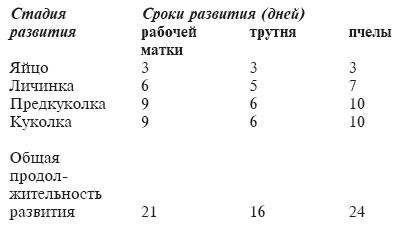Для нормального развития всех особей пчелиной семьи в гнезде должны быть постоянная температура 34—35°С, достаточные запасы корма и пчел-кормилиц. Продолжительность развития особей пчел приведена в таблице.
РОЕНИЕ
Роение – способность пчел к размножению и расселению путем отделения части семьи вместе с маткой.
Подготовка к роению начинается задолго до выхода роя. В связи с роением в гнезде пчел происходят большие изменения. После зимовки перезимовавшие пчелы сменяются молодыми, только что вышедшими из ячейки. Молодые пчелы способны выкормить личиной в 4 раза больше, чем перезимовавшие. Это способствует быстрому росту пчелиной семьи. Пропорционально увеличению числа пчел в семье растет суточная яйцекладка, семья быстро крепнет. В ней накапливается много молодых пчел, не загруженных работой по кормлению пчелиного расплода. Если в это время в природе нет выделения нектара, на сбор которого могли бы переключиться не занятые работой пчелы, то в семье оказывается очень много пчел без работы. Рабочее состояние в пчелиной семье снижается.
Признаки роения. Характерный признак роевого состояния пчелиной семьи – закладка мисочек и откладка в них яиц. Перед роением пчелы отстраивают до 10 и более маточников. Строительство сотов прекращается, вылет пчел за нектаром сокращается. В семье много трутневого расплода. Количество кормящих матку пчел уменьшается, она снижает яйцекладку, становится легче и способна летать. Масса старых маток, вылетающих с роем, составляет в среднем 197—203 мг, что на 20 мг меньше массы неоплодотворенных молодых маток, вылетающих с роями. Спад яйцекладки приводит к увеличению числа бездеятельных пчел, которые собираются у прилетной доски и висят под ульем в виде клубка. Эти пчелы накапливают энергию и остаются физиологически молодыми. Энергию пчелы используют на отстройку нового гнезда.
Причины, способствующие роению: переполнение гнезда молодыми пчелами, не занятыми работой; присутствие в улье старой матки; несвоевременное расширение гнезда и его плохая вентиляция; перегрев гнезда, переполнение его печатным расплодом. Главной причиной возникновения роевого состояния является недостаточное выделение феромонов у матки. Именно с этим связано появление в семье большого количества пчел-трутовок, понижение строительной деятельности и закладка пчелами маточников.
Вылет роя. При роении семья делится на две приблизительно равные части. С роем улетают пчелы всех возрастов. Примерно 80% от всего количества пчел, вылетающих с роем, составляют пчелы до 24 дней. Иногда с роем вылетает до 7% трутней. Рой вылетает на восьмой – девятый день после откладки яиц маткой в мисочки. В это время первые маточники бывают запечатанными. Вылет роя может задержаться из-за дождя и холодной погоды. Тогда, кроме старой, с роем вылетают молодые матки, только что вышедшие из маточников. Рой собирается по сигналу отдельных пчел в не продуваемом ветром месте. Если у пчел имеется выбор жилища, то они улетают на расстояние иногда до 25 км и более. Первые рои обычно прививаются на дереве, кустарнике или специально устроенном привое невысоко от земли, где остаются несколько часов, а затем улетают на новое место.
Вылет второго и последующих роев. В семье, отпустившей рой, остаются часть пчел, расплод и личинки маток в разных стадиях развития. Пчелы, вышедшие из запечатанного расплода, составляют основную массу второго роя.
Первая молодая матка выходит из маточника на восьмой день после запечатывания. Второй рой с молодой маткой, если погода не задержала выхода первого роя, выходит на девятый день после первого. За одни – двое суток до выхода второго и последующих роев можно слышать сигнальные звуки Маток. По ним матки узнают о присутствии в гнезде соперниц. Вторые рои менее чувствительны к ненастной погоде по сравнению с первыми и могут вылетать при сильном ветре. В рое может быть несколько маток, одновременно вышедших из маточников.
На второй или третий день после выхода второго роя может вылететь третий рой с неплодными матками. В каждом последующем рое число пчел уменьшается. После прекращения роения пчелы прогрызают маточники и уничтожают маток, находящихся в них. Молодая матка спаривается с трутнями, и в семье восстанавливается обычный порядок.
Обычно роение совпадает с периодом максимального развития пчелиных семей, когда в них бывает наибольшее количество взрослых и развивающихся особей, но в отдельные годы роение может наступить очень рано. Первые самые ранние рои в центральной полосе России могут выходить в мае. Роевая пора длится от двух до шести недель. В некоторых местностях роение может повториться.
Отроившиеся семьи используют свою роевую энергию для отстройки сотов и сбора меда. Роение связано с большими затратами труда по ловле роев и посадке их в улей, кроме того, в период подготовки семей к роению снижается их продуктивность. Поэтому на крупных пасеках необходимо принимать меры по предупреждению роения, используя специально разработанные методы искусственного размножения пчелиных семей.
ЖИЗНЕДЕЯТЕЛЬНОСТЬ ПЧЕЛИНОЙ СЕМЬИ В РАЗЛИЧНЫЕ ПЕРИОДЫ ГОДА
Весенне-летний период. Весной и летом пчелы наиболее активны. В этот период они выполняют большую работу, причем в определенной последовательности. Переход пчел от одних видов работ к другим происходит в зависимости от потребности семьи, физиологического состояния и окружающих условий. При изменении условий и состояния семьи пчелы могут возвращаться к выполнению уже пройденного ими круга работ.
Работа пчел в улье. В первые дни после вывода пчелы малоактивны, затем они начинают чистить ячейки, кормить личинок, строить соты, принимать нектар от пчел-сборщиц и перерабатывать его в мед, утрамбовывать пыльцевые обножки, чистить улей и охранять гнездо. С 12-дневного возраста при благоприятной погоде пчелы вылетают на ориентировочный облет и освобождаются от экскрементов. Возраст, в котором пчелы приносят в улей нектар и пыльцу, различен и во многом зависит от возрастного состава семьи.
Сбор нектара и пыльцы. При благоприятной погоде пчела совершает за день 9—10 вылетов. За один вылет она доставляет в среднем 30—40 мг нектара или 10—15 мг пыльцы. Для сбора 1 кг меда с липы пчелы сильной семьи совершают до 25 тыс. вылетов. При посещении других видов растений, выделяющих меньшее количество нектара – 100—120 тыс. вылетов. За 19 дневных вылетов пчела из сильной семьи может собрать с липы 900—950 мг нектара. Продолжительность работы пчел по сбору нектара на одном цветке колеблется от 5 до 12 с. Для заполнения медового зобика медом требуется 1—2 мин.
Пчелы предпочитают посещать один вид растений, тот, который выделяет наибольшее количество нектара, содержащего смесь сахаров оптимальной для сбора пчелами концентрации. Но на протяжении дня может наблюдаться и флормиграция: утром пчелы посещают один вид растений, к вечеру переключаются на другой.
Сигнализация. Пчелы обладают способностью передавать информацию об источнике медосбора. Вернувшись в улей, пчелы-разведчицы совершают своеобразные сигнальные движения, формы которых зависят от места расположения и величины источника нектара. Сигнальные движения бывают круговые, виляющие и т. д.
При круговом движении пчела бежит по небольшому кругу сначала в одном направлении, потом, повернувшись на 180°, в противоположном. Круговые движения извещают пчел о том, что найдены цветки с нектаром не далее чем в ста метрах от улья. Когда открыт новый источник корма, расположенный значительно дальше от улья, разведчицы сообщают об этом продолжительностью сигнальных движений. Такие движения могут длиться от нескольких секунд до 1—3 мин. Более продолжительные движения мобилизуют множество пчел на медосбор.
Мобилизация пчел на медосбор осуществляется также с помощью звуков, которые издают пчелы, окружающие пчел-разведчиц, совершающих сигнальные движения. Во время сигнальных движений пчелы-разведчицы предлагают окружающим их пчелам принесенный корм.
Осенне-зимний период. Пчелиная семья в течение всего сезона активной жизнедеятельности, за исключением периода размножения, готовится к зимовке. Она строит гнездо, выращивает к зиме много рабочих пчел и заготавливает большие запасы меда.
Кормовые запасы пчелы располагают в верхней части улья, ближе к задней стенке гнезда. Ниже, главным образом в противолетковой части гнезда, пчелиная семья выращивает расплод. С наступлением осенних холодов здесь же пчелы образуют зимний клуб, который, постепенно потребляя кормовые запасы, продвигается вверх.
Клуб пчел всегда размещается так, что верхней своей половиной занимает значительную площадь печатного меда. Этот обогреваемый мед служит им для питания. Часть медовых ячеек пчелы распечатывают. Распечатанный мед притягивает к себе водяные пары, находящиеся в воздухе, разжижается, и пчелы его используют в пищу.
В первые месяцы зимовки пчелы потребляют в среднем 20—25 г корма в день, или 600—700 г в месяц. К концу зимы расход меда постепенно возрастает до 1—1,2 кг в месяц, а с появлением расплода удваивается. В результате потребления 1 кг меда образуется 2720 кал тепла, 1448 г углекислоты и 502 г воды.
Пчелы не приспособлены к накоплению большого количества питательных веществ в своем организме. Накопление жира у них составляет не более 2% от массы тела, тогда как у насекомых, впадающих в спячку, запасы жира достигают 18—20%. Отдельно взятые пчелы не могут существовать продолжительное время в состоянии холодового оцепенения. Для того чтобы противостоять зимней стуже, они собираются в клуб и сохраняют жизнь, находясь в активном состоянии за счет потребления кормовых запасов.
У пчел, объединенных в клуб, замедленный ритм жизни, физиологические процессы у них протекают менее интенсивно. Пчелы, собранные в клуб, в период зимнего покоя потребляют корма в 20—25 раз меньше, чем одиночные пчелы за то же время.
Слабые семьи образуют клуб при температуре наружного воздуха 13°С, средние – при температуре около 10°С, сильные – при температуре 8°С.
Основная масса пчел в клубе размещается на участках сотов, свободных от меда (75% всей площади, занятой клубом). Остальные 25% площади, занятой клубом зимующих пчел, приходятся на участок сотов, заполненных медом. Пчелы, сидящие на сотах с медом, согревают его, чтобы сделать доступным для потребления.
Клуб пчел имеет форму эллипсоида (приплюснутого шара). Внутри клуба пчелы сидят неплотно и могут свободно двигаться. Тепло вырабатывается главным образом мускульной энергией активно двигающихся пчел. Внутри клуба без расплода пчелы поддерживают температуру около 25—30°С, а в оболочке – около 15°С.
Внешняя часть клуба состоит из плотно сидящих пчел, образующих оболочку толщиной от 2,5 до 7 см. Пчелы в оболочке постоянно меняются местами с теми, которые сидят внутри клуба. Оболочка играет важную роль во время зимовки.
Она позволяет пчелам сохранять тепло, вырабатываемое в середине клуба. При понижении температуры окружающего воздуха клуб сжимается, его объем уменьшается, а оболочка утолщается, благодаря чему сохраняется тепло. При повышении температуры воздуха клуб расширяется и температура внутри него понижается.
В начале зимовки необходимая температура в клубе поддерживается за счет тепла, выделяемого каждой особью в процессе ее обычной жизнедеятельности. При понижении температуры окружающего воздуха клуб уплотняется, пчелы заполняют междурамочные пространства и пустые ячейки сотов. При дальнейшем понижении температуры наружного воздуха для сохранения необходимой температуры в клубе пчелы потребляют дополнительное количество кормовых запасов.
Слабые семьи начинают расходовать корм на обогрев клуба при снижении температуры наружного воздуха до 8°С (примерно на 2 месяца раньше, чем сильные). С увеличением количества потребляемого корма у пчел повышается обмен веществ, в результате они быстрее изнашиваются и выходят из зимовки менее жизнеспособными.
Если семья во время зимовки находится в нормальном состоянии, то количество потребленного ею кислорода и выделенного углекислого газа находится в определенном соотношении. Это соотношение может нарушаться в зависимости от объема съеденного корма и состояния пчел. В спокойном состоянии потребность в кислороде у пчел в расчете на 1 кг массы за 1 ч составляет 457 см3, в возбужденном состоянии она возрастает до 297 тыс. см3, то есть в 650 раз.
В процессе зимовки по мере наполнения задней кишки калом активность пчел, как и клуба в целом, повышается. Пчелы начинают выделять больше тепла. Клуб становится более рыхлым, объем его увеличивается. В связи с этим пчелы покидают ячейки ложа вначале в центре клуба, а позднее – все далее к периферии. Создаются благоприятные условия для начала яйцекладки матки. При содержании в гнезде расплода резко возрастает возбудимость и активность пчел в клубе, и они сидят в ячейках сотов только в оболочке клуба. Пчелы быстрее, чем в начале зимовки, реагируют на любой источник раздражения, особенно на свет, даже красный.
Внутри клуба пчелиной семьи в период зимовки содержание углекислого газа повышается до 4—5%, а кислорода снижается до 17—18% (обычно в воздухе содержится углекислого газа 0,03%, а кислорода более 21%). При понижении содержания кислорода и повышении концентрации углекислого газа в период зимнего покоя семьи окислительные процессы в организме пчел замедляются. Концентрация углекислого газа внутри клуба зимующих пчел в сильных семьях выше, чем в средних и слабых.
В процессе обмена веществ пчелы выделяют углекислоту и водяные пары. Количество водяных паров, которое может удерживаться в воздухе, зависит от его температуры. При температуре 20°С в 1 л воздуха находится не более 23 мг паров воды. Это соответствует 100-процентной относительной влажности воздуха. Пчелиные семьи во время зимовки поддерживают необходимый режим влажности 75—78%.
По мере поедания меда клуб пчел передвигается по сотам. Если меда на каждой рамке достаточно, клуб движется вверх и направляется к задней стенке улья по тем же междурамочным пространствам, в которых сидят пчелы. Если же в рамках меда мало, то пчелы, израсходовав его, вынуждены перемещаться на соседние рамки. Совершать такой переход пчелы в состоянии лишь при достаточно высокой температуре в гнезде. При наружной температуре ниже 0°С клуб пчел не может передвигаться. Перемещение пчел на соседние рамки сопровождается нарушением их спокойного состояния. В результате перемещения может произойти раздвоение клуба. Зимовка в таких случаях кончается гибелью одной или обеих половин клуба из-за холода и чрезмерного напряжения.
В течение зимы пчелы не испражняются. Несмотря на высокую усвояемость меда, он все же дает неперевариваемые остатки (до 1,8%), скапливающиеся в задней кишке. Пчелы могут удерживать до 40 мг каловых масс. Дальнейшее превышение каловой нагрузки вызывает у них понос.
К концу зимнего периода матка начинает яйцекладку. При беспокойной зимовке она может наступить в декабре. С появлением расплода клуб становится рыхлым, пчелы больше потребляют корма. Наступает критический период в жизни пчелиной семьи. В теплую погоду пчелы вылетают на очистительный облет.
ПОДГОТОВКА К ПЧЕЛОВОДНОМУ СЕЗОНУ
Сроки выставки пчел из зимовника. Весной пчелиные семьи выносят из помещения на пасечный точок в различные сроки, которые в основном зависят от условий зимовки пчел. Если зимовка проходит нормально, в ульях мало подмора, пчелы спокойны и у них нет признаков поноса, количество кормовых запасов в пчелиных семьях отвечало требуемым нормам, а качество кормов было хорошее, спешить с выставкой пчел из зимовника не следует. Ульи выносят на точок при температуре наружного воздуха 12°С.
В тех случаях, когда пчелы пошли в зимовку с недостаточным количеством кормов или кормами, содержащими примесь падевого меда, если пчелы сильно беспокоятся, шумят и выползают на прилетную доску улья или его переднюю стенку и пачкают их пятнами поноса, запаздывать с выставкой пчелиных семей из зимовника не следует. В это время температура воздуха в зимовнике часто повышается до 8—10°С и пчеловод практически бессилен ее снизить. В этот период нередки случаи ослабления, а иногда и гибели пчелиных семей. При неблагоприятной зимовке, когда температура воздуха в помещении повысится до 6°С и пчеловод не сможет ее снизить, пчел ранней весной выносят из зимовника.
На мелких приусадебных пасеках часто применяют сверхраннюю выставку пчел из зимовника. Проводят эту работу при температуре воздуха на улице 6—8°С. Весной часто бывают отдельные дни, когда в полдень на некоторое время температура воздуха на припеке поднимается до 12—14° С, и пчелы в это время хорошо облетываются, очищая кишечник от кала. Семьи, выставленные на улицу в ранние сроки, весной развиваются лучше.
Подготовка точка. Перед выставкой пчел из помещения точок очищают от снега (для ускорения его таяния на пасеке разбрасывают золу или торф), расставляют подставки под ульи, устанавливают навес для контрольного улья и поилку для пчел. Ставить поилку после выставки пчел из зимовника не рекомендуется, так как они могут найти другой источник воды и пользоваться поилкой не будут. Если на пасеке обнаружены заболевшие пчелы, то поилку убирают, так как через воду может распространиться заболевание на пчелиные семьи всей пасеки.
Выставка пчел. Ульи из зимовника лучше всего выносить в тихий солнечный день рано утром. Эту работу нужно закончить в первой половине дня с таким расчетом, чтобы пчелы совершили облет в полдень, то есть в самое теплое время. На большой пасеке, где выставка ульев из зимовника занимает много времени, выносить пчелиные семьи из помещения можно вечером. В этом случае на следующий день пчелы всей пасеки могут совершить очистительный облет.
Перед выставкой пчел летки во всех ульях закрывают летковыми задвижками. Ульи ставят на носилки летком назад или берут с боков под дно, осторожно выносят их из помещения и ставят на подставки. Выносить ульи, держа их за прилетную доску нельзя: она может отломиться, и улей с пчелами упадет на землю.
На крупных пчеловодческих фермах, где пчелиные семьи зимуют в помещениях, рассчитанных на 600, 1200 пчелиных семей и более, пчел из зимовника вывозят на автомашине или тракторной тележке. При погрузке пчел в кузов машины или на тракторную тележку соблюдают ту же предосторожность, что и при перевозке пчел на медосбор. Из кузова машины или тракторной тележки ульи разгружают непосредственно на пасечном точке и расставляют их по заранее намеченным местам на подставки или колышки.
Наблюдение за облетом пчел. На большой пасеке после выставки пчел из зимовника открывать летки сразу во всех ульях не следует, так как это может привести к слету пчел, значительному ослаблению одних и чрезмерному усилению других пчелиных семей. Летки для облета пчел открывают через один улей. После облета первой партии пчелиных семей летки открывают в остальных ульях и дают возможность облететься остальным семьям.
Внимательное наблюдение за пчелами во время их первого облета дает возможность пчеловоду сделать предварительное заключение о результатах зимовки пчел и состоянии каждой пчелиной семьи. Безматочные пчелиные семьи облетываются плохо. Пчелы сильно возбуждены и бегают по прилетной доске, как бы отыскивая матку.
При гибели большого количества пчел и недостатке кормовых запасов в улье облет пчел слабый. Если из улья идет гнилостный запах, а пчелы испражняются на прилетной доске или передней стенке улья, возможно заболевание их нозематозом. Если пчелы, пытаясь взлететь, падают на землю и ползают около улья, растопырив крылья, можно предположить акарапидоз. Дружный облет пчел подтверждает хорошее состояние пчелиной семьи.
Результаты наблюдения за облетом пчел пчеловод заносит в пасечный журнал.
Оказание помощи неблагополучно перезимовавшим семьям. В первую очередь пополняют запасы кормов в тех семьях, которые страдают от голода. В улей ставят рамки с медом или соты с теплым сахарным сиропом. При сильном загрязнении пчелиного гнезда пятнами поноса из улья удаляют рамки со следами поноса и с недоброкачественным кормом (закисший, закристаллизовавшийся или падевый мед), на их место подставляют в гнездо светло-коричневые соты с теплым сахарным сиропом.
Беглый осмотр пчел. В день выставки ульев из зимовника осматривают все пчелиные семьи и очищают от подмора или заменяют донья в ульях. Во время осмотра определяют общее состояние гнезда, силу пчелиной семьи, наличие матки и кормов. Полного разбора пчелиного гнезда при этом не делают. При определении общего состояния устанавливают, есть ли в улье сырость, подмор пчел, испачканы ли соты пятнами поноса, повреждены они мышами или нет. Сила пчелиной семьи определяется количеством рамок, занятых пчелами.
О наличии матки судят по имеющимся в ячейках сотов яиц на рамках с расплодом. Количество кормов устанавливают сначала на крайних рамках, а если на них меда нет, то на других рамках гнезда. Одновременно проверяют наличие в рамках перги.
Утепление гнезд и подкормка пчел. Хорошему развитию пчелиных семей весной способствуют утепление гнезд и подкормка пчел. В весенний период в каждой пчелиной семье должно быть не менее 8 кг меда и 1—2 рамки с пергой. При недостатке меда пчел подкармливают теплым сахарным сиропом в количестве, необходимом для создания требуемой нормы кормов. При подкормке пчел весной сахарный сироп готовят в концентрации 1:1. Скармливать сахарный сироп пчелам лучше в кормушках в количестве 2—3 кг за одну подкормку.
Гнездо пчел тщательно утепляют с боков и сверху, используя для этого подушки или маты. Хорошие результаты дает дополнительное утепление гнезд бумагой, помещенной поверх холстиков под подушкой или матом. Леток сокращают до 1—3 см. По мере развития пчелиной семьи, с наступлением теплой погоды и появлением в природе цветов, выделяющих нектар, леток расширяют.
Для изготовления утепляющих подушек и утепления зимовников применяют специальный материал. Качество его зависит от коэффициента теплопроводности (количество килокалорий тепла, теряемого за 1 ч поверхностью материала площадью 1 м2 и толщиной 1 м при разности температур наружного и внутреннего воздуха 1°С).
Чем меньше коэффициент теплопроводности, тем лучше утепляющий материал. Важно, чтобы этот материал как можно меньше слеживался, в противном случае в утепляющем слое образуются пустоты, что приводит к снижению температуры в улье или зимовнике.
Утепляющий материал должен быть сухим, так как при увлажнении у него повышается теплопроводность. Применять в качестве утепляющего материала сено и древесные опилки не рекомендуется, так как сено плохо сохраняет тепло, а древесные опилки со временем слеживаются.
Качество утепляющих материалов и их теплопроводность представлены в таблице.
Характеристика утепляющих материалов
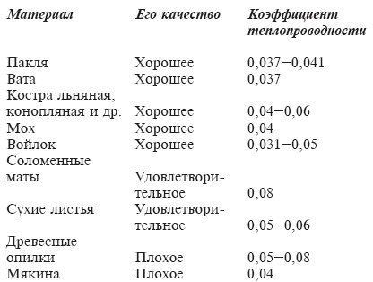Помощь безматочным семьям. Отсутствие расплода при первом беглом осмотре пчелиной семьи не может служить доказательством безматочности пчел. Нередки случаи, когда у хорошо зимующей пчелиной семьи матка начинает откладку яиц в ячейки сотов после выставки улья из зимовника. Если при беглом осмотре пчелиной семьи пчеловод не обнаружил расплода в улье, рекомендуется поставить в гнездо контрольный сот, то есть рамку с молодыми личинками. Появление на этом соте через несколько дней свищевых маточников служит доказательством гибели матки во время зимовки. В этом случае пчелиной семье оказывают срочную помощь.
В сильную безматочную пчелиную семью подсаживают матку, взятую из нуклеуса, а сам нуклеус присоединяют к слабой пчелиной семье или другому нуклеусу, чаще всего находящемуся в этом же улье за глухой перегородкой. Если исправляют среднюю по силе безматочную семью пчел, то к ней присоединяют весь нуклеус, вместе с маткой и пчелами. Рамки с пчелами из нуклеуса ставят рядом с рамками исправляемой пчелиной семьи.
Слабую пчелиную семью без матки не исправляют, ее присоединяют к другой слабой семье с маткой или к нуклеусу. Оставлять на пасеке безматочные семьи и выводить в них рано весной маток нельзя, так как это приведет к слету пчел из безматочной семьи или воровству пчел на всей пасеке.
Исправлением безматочных семей лучше всего заниматься вечером, когда уменьшается лёт пчел на пасеке. Для предотвращения драки между пчелами соединяемых семей им придают общий запах при помощи анисовых или мятных капель. Чистка доньев. Во время зимовки на дне скапливается подмор, который после выставки ульев из зимовника пчелы выбрасывают наружу. При этом большое количество пчел отвлекается от работ по сбору нектара и переключается на санитарную обработку гнезда. Пчеловод после выставки пчел из зимовника должен помочь пчелам очистить донья во всех ульях.
В тех случаях, когда донья отъемные, заменяют грязное дно чистым, продезинфицированным. Подмор пчел ссыпают в специальный ящик, а затем сжигают или закапывают. Дно очищают стамеской, промывают дезинфицирующим раствором и обжигают паяльной лампой. Если дно улья неотъемное, то после выставки пчел из зимовника специальным проволочным крючком очищают дно от мертвых насекомых, а всю остальную санитарную обработку делают одновременно с проведением главной весенней ревизии пчелиных семей.
Предотвращение пчелиного воровства. Возникает пчелиное воровство из-за ошибок в работе пчеловода, к числу которых относятся: сильно расширенные летки в безвзяточный период, несоблюдение предосторожности при работе с пчелами (сильно открытое гнездо при осмотре пчел, постановка рамок с медом около улья и др.), содержание на пасеке безматочных и слабых пчелиных семей и т. д.
Начавшееся воровство определяют по поведению пчел на прилетной доске улья. Они беспокоятся, вступают в драку с чужими пчелами, пытающимися проникнуть в улей через леток. Необходимо срочно сократить летки во всех ульях, независимо от того, подвергается в данный момент пчелиная семья нападению других пчел или нет. Для отпугивания пчел-воровок протирают тряпкой, смоченной в керосине, переднюю стенку и прилетную доску улья. Постановка на прилетную доску наклонной дощечки усиливает охрану летка пчелами и способствует более активной борьбе с начавшимся воровством пчел на пасеке. Иногда для предотвращения воровства семью, на которую нападают, и семью с пчелами-воровками на 1—2 дня уносят в зимовник.
ВЕСЕННЯЯ РЕВИЗИЯ ПЧЕЛИНЫХ СЕМЕЙ
Основные правила работы с пчелами. Прежде чем приступить к работе с пчелами и проводить осмотр пчелиных семей, пчеловод должен подготовить к работе необходимый пчеловодный инвентарь и оборудование: переносный и рабочий ящики, стамеску, пасечный нож, щетку для сметания пчел, лицевую сетку от ужаления, халат и дымарь. При разжигании дымаря пользуются гнилушками или деревянным грибом. Не следует применять в качестве горючего материала тряпки, так как они дают очень едкий дым, что сильно раздражает и озлобляет пчел. Помещать в дымарь кусочки воска или прополиса нецелесообразно, так как это приводит лишь к ненужной трате этих дорогостоящих продуктов пчеловодства. При разжигании дымаря не следует пользоваться чрезмерно сухими гнилушками, которые дают очень горячий дым, сильно раздражающий пчел. Кроме того, при очень сухих гнилушках из дымаря вылетает большое количество искр, что может привести к загоранию утеплений в гнезде.
После подготовки инвентаря и оборудования к работе с пчелами пчеловод уделяет внимание личной гигиене и тщательно умывается. Пчелы приходят в раздражение от сильных и резких запахов и особенно запахов духов, одеколона, лука, чеснока, пота, алкоголя. Перед работой с пчелами пчеловод должен одеться в легкую одежду, поверх которой надевает белый халат.
При осмотре гнезда нельзя стоять напротив летка. Осмотры пчелиных семей на некоторое время возбуждают пчел, снижают их работоспособность и отрывают от сбора нектара. Поэтому основные работы с пчелами, особенно на небольших пасеках, лучше всего проводить во второй половине дня. Нельзя работать с пчелами в ветреную и ненастную погоду, чтобы не нарушить тепловой режим в улье и не вызвать сильное озлобление пчел. Осматривать пчелиные семьи лучше всего при температуре не ниже 15—16°С (в тени). При крайней необходимости частичный осмотр пчел без полного разбора гнезда можно делать при температуре 12°С. Прежде чем приступить к работе с пчелами, необходимо знать, какова цель данного осмотра пчелиной семьи, какие основные работы при этом необходимо выполнить. Определить цель осмотра в значительной степени помогают те записи, которые пчеловод делает в журнале. Осматривать пчелиные семьи без заранее поставленной цели не следует, так как чем больше и чем чаще пчеловод бесцельно беспокоит пчелиные семьи, тем меньше на пасеке будет получено меда.
Осмотры пчелиных семей, в зависимости от степени выполняемой пчеловодом работы, могут быть полными или частичными. При частичном осмотре в гнезде отодвигается (осматривается) одна или несколько рамок. Примером такого осмотра может быть расширение гнезд пчел, во время которого новый сот ставят между последней рамкой расплода и рамкой с медом.
Полный осмотр пчелиной семьи требует осмотра всех рамок в гнезде, что влечет за собой сильное беспокойство семьи, которая практически после такого осмотра на весь день теряет работоспособность и прекращает собирать нектар и пыльцу. За пчеловодный сезон можно делать лишь несколько полных осмотров, связанных с проведением ревизии пчел, пересадкой их в чистый продезинфицированный улей, определением осенью количества кормов в улье и сборкой гнезд пчел на зиму.
Техника осмотра пчелиных семей. Перед осмотром пчел в леток пускают одну-две струи дыма и через некоторое время снимают с улья крышку, осторожно прислоняя ее к задней стенке корпуса. Вынув из улья утепление и частично сняв потолочные дощечки или приоткрыв холстинку, дают поверх рамок 1—2 струи дыма и приступают к выполнению заранее намеченных работ. Пчеловод не должен злоупотреблять дымом: это беспокоит пчел.
Перед осмотром гнезда, перед тем как вынуть рамку из улья, ее осторожно стамеской сдвигают с места и за плечики поднимают вверх. При необходимости осмотра сота с противоположной стороны рамку поворачивают на ребро и, развернув вокруг оси, опускают верхнее ее плечико вниз. Держать рамку наклонно и переворачивать ее нельзя, так как из ячеек будет вытекать свежепринесенный нектар, а сот может разломиться. Осматривая рамки, их держат над ульем, чтобы матка не упала на землю. Нельзя вынутые из улья рамки прислонять к улью: его можно испачкать медом, и в безвзяточное время это может вызвать воровство пчел.
Вынутую рамку ставят в переносный ящик, закрывая его крышкой.
При работе с пчелами не разрешается делать резких движений, махать руками: это вызывает раздражение пчел. Закончив осмотр гнезда, рамки ставят в улей в прежнем порядке. При необходимости в улей помещают вставную доску, боковые и верхние утепления и закрывают улей крышкой. Все работы нужно делать быстро и аккуратно.
Цель весенней ревизии. Весной тщательно осматривают пчелиные семьи для выявления состояния каждой из них после зимовки. На основании результатов весенней ревизии применяют те или иные приемы, чтобы создать благоприятные условия для дальнейшего развития и наращивания силы пчелиных семей. Во время весенней ревизии определяют количество и качество кормов, устанавливают силу пчелиной семьи, количество расплода и качество матки, а также общее санитарное состояние гнезда.
Определяя количество меда в улье, учитывают, что полностью запечатанный сот размером 435 х 300 мм содержит от 3,5 до 4 кг меда. На одной стороне такого сота, если он полиостью запечатан, содержится от 1,7 до 2 кг меда. Всего весной в каждом улье должно быть не менее 8—10 кг меда. Если окажется, что в зимний период какая-то часть меда в улье закисла или закристаллизовалась, то этот непригодный для скармливания пчелам мед заменяют доброкачественным из имеющегося в запасе или подкармливают пчел сахарным сиропом, предварительно изъяв из улья рамки с испорченным кормом.
Количество пчел определяют по числу рамок, занятых пчелами, в перерасчете на полную рамку. Таким же путем устанавливают и количество расплода в гнезде. Качество матки оценивают по расплоду. Если имеется много ячеек с трутневым расплодом в пчелиных ячейках или расплодом, расположенным на сотах некомпактно (между ячейками с печатным расплодом находятся ячейки с личинками и яйцами), то качество матки неудовлетворительное.
Такую матку из улья удаляют и дают в клеточке или под колпачком хорошую матку из нуклеуса. Иногда пчеловод при осмотре гнезда находит матку, а расплода на сотах не обнаруживает, что чаще всего бывает при заболевании пчел нозематозом. Матку из улья удаляют, а пчелиную семью исправляют как безматочную. Когда на сотах находятся печатный расплод и свищевые маточники, но нет яиц, вероятнее всего, матка внезапно погибла. Этой семье необходимо оказать срочную помощь как безматочной.
При неудовлетворительном санитарном состоянии гнезда улей очищают, при необходимости пчел пересаживают в чистый продезинфицированный улей. Для очистки улья от следов поноса применяют стамеску или специальный скребок. Дно и стенки корпуса промывают зольным раствором щелока, для приготовления которого на 10 л воды берут 6 кг древесной золы и 1 кг свежегашеной извести. Приготовленный раствор перемешивают 3—4 раза в сутки, после чего используют для дезинфекции.
Хорошие результаты дает обжигание улья огнем паяльной лампы до легкого побурения стенок. При санитарной обработке улья особое внимание уделяют местам соединения досок в стенках и дне.
После проведения весенней ревизии гнездо собирают с таким расчетом, чтобы в улье было достаточное количество свободных ячеек для откладки маткой яиц, а пчелы были обеспечены требуемым количеством доброкачественных кормов. Гнездо должно быть хорошо утеплено с боков и сверху.
Слабые пчелиные семьи, как правило, подлежат обязательной выбраковке, так как они не дают товарной продукции и обычно не обеспечивают себя кормовыми запасами на зимний период. Исправлять слабые пчелиные семьи на крупных пасеках путем постановки в них рамок с печатным расплодом нецелесообразно, так как эта работа требует большой затраты сил и времени, а положительного эффекта практически не дает. Взамен выбракованных слабых семей на пасеке в летний период организуют новые сильные семьи, сформированные от наиболее продуктивных пчелиных семей.
Проводят весеннюю ревизию в теплый безветренный день при температуре воздуха не ниже 16°С.
РАСШИРЕНИЕ ГНЕЗД, СТРОИТЕЛЬСТВО СОТОВ, ПОДКОРМКА ПЧЕЛ
Расширение гнезд. Весной, когда в улье на предпоследней рамке появится расплод, гнездо расширяют. Более раннее расширение гнезда охлаждает его и задерживает развитие пчелиной семьи, но запаздывать с расширением гнезда тоже нельзя: матка сокращает откладку яиц, развитие пчелиной семьи замедляется, и у нее может возникнуть роевое состояние.
Вначале гнезда расширяют светло-коричневыми сотами. Чтобы пчелы быстрее освоили их и матка стала откладывать в их ячейки яйца, эти соты обрызгивают теплой водой. Рамку с отстроенным сотом помещают между последним сотом с расплодом и медово-перговой рамкой. Рано весной ставить в ульи светлые соты, в которых не выводился расплод, не следует, так как матка неохотно откладывает в них яйца (эти соты охлаждают гнездо). При наступлении устойчивой теплой погоды сот можно ставить в центр гнезда. При наступлении хотя бы небольшого медосбора расширять гнезда пчел нужно рамками с вощиной.
К наиболее частым ошибкам пчеловодов при расширении гнезд относится запоздание с постановкой рамок с вощиной и расширение гнезда преимущественно рамками с отстроенными сотами. В этом случае на пасеке снижается количество валового выхода воска, количество новых сотов увеличивается медленно, снижается работоспособность пчелиных семей, молодые пчелы недостаточно загружены работой, в результате чего в семье возникает роевое состояние и снижается продуктивность пасеки. Пчеловод должен знать, что на выделение 1 кг воска пчелы расходуют от 3,5 до 4 кг меда, независимо от того, занимаются они строительством новых сотов или нет. И если пчеловод не обеспечивает пчел строительной работой и не ставит в улей рамок с вощиной, то поедаемый на выделение воска мед будет расходоваться вхолостую, так как воск, выделяемый восковыми железами пчел, не будет использован по назначению.
Весенняя выбраковка сотов. На пасеке выбраковывают соты, погрызенные мышами, содержащие заплесневелую пергу или закисший мед, сильно запачканные пятнами поноса, поломанные, темные, не просвечивающиеся в донышках ячеек. Подлежат выбраковке неправильно отстроенные соты и имеющие большое количество трутневых ячеек. Заменяют и старые соты. Старение сота связано с изменением его естественной окраски и и уменьшением объема ячеек (табл.).
Изменение сота в зависимости от срока его использования
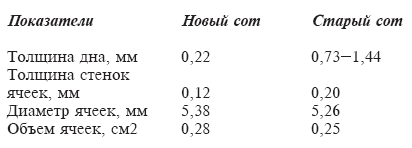С уменьшением размера ячеек уменьшаются размер и масса выводимых в них пчел, что отрицательно сказывается на продуктивности пчелиной семьи, так как уменьшение массы пчелы приводит к одновременному уменьшению размеров ее отдельных органов (хоботка, крыльев, медового зобика и т. д.).
Ежегодно на пасеке выбраковывают не менее 1/3 всех сотов, а для правильного использования медосбора на пасеке необходимо иметь большое количество сотов. Каждая заново организованная пчелиная семья к концу года должна иметь полный комплект сотов, которые приходится отстраивать в других семьях. Отсутствие полного комплекта рамок в организованных семьях пчел приводит на следующий год к значительному снижению медосбора. Строительство новых сотов. При недостатке сотов развитие пчелиной семьи задерживается, пчелы приходят в роевое состояние, мало собирают меда. Для наиболее полного использования возможностей пчел по сбору меда каждая пасека должна быть обеспечена достаточным количеством сотов, потребность в которых указана в таблице.
Нормы обеспеченности сотами при содержании пчел в ульях различных систем
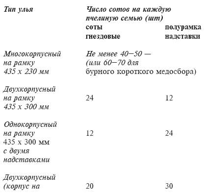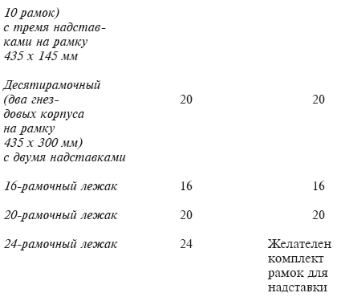Отстроенные соты должны состоять в основном из ячеек, пригодных для вывода рабочих пчел. Свежеотстроенные соты с большим количеством ячеек трутневых, медовых и переходной формы оставлять для запаса нельзя. Их также выбраковывают. При отстройке сотов в полурамках надставок рамки с вощиной помещают между правильно отстроенными сотами, при этом в каждой надставке должен быть полный комплект рамок.
Перед наващиванием рамок в их боковых планках специальным дыроколом или шилом прокалывают отверстия, через которые натягивают проволоку в 4 ряда с таким расчетом, чтобы от верхнего бруска рамки до первого ее ряда было 1—3 см, а между остальными рядами – 6—8 см. В полурамках надставок проволоку натягивают в один ряд. Отсутствие проволоки в полурамках приводит к поломке сотов при откачке из них меда.
Проволоку закрепляют у одного из верхних отверстий и после пропускания ее через каждое отверстие в боковых планках рамок сильно натягивают и закрепляют у нижнего отверстия с противоположной стороны. Важно, чтобы проволока была натянута туго и при этом не было перекоса планок рамок. Отверстия для проволоки должны быть расположены строго по центру боковых планок рамок.
Наващивание рамок. Для проведения этой работы необходимо иметь доску-лекало, специальный каток со шпорой или понижающий трансформатор с напряжением на выходе 12 В и специальное приспособление, при помощи которого при электронаващивании вощину прижимают к доске-лекалу. При наващивании рамок катком со шпорой рамку устанавливают на доску-лекало в вертикальном положении и горячим катком прикатывают вощину к внутренней стороне верхнего бруска, после чего рамку кладут на смоченную водой доску-лекало горизонтально и шпорой впаивают проволоку в вощину. Каток разогревают в горячей воде. При наващивании рамок одновременно пользуются 2—3 катками. Производить сильный нажим катком и шпорой на вощину и проволоку не следует, так как это приводит к порезу и порче листа вощины, а пчелы отстраивают сот с отверстиями.
При электрическом наващивании на доску-лекало кладут рамку и поверх проволоки – лист вощины, прижимая ее к доске специальным приспособлением. При помощи контактов ток с пониженным напряжением пропускают через проволоку рамки. При нагреве проволоки вощина размягчается, а после отключения электрического тока припаивается к ней. Производительность труда при электронаващивании рамок гораздо выше, чем при пользовании катком. За один час при электронаващивании пчеловод готовит 100-120 рамок.
Рамки не следует наващивать полосками вощины или неполным листом, как иногда делают в целях экономии вощины некоторые пчеловоды. Такой прием приносит не пользу, а вред. В этом случае пчелы большую часть сотов отстраивают из трутневых ячеек, и такие соты приходится удалять из улья, так как матка будет откладывать в них трутневые яйца. Развитие пчелиной семьи при этом сильно задерживается, что приводит к снижению медосбора на пасеке. Поставив в ульи рамки с полоской вощины, пчеловод загружает пчел бесполезной строительной работой, так как отстроенные пчелами соты с трутневыми ячейками приходится вырезать.
Постановку рамок с полосками вощины (не более двух) можно осуществлять только при борьбе с клещевым заболеванием пчел – варроатозом, при котором отстроенные трутневые соты удаляются из гнезда после запечатывания трутневого расплода.
Применение строительных рамок. Этот вид рамок используют на мелких любительских пасеках, так как работа с ними снижает производительность труда пчеловодов. Иногда строительные рамки применяют на крупных пасеках общественных хозяйств при заболевании пчел варроатозом. Это объясняется тем, что в строительной рамке пчелы отстраивают в основном трутневые ячейки, и в них после откладки пчелиной маткой яиц выводятся трутни. Самка клеща варроа откладывает свои яйца, как правило, в ячейки с трутневым расплодом, которые после запечатывания пчеловод вырезает. Таким образом, применяя строительную рамку при данном заболевании пчел, пчеловод уничтожает личинок клеща и уменьшает его количество на пасеке.
Строительные рамки помещают в улей рядом с последней рамкой с расплодом. Вырезают соты из этой рамки один раз в три-четыре дня. Применение строительной рамки позволяет получить от каждой пчелиной семьи дополнительно 500—600 г воска.
Верхний брусок строительной рамки может быть отъемным. В этом случае верхнюю часть рамки используют как строительную, а нижнюю – для вывода пчелиного расплода. В качестве строительной рамки можно применять полурамку из надставки. Эту рамку помещают в центр гнездового корпуса. В рамке будет выводиться пчелиный расплод, а к нижнему бруску пчелы пристраивают сот с трутневыми ячейками, который пчеловод регулярно вырезает.
Хранение сотов. Запасные соты хранят в недоступном для мышей, сухом, прохладном месте. На мелких пасеках соты помещают в лари (ящики) с плотно прилегающей крышкой или в гнездовые корпуса, а также в надставки, которые ставят друг на друга. На крупных пасеках соты хранят в специальных, хорошо проветриваемых сотохранилищах.
Перед постановкой сотов на хранение бруски рамок очищают от прополиса, пятен поноса и наростов воска. Если рамки убирают на хранение после откачки меда, то предварительно их дают пчелам на обсушку, в противном случае остатки меда в ячейках сотов могут закиснуть или закристаллизоваться, что приведет к порче этих сотов и резкому сокращению сотообеспеченности на пасеке.
Отобранные на хранение соты обрабатывают сернистым газом, для чего в помещении сжигают порошок горючей серы (50 г серы на 1 м3 объема помещения). При проведении такой обработки необходимо строго соблюдать правила техники безопасности. Хранить соты с пергой, которая не залита медом и не запечатана, не следует. Такая перга быстро плесневеет и становится непригодной для скармливания пчелам. Не следует оставлять на хранение также те соты, которые испачканы пятнами поноса или содержат незапечатанный мед. Соты, испачканные поносом, способствуют распространению болезней пчел, а незапечатанный мед во время зимовки закисает или закристаллизовывается в ячейках.
Подкормка пчел. Если весной в улье находится меньше 8—10 кг меда, то пчелиные семьи подкармливают, так как при недостатке корма развитие пчел задерживается. В ульи ставят рамки с медом из числа запасных. Предварительно медовые рамки разогревают в теплом помещении и, частично распечатав мед, помещают в ульи рядом с рамками, на которых размещен расплод.
При отсутствии на пасеке запасных рамок с медом приготавливают сахарный сироп в концентрации 1:1. В кормушки в зависимости от силы пчелиной семьи и запасов меда в улье наливают от 2 до 4 кг сиропа. Сироп должен быть теплым, остывший сироп пчелы выбирают из кормушек неохотно, и он может в них закиснуть. Кормушки перед розливом сиропа тщательно моют теплой водой. Для предупреждения пчелиного воровства сироп пчелам раздают вечером, после окончания лета пчел на пасеке.
Кроме углеводного корма – меда, пчелам необходим и белковый корм – пыльца растений, которую они расходуют для кормления личинок старшего возраста. Для создания запасов пыльцы пчелы утрамбовывают ее в ячейки и заливают медом. За год пчелиная семья потребляет до 30 кг перги. При недостатке перги в улье матка сокращает яйцекладку и развитие пчелиной семьи замедляется, а при ее отсутствии прекращается полностью. В каждой пчелиной семье всегда должно быть 1—2 рамки с пергой, при ее недостатке пчеловод должен раздать пчелам перговые рамки из имеющихся в запасе. При отсутствии рамок с пергой в холодную и нелетную для пчел погоду пчелиные семьи подкармливают заменителями перги. Наиболее часто такую подкормку применяют при содержании пчелиных семей в теплицах, когда требуется произвести опыление огурцов.
Заменители перги следует использовать только в крайних случаях. В летний период пчеловод должен отбирать в запас часть медово-перговых рамок, чтобы при необходимости раздать их пчелам в весенний период.
Приготовление заменителей перги. Полуобезжиренную соевую муку просеивают через капроновое сито и слегка поджаривают. Затем из двух частей сахара и одной части воды приготовляют сахарный сироп, в котором растворяют пекарские дрожжи. Дрожжей берут вдвое меньше, чем воды для приготовления сиропа. Например, на 1 л воды берут 2 кг сахара и 0,5 кг пекарских дрожжей.
Сахарный сироп вместе с дрожжами нагревают до температуры, близкой к кипению (но не кипятят), затем остужают. В остывший сироп добавляют приготовленную соевую муку в таком количестве, чтобы образующееся тесто не растекалось. Желательно в полученную массу внести до 20—25% (по массе) перги. Приготовленную белковую подкормку кладут в улей поверх рамок. На одну неделю пчелам хватает 200—400 г такого заменителя перги.
Основные условия успешного развития пчелиной семьи весной. Основная задача пчеловода в весенний период – создание благоприятных условий для нормального развития пчелиной семьи. К таким условиям относятся:
– наличие в улье хорошей матки, способной откладывать большое количество яиц. Возраст матки обычно не должен превышать двух лет;
– доброкачественные соты в гнезде. В весенний период в улье должны быть только светло-коричневые соты, хорошо сохраняющие тепло. На таких сотах матка охотно откладывает яйца;
– хорошее утепление гнезда. Только при благоприятном тепловом режиме, когда в улье поддерживается около 36°С, семья пчел хорошо развивается. Для поддержания такой высокой температуры пчелы тратят большое количество корма и много энергии. При плохом утеплении гнезда весной пчелиная семья плохо развивается и быстро ослабевает;
– обеспечение гнезда большим количеством доброкачественных углеводных и белковых кормов;
– поддержание в улье чистоты.
СОДЕРЖАНИЕ ПЧЕЛ В УЛЬЯХ РАЗНЫХ СИСТЕМ. УХОД ЗА ПЧЕЛАМИ, РАЗМЕЩЕННЫМИ В МНОГОКОРПУСНЫХ УЛЬЯХ
Перевод пчел в многокорпусные ульи. При содержании пчел в многокорпусных ульях значительно упрощается уход за пчелами, расширяются гнезда целыми корпусами, а не отдельными рамками. Пчеловод один или с временным помощником обслуживает значительно больше пчелиных семей, чем при содержании их в ульях других систем. Многокорпусное содержание пчел позволяет также отстраивать значительное количество рамок с вощиной, поддерживать у пчел рабочую энергию и предупреждать возникновение у них роевого состояния, что, в свою очередь, повышает продуктивность пчелиных семей.
Из ульев других систем в многокорпусные пчел переселяют в первую половину весны. В это время в улье мало рамок с расплодом, и он занимает незначительную площадь сота. В летний период расплод размещен почти на всем соте, и при его укорачивании часть расплода погибает, что приводит к ослаблению силы пчелиной семьи. Переселение пчел в многокорпусный улей занимает много времени и связано с полным разбором гнезда. Чтобы не застудить расплод, эту работу выполняют в теплую погоду.
Перед переводом пчел в многокорпусные ульи пчеловод подрезает рамки. Гнездовые рамки у ульев-лежаков, двухкорпусных и 12-рамочных ульев, из которых пчел переселяют в многокорпусные ульи, имеют размеры 435X300 мм, размер рамки многокорпусного улья 435 х 230 мм.
Высота всех рамок должна равняться 230 мм. У каждой рамки секатором укорачивают боковые планки до 230 мм, затем острым ножом обрезают нижнюю часть сота, прибивают к боковым планкам нижний брусок и постоянные разделители.
Чистый продезинфицированный улей ставят на место улья, из которого переселяют пчел, и в него переносят укороченные рамки с расплодом, медом и пергой. Расплод располагают в центре улья, а пергу и мед – по краям. При комплектовании гнезда в него помещают сразу 10 рамок размером 435 х 230 мм. Пчел, оставшихся в старом улье, перемещают в новый корпус. Внимательно осматривая соты, пчеловод должен убедиться в том, что матка попала в новое гнездо. Если при осмотре и подрезании рамок будет замечена матка, ее на время пересадки пчел накрывают колпачком.
После пересадки пчел поверх рамок кладут холстинку или потолочные дощечки, на корпус улья ставят подкрышник, в него помещают утеплительную подушку и накрывают улей крышей. Леток в зависимости от силы пчелиной семьи сокращают до 1-3 см.
Постановка второго корпуса. В теплую погоду, когда пчелы приносят все больше и больше нектара и пыльцы, матка увеличивает откладку яиц. С каждым днем в улье растет число молодых пчел и расширяется площадь, занятая расплодом. Наступает момент, когда пчелы покроют все 10 рамок. В это время во избежание задержки в развитии пчелиной семьи необходимо поставить на улей второй корпус.
Вторые корпуса заблаговременно комплектуют из маломёдных светло-коричневых сотов с добавлением нескольких рамок с вощиной. При отсутствии маломёдных рамок в соты, помещаемые во второй корпус, наливают 5—8 кг сахарного сиропа в концентрации 1 : 1. Размещать во втором корпусе светлые соты, в которых не выводился расплод, не следует, так как матка весной неохотно откладывает в них яйца. Когда матка в нижнем корпусе не находит места для откладки яиц, она вместе с частью пчел переходит в верхний корпус.
Перестановка корпусов. После того как пчелы полностью освоят второй корпус и рамки окажутся занятыми расплодом, медом и пергой, матка может снизить темп яйцекладки. Однако сразу расширять гнездо и ставить третий корпус не следует. В нижнем корпусе соты уже освободились от расплода, но матка из второго (верхнего) корпуса в первый (нижний), как правило, не переходит, так как тепловой режим в нижнем корпусе хуже, чем в верхнем. Как только все рамки верхнего корпуса будут заняты пчелами, корпуса меняют местами: опускают второй корпус с расплодом вниз и помещают на него нижний корпус с сотами, из которых вышел расплод.
Постановка третьего корпуса. Дальнейшее расширение пчелиного гнезда предпринимают тогда, когда пчелы освоят оба корпуса, а на рамках будет большое количество расплода. Третий корпус ставят для того, чтобы предотвратить возникновение роевого состояния и нарастить силу пчелиной семьи. При комплектовании третьего корпуса в него помещают не менее половины рамок с вощиной, которые чередуют с отстроенными сотами. При теплой погоде и поступлении нектара в улей третий корпус можно комплектовать из одних рамок с вощиной. Иногда третий корпус помещают не в верхнюю часть гнезда, а в разрез между первым и вторым корпусами. При этом расплод в гнезде разрывают на две части и отделяют одну от другой рамками с вощиной. Пчелы вынуждены для восстановления нарушенного гнезда активно включиться в работу по отстройке сотов и в роевое состояние не переходят.
Постановка четвертого корпуса. Примерно через 3—4 недели после постановки третьего корпуса, когда он будет занят расплодом и полностью освоен пчелами, комплектуют новый корпус (в основном рамками с вощиной) и одновременно меняют корпуса местами. На дно улья ставят третий корпус с открытым расплодом и маткой, на него помещают первый корпус с печатным расплодом, затем ставят новый, четвертый, корпус с вощиной и сверху помещают второй корпус, в котором размещены рамки с печатным расплодом на выходе и освободившиеся от расплода соты.
В результате такой перегруппировки корпусов в нижней части гнезда окажется открытый расплод, а в верхней части – печатный на выходе расплод и пустые соты для складывания меда, что позволит подготовить к зимовке соты с хорошими кормами.
РАЗОВОЕ РАСШИРЕНИЕ ГНЕЗД И ФОРМИРОВАНИЕ ВРЕМЕННОГО ОТВОДКА
Формирование временного отводка при разовом расширении гнезд пчел в многокорпусных ульях позволяет содержать в улье двух маток. К моменту наступления главного взятка в многокорпусном улье от этих маток наращивается большое количество летных пчел, что увеличивает сбор меда на пасеке. В отличие от обычного содержания пчел в многокорпусных ульях при данном способе можно при необходимости ежегодно заменять маток, не затрачивая больших усилий на отыскание в семье старой матки, При разовом расширении гнезд упрощается уход за пчелами, вследствие чего повышается производительность труда на пасеке.
Подготовка к разовому расширению гнезда. Весной после выставки пчелиных семей из зимовника пчел содержат в одном корпусе до тех пор, пока расплод не займет не менее девяти рамок. Обычно это бывает в момент цветения садов. До организации временного отводка и постановки новых корпусов на пасеке необходимо вывести маток в наиболее продуктивных пчелиных семьях, или получить достаточное количество зрелых печатных маточников, или выписать из пчеловодных питомников ранних весенних маток (последний вариант самый лучший).
Прежде чем приступить к расширению гнезд, пчеловод готовит кормовые корпуса: в пустой корпус многокорпусного улья помещают 6—7 маломёдных рамок и 3—4 пустых сота. Если маломёдных рамок на пасеке нет, в рамки наливают сахарный сироп (5—8 кг на каждую пчелиную семью). Когда подготовка кормовых корпусов будет закончена, в теплую погоду приступают к формированию временных отводков и расширению гнезд пчелиных семей. Формирование временного отводка при разовом расширении гнезд. Берут чистый продезинфицированный корпус и прибивают к нему фанерное дно. В этот корпус из гнезда основной пчелиной семьи переносят 2—3 рамки с разновозрастным, преимущественно печатным расплодом и сидящими на сотах пчелами. Для усиления отводка в него дополнительно с 2—3 рамок стряхивают пчел. При этом матка обязательно должна остаться в корпусе основной пчелиной семьи, где находятся также 6—8 рамок с расплодом, половина всех пчел и куда подставляют 2—3 маломёдных или пустых сота.
В корпус с глухим фанерным дном, куда переставлены 2—3 рамки с расплодом, добавляют 7—8 маломёдных сотов или сотов с сахарным сиропом и пергой. Сюда же через 6—8 ч подсаживают молодую матку в клеточке или помещают печатный зрелый маточник.
На корпус основной пчелиной семьи, где осталась старая матка, помещают подготовленный заранее кормовой корпус с закрытым летком, сверху ставят корпус с глухим фанерным дном, в котором находится сформированный отводок. Леток в корпусе с отводком направляют в противоположную сторону по отношению к летку нижнего корпуса с основной пчелиной семьей. Сверху гнездо отводка утепляют подушкой. Пчеловоду не следует опасаться охлаждения расплода при таком комплектовании гнезда, так как расплод в основной семье и в отводке расположен компактно.
Уход за отводком и основной пчелиной семьей. При организации отводка у пчелиной семьи отбирают часть расплода и большое количество пчел. Одновременно объем ее гнезда сильно увеличивается в результате постановки кормового корпуса. Из отводка часть летных пчел слетает и возвращается в основную пчелиную семью, поэтому он сильно ослабевает. Рекомендуется некоторое время отводок и основную пчелиную семью не беспокоить и дать возможность основной семье наращивать силу, а отводку – вывести матку, которая оплодотворится и будет откладывать яйца. Через 3—4 недели после организации отводка приступают к расширению гнезда отводка и основной пчелиной семьи. Для расширения гнезда основной семьи берут чистый продезинфицированный корпус, помещают в него 5 рамок с отстроенными сотами и 5 рамок с вощиной, чередующихся между собой. Матка в основной семье к этому времени перейдет во второй корпус, поэтому одновременно с расширением гнезда корпуса меняют местами, помещая вниз верхний корпус, а наверх – нижний. В разрез между ними ставят приготовленный корпус с отстроенными сотами и вощиной.
В это же время осматривают отводок, находящийся в корпусе с глухим дном, и если он полностью занимает свой корпус, его гнездо также расширяют (ставят дополнительный корпус с отстроенными рамками, среди которых могут быть 2—3 рамки с вощиной).
Объединение отводка и основной пчелиной семьи. Перед наступлением главного медосбора временный отводок объединяют с основной пчелиной семьей. Образуется сильная пчелиная семья с большим количеством летных пчел, которые обладают мощной рабочей энергией и собирают много меда. При объединении пчелиной семьи с отводком глухую перегородку, прибитую к корпусу отводка, удаляют. Одновременно перегруппировывают корпуса, помещая в нижнюю часть гнезда корпуса с открытым расплодом, а в верхнюю – с печатным расплодом и пустые соты. При такой перегруппировке корпусов пчелы заполняют нектаром освобождающиеся от расплода ячейки и складывают нектар над рамками с открытым расплодом.
При удалении глухой перегородки и объединении пчелиных семей отыскивать в гнезде старую матку не нужно, пчелы оставят себе ту матку, которая обладает более ценными качествами. В большинстве случаев это будет молодая матка.
После окончания главного медосбора пчелиной семье оставляют два корпуса, а три корпуса удаляют. Из оставленных корпусов один будет занят рамками с расплодом, второй – рамками с медом. При таком размещении рамок специальной подготовки пчел к зимовке не требуется.
ПОСТЕПЕННОЕ РАСШИРЕНИЕ ГНЕЗД И ФОРМИРОВАНИЕ ВРЕМЕННОГО ОТВОДКА
Постепенное расширение гнезда пчел при их содержании в многокорпусных ульях и организация временного отводка позволяют предупредить возникновение у пчелиной семьи роевого состояния, поддерживать высокую рабочую энергию у пчел, ежегодно менять в семье матку и отстраивать на пасеке большое количество сотов.
Подготовка к постепенному расширению гнезда. Когда пчелиная семья полностью займет один корпус и в нем будет 8—9 рамок с расплодом, для дальнейшего развития семьи ставят второй корпус. В него помещают маломёдные светло-коричневые соты. Матка переходит в этот корпус и начинает откладывать здесь яйца. Постепенно пчелы осваивают все рамки нового корпуса, в котором, как и в нижнем корпусе, будет сосредоточено большое количество расплода.
Формирование временного отводка при постепенном расширении гнезд. Дальнейший уход за пчелами. После того как пчелы полностью освоят оба корпуса, пчелиную семью делят на две части, помещая между корпусами глухую перегородку. При этом верхний корпус разворачивают на. 180° с таким расчетом, чтобы его леток был направлен в сторону, противоположную летку нижнего корпуса. При разделе семьи матка должна остаться в нижнем корпусе. Через 6—8 ч после деления пчелиной семьи отводку дают зрелый печатный маточник или молодую матку.
Через несколько дней после организации отводка комплектуют новый корпус, в который помещают 5 рамок с вощиной и 5 маломёдных сотов, чередующихся между собой. Если на пасеке маломедных сотов нет, то их заменяют светло-коричневыми или светлыми сотами, куда наливают сахарный сироп (до 5 кг). Новый корпус помещают на гнездо основной пчелиной семьи под корпус с отводком.
Глухая перегородка, отделяющая корпус отводка от гнезда основной пчелиной семьи, должна быть расположена сверху рамок нового корпуса.
Так как значительная часть рамок с расплодом из основной семьи отобрана в отводок, можно не бояться переполнения гнезда молодыми, не загруженными работой пчелами. Все молодые пчелы этой семьи заняты воспитанием расплода и отстройкой новых сотов. В роевое состояние основная семья не приходит.
В дальнейшем, по мере накопления молодых пчел и увеличения количества расплода, ставят третий корпус в разрез между первым и вторым корпусами, которые, в свою очередь, меняют местами. Новый корпус комплектуют из пяти рамок вощины и пяти отстроенных сотов.
В отводке молодая матка после оплодотворения активно откладывает яйца, и через некоторое время возникает необходимость его расширения, которое обычно делают одновременно со вторым расширением гнезда основной пчелиной семьи. Отводок и основная семья в роевое состояние не приходят, так как семьи с матками текущего года рождения обычно не роятся.
Объединение отводка с основной пчелиной семьей. Перед медосбором отводок будет занимать два корпуса, а основная семья – три. С наступлением главного медосбора отводок и основную семью объединяют, удаляя глухую перегородку между ними. Одновременно переставляют корпуса с таким расчетом, чтобы печатный расплод находился вверху, а открытый – внизу от гнезда. Старую матку не отыскивают, предоставляя пчелам самим выбрать ту матку, которая обладает лучшими качествами.
До наступления медосбора в улье работали две матки, в гнезде скопилось большое количество пчел, образующих при объединении сильную семью-медовик, хорошо работающую на медосборе.
УХОД ЗА ПЧЕЛАМИ, РАЗМЕЩЕННЫМИ В МНОГОКОРПУСНЫХ УЛЬЯХ С НАДСТАВКАМИ
В настоящее время промышленность начала выпускать многокорпусные ульи с надставками, вмещающими по 10 полурамок размером 435 х 145 мм. Технология ухода за пчелами в этих ульях следующая. Весной после зимовки пчел содержат в одном корпусе до тех пор, пока все 10 рамок не будут заняты пчелами. Затем ставят второй корпус, в который помещают маломёдные светло-коричневые соты и несколько рамок с вощиной. Если в запасе нет маломёдных сотов, то во второй корпус ставят рамки с сахарным сиропом, приготовленным в концентрации 1:1. Каждой пчелиной семье дают 6—8 кг сиропа или меда.
После освоения пчелами второго корпуса, когда его рамки в основном будут заняты расплодом, а в нижнем соты освободятся от расплода, проводят перестановку корпусов. Второй корпус с расплодом ставят вниз, а на него помещают нижний корпус с сотами, из которых вышел расплод. Такую перестановку корпусов местами на протяжении сезона делают несколько раз.
По мере увеличения количества пчел в улье при необходимости дальнейшего расширения гнезда на второй корпус ставят надставку с полурамками. При этом не менее половины полурамок должно быть с вощиной, а остальные – со светло-коричневыми сотами. Постановка рамок с вощиной способствует загрузке молодых пчел строительной работой и препятствует возникновению роевого состояния у пчел.
Вторую надставку ставят после того, как все рамки с вощиной, находящиеся в первой надставке, будут отстроены пчелами. Ждать, когда эти рамки будут залиты медом, не нужно, так как основная задача дальнейшего расширения пчелиного гнезда – загрузка молодых пчел строительной работой для сокращения рабочего состояния у пчелиной семьи. Во вторую надставку помещают в основном полурамки с вощиной. Одновременно с постановкой второй надставки перестанавливают корпуса, помещая вниз верхний корпус и на него – нижний, поверх которого ставят надставки с полурамками.
При необходимости нового расширения гнезда на вторую надставку помещают третью, которую комплектуют отстроенными сотами и рамками с вощиной. Перед постановкой третьей надставки корпуса улья при необходимости вновь меняют местами.
При регулярной перестановке корпусов (расплодной части гнезда) матка имеет достаточное количество пустых ячеек для откладки в них яиц, а постановка надставок обеспечивает поддержание рабочей энергии у пчел, так как они получают необходимое количество сотов для размещения и переработки нектара.
УХОД ЗА ПЧЕЛАМИ, РАЗМЕЩЕННЫМИ В УЛЬЯХ-ЛЕЖАКАХ
В ульях-лежаках легко формировать и содержать временные отводки как при раннем, так и при позднем наступлении главного медосбора, что позволяет наращивать к медосбору дополнительно большое количество пчел. В улье-лежаке пчелы могут отстраивать значительное количество сотов и на протяжении всего сезона сохранять в семье рабочее состояние, исключающее роение. Применяя разовое расширение гнезд в ульях-лежаках, пчеловод сокращает время по уходу за пчелами, что повышает производительность труда на пасеке. В улье этой конструкции можно организовать зимовку двух пчелиных семей или оставить в каждом улье, помимо основной семьи, нуклеус с запасной маткой.
Техника работы с пчелами. С весны пчел обеспечивают обильным кормом. Гнездо тщательно утепляют. В тот момент, когда матка начнет откладывать яйца на предпоследнем соте, расширяют гнездо светло-коричневыми сотами. В теплую погоду при поступлении в улей нектара для расширения гнезд используют рамки с вощиной.
Для более полной загрузки молодых пчел строительной работой, отстройки большого количества сотов и повышения сотообеспеченности пасеки при благоприятных погодных условиях можно одновременно ставить две рамки с вощиной, удаляя из улья один отстроенный сот. Отобранные рамки хранят до наступления главного медосбора или используют в отводке. Этот прием позволяет отстроить в одном улье большое количество рамок вощины.
Весной первые рамки с вощиной ставят между медово-перговым сотом и рамкой с расплодом. При наступлении устойчивой теплой погоды рамки с вощиной можно помещать в центр гнезда, отодвигая к краю темные, подлежащие выбраковке соты. Опасаться охлаждения гнезда из-за разрыва расплода на две части не следует. Запаздывать с расширением гнезд, то есть подставлять новые рамки только тогда, когда расплод займет последнюю рамку, нельзя: у пчел возникает роевое состояние и снижается медосбор на пасеке.
Перегруппировка рамок перед главным медосбором. Выполнение этой работы способствует получению многомедных рамок и успешному комплектованию кормовых запасов на зиму. Если перегруппировки рамок не сделать, то после окончания медосбора мед может быть разбросан по многим сотам, а многомёдных, пригодных для кормления пчел зимой рамок не окажется. При перегруппировке около летка сосредоточивают все рамки с открытым расплодом, на одной из которых находится матка. Соты с печатным расплодом удаляют в глубь гнезда, дальше от летка. Работу эту выполняют перед наступлением главного медосбора. Пчелы в первую очередь будут заполнять медом соты, расположенные около рамок с открытым расплодом и освобождающиеся от запечатанного расплода при выводе молодых пчел.
Постановка надставок. При благоприятных условиях развития (молодая матка, доброкачественные соты, обильные корма и хорошее утепление) перед наступлением главного сбора меда, когда все соты основного гнезда будут заняты пчелами, на корпус улья ставят надставку с полурамками, в которую помещают не менее 10 полурамок с вощиной и отстроенные соты. Если пчелиная семья пришла в роевое состояние и на сотах заложены маточники, ставить надставку не следует, так как пчелы отстраивать вощину не будут. В этом случае нужно дать семье отроиться и в дальнейшем применить один из способов, изложенных в разделе об использовании роев.
Разовое расширение гнезда в улье-лежаке. Периодические расширения гнезд и осмотры пчелиных семей требуют больших затрат времени. На крупных пасеках пчеловод не всегда успевает своевременно расширить гнезда пчелиных семей и поставить в ульи рамки с вощиной, в результате чего в семьях возникает роевое состояние, снижается работоспособность пчел, уменьшается сбор меда. Разовое расширение гнезд позволяет отстроить на пасеке большое количество сотов, способствует сохранению рабочей энергии у пчел и повышению продуктивности пчелиных семей. Этот прием ухода за пчелами сокращает рабочее время при работе с каждой пчелиной семьей в отдельности, повышает производительность труда на пасеке, позволяет отказаться от выполнения некоторых трудоемких работ.
Весной за пчелами ухаживают обычным способом, как указано выше. После того как пчелиная семья освоит 12 сотов, из которых 9 будут заняты расплодом, перегруппировывают рамки. Все соты с расплодом и маткой отодвигают в глубь улья, а на освободившееся около летка место ставят сразу 8—12 рамок (не менее половины с вощиной). Отстроенные светлые и светло-коричневые соты помещают между рамками с вощиной.
Пчелы размещают расплод около летка, а при переформировании гнезда эта закономерность нарушается, и пчелиная семья вновь начинает комплектовать расплод около летка, так как сюда возвращается матка. В первую очередь она откладывает яйца на сотах, расположенных около летка, где имеется приток свежего воздуха. Пчелы вынуждены энергично отстраивать соты на рамках с вощиной, расположенных около летка, у них сохраняется высокая работоспособность, и в роевое состояние они в большинстве случаев не приходят.
Формирование временного отводка с молодой маткой.
При позднем наступлении основного медосбора (например, с гречихи) период накопления пчел в семье будет продолжительным. При обычном содержании пчел в ульях-лежаках в этом случае сохранить рабочую энергию у пчел и предупредить возникновение роевого состояния пчеловод часто не может. В улье скапливается много молодых пчел, которые не загружены работой по отстройке новых сотов из-за ограниченного объема гнезда. Эти пчелы начинают готовиться к роению и закладывают на сотах маточники.
Для сохранения рабочей энергии у пчелиной семьи при позднем медосборе отбирают часть печатного расплода, который использ уют для организации временных отводков. Это не только предупреждает роение пчел и сохраняет высокую работоспособность пчелиных семей, но и наращивает к моменту наступления медосбора дополнительно значительное количество летных пчел.
К формированию временного отводка с молодой маткой приступают после того, как пчелиная семья в улье-лежаке будет занимать 11—12 рамок, из которых 8—10 с расплодом. Важно, чтобы до организации отводка пчелиная семья не пришла в роевое состояние.
Для формирования временного отводка корпус улья разделяют на две части. Вставную доску обивают с боков и снизу полоской резины таким образом, чтобы при ее постановке в улей образовалась глухая перегородка. Она разделяет улей на два неравных отделения, каждое из которых имеет свой леток. Большое отделение занято основной семьей, а меньшее предназначено для отводка. Формируют отводок из 1—2 рамок разновозрастного, преимущественно печатного, расплода вместе с сидящими на рамках пчелами. Для усиления отводка ему дополнительно стряхивают молодых пчел с 2—3 рамок с открытым расплодом. Старая матка должна остаться в основной пчелиной семье. По краям рамок с расплодом в отводок помещают медово-перговые соты, в один из которых наливают небольшое количество воды, необходимой для воспитания открытого расплода. В первое время после организации отводка летные пчелы слетят на свое прежнее место в основную семью, и приносить воду в отводке будет некому. Организованный отводок тщательно утепляют с боков и сверху.
Формируют отводок в первой половине дня, а вечером, когда пчелы почувствуют безматочность, ему дают зрелый печатный маточник, взятый от племенной пчелиной семьи, или молодую матку в клеточке или под колпачком. Матку выпускают на соты из клеточки или из-под колпачка на следующий день в случае дружелюбного отношения к ней пчел отводка. Еще лучшие результаты будут получены при формировании отводка с молодой плодной маткой, полученной из пчелоразведенческого хозяйства.
После оплодотворения молодой матки отводок подсиливают двумя-тремя рамками зрелого печатного расплода, взятого в основной пчелиной семье. Взамен отобранных рамок расплода в гнездо основной семьи ставят рамки с вощиной. В дальнейшем, по мере накопления у отводка молодых пчел, ему вместе с расплодом ставят 1—2 рамки с вощиной. Систематическая постановка рамок с печатным расплодом в отводок усиливает его и обеспечивает быстрое развитие, а наличие молодой матки текущего года рождения предохраняет его от роевого состояния, так как пчелы с молодой маткой, как правило, не роятся.
Отбор у основной семьи части печатного расплода предупреждает переполнение гнезда молодыми пчелами, не загруженными работой, сохраняет у нее высокую работоспособность и предупреждает возникновение роевого состояния. В улье в двух разных отделениях длительное время будут работать старая и молодая матки, и к моменту наступления главного медосбора скапливается большое количество летных пчел, обладающих высокой рабочей энергией и собирающих много меда. Отводок объединяют с основной семьей перед самым наступлением медосбора. При этом из улья убирают глухую перегородку, отделявшую отводок от основной семьи. Ее переставляют на край гнезда и отгораживают новое небольшое отделение с самостоятельным летком. В это отделение переставляют одну – две рамки с разновозрастным, преимущественно печатным расплодом, сидящими на рамках пчелами и старой маткой и организуют временный нуклеус для дополнительного наращивания пчел к позднему осеннему медосбору и на зимний период. Нуклеус с основной семьей объединяют поздно осенью, тем самым усиливают семью в результате присоединения пчел и расплода.
Формирование в улье-лежаке временного отводка со старой маткой (метод Корженевского). Этот способ целесообразно применять в тех зонах, где от момента выставки пчел из зимовника до начала главного медосбора проходит немного времени, а медосбор продолжительный, но несильный, а также в тех районах, где бывает два медосбора с небольшим перерывом между ними. Формирование временного отводка со старой маткой позволяет нарастить большое количество летных пчел, сохранить у них высокую работоспособность, предохранить семью от роения и получить больше меда, чем при обычном содержании пчел в ульях-лежаках.
При формировании отводка вставную доску с боков и снизу обивают тонкой полоской резины и делают из нее передвижную, легко вынимающуюся глухую перегородку, при помощи которой улей разделяют на два отделения, каждое с самостоятельным летком. Весной за неделю до наступления весеннего медосбора от основной семьи организуют отводок из двух – трех рамок разновозрастного, преимущественно печатного расплода вместе с сидящими на сотах пчелами и маткой. Кроме того, в отводок с обеих сторон расплода ставят две медово-перговые рамки. Для усиления отводка ему стряхивают дополнительно пчел с одного – двух сотов с открытым расплодом. Отводок формируют в меньшем отделении улья, оставляя основную семью в большем отделении. В один из сотов в отводке наливают небольшое количество воды.
На следующий день после формирования отводка основную пчелиную семью осматривают и удаляют все свищевые маточники, которые заложат пчелы, оставшиеся без матки. Повторный осмотр семьи и вторичное удаление свищевых маточников, заложенных на личинках старшего возраста, делают через 8 дней. После этого пчелиной семье дают зрелый печатный маточник, взятый из наиболее продуктивной семьи. При массовом формировании временных отводков необходимо заранее организовать на пасеке получение печатных зрелых маточников или маток, выведенных от продуктивных пчелиных семей.
Отводок со старой маткой накапливает молодых пчел, развивается и усиливается. Ему регулярно подставляют светло-коричневые соты и рамки с вощиной. Чтобы избежать возникновения у пчел отводка роевого состояния, у него отбирают часть рамок с печатным расплодом и подставляют их в основную семью. За счет расплода, получаемого из отводка, пчелиная семья усиливается и хорошо использует весенний медосбор. За нектаром у нее вылетают даже пчелы молодых возрастов, которые освобождены от работы по кормлению расплода. В конце весны отводок развивается, накапливает в улье летных пчел и строит большое количество сотов, а основная пчелиная семья выводит матку и использует ранний весенний медосбор.
Объединяют отводок с основной пчелиной семьей после оплодотворения молодой матки при наступлении главного медосбора. Глухую перегородку при этом переставляют на край гнезда и отгораживают небольшое отделение. В нем формируют нуклеус со старой маткой и одной – двумя рамками разновозрастного, преимущественно печатного расплода. Этот нуклеус используют для дополнительного наращивания пчел на зиму. Если главный медосбор не начался, то отводок и основную семью не объединяют. При двух главных медосборах в природе отводок с основной семьей объединяют перед наступлением второго основного медосбора. При необходимости в это время на улей ставят надставку.
Предупреждение роения пчел при их содержании в ульях-лежаках (способ Чайкина). Этот способ можно применять во всех природно-климатических зонах. Сущность его заключается в том, что пчелиной семье создают те условия, в которых оказывается рой, посаженный в новое гнездо. Когда в семье будет 7—10 рамок с расплодом, ее внимательно осматривают, находят матку, которую временно заключают под колпачок. Затем улей при помощи разделительной решетки делят на две неравные части. Большее отделение, рассчитанное на 12 рамок, предназначено для размещения рамок с расплодом, медом и пергой и основной массы пчел. Леток в этом отделении должен быть закрыт. В меньшее отделение, рассчитанное на 8 рамок, около разделительной решетки ставят сот с маткой, одну – две рамки с разновозрастным расплодом и сидящими на сотах пчелами, а также два светло-коричневых сота для откладки яиц маткой, три – четыре рамки с вощиной и около стенки улья – один медово-перговый сот. Леток в этом отделении открывают. В большем отделении рамки размещают в следующем порядке: около разделительной решетки рамки с молодыми незапечатанными личинками, затем – печатный расплод, мед и пергу. Когда заканчивают перегруппировку рамок, матку выпускают из-под колпачка.
Пчелы в меньшем отделении оказываются в том же положении, что и рой, посаженный в новое гнездо.
Так как около расплода находятся рамки с вощиной, пчелы энергично отстраивают их. В результате молодые пчелы полностью загружены работой и в роевое состояние не придут. Для откладки маткой яиц имеется большое количество свободных ячеек в меньшем отделении улья, и матка начинает усиленную яйцекладку. Количество молодых пчел в этом отделении все время увеличивается, так как они переходят сюда к матке из большего отделения.
Во втором (большем) отделении пчелы закладывать маточники не будут, так как для того, чтобы попасть в это отделение, они должны пройти через рамки меньшего отделения, где находится матка. Контакт с маткой предупреждает закладку маточников. В этом отделении освобождающиеся при выводе расплода ячейки пчелы заполняют медом. Через две недели после перегруппировки рамок в первом отделении все соты в основном будут заняты расплодом, поэтому рамки снова перегруппировывают. Матку с одной – двумя рамками молодого незапечатанного расплода вновь оставляют в меньшем отделении, имеющем леток около разделительной решетки. Сюда же ставят один – два светло-коричневых сота для откладки маткой яиц, три-четыре рамки с вощиной и один медово-перговый сот. Все остальные соты вновь размещаются в большем отделении в том же порядке, что и раньше. Если часть рамок с медом и пергой в улей не вмещается, их из гнезда удаляют.
Вынимают разделительную решетку и объединяют обе части пчелиной семьи тогда, когда наступит главный медосбор. При этом около летка размещают открытый расплод, удаляя в глубь гнезда рамки с запечатанным расплодом, медом и пергой.
УХОД ЗА ПЧЕЛАМИ В 12-РАМОЧНОМ УЛЬЕ С НАДСТАВКАМИ
В пчеловодческих хозяйствах нашей страны широко распространена система содержания пчел в 12-рамочных ульях. Однако этот улей имеет существенный недостаток: из-за малого объема в нем нельзя нарастить большое количество летных пчел к медосбору. Для расширения объема гнезда на корпус улья помещают надставки с полурамками. Ставят надставку одновременно с постановкой в корпус улья последней, 12-й, гнездовой рамки.
С весны в улье этой конструкции пчелиная семья обычно занимает 8—9 рамок. При дальнейшем росте пчелиной семьи в улей ставят 1—2 отстроенных сота, а затем – рамки с вощиной. Обычно из-за недостатка в улье места больше 2—3 рамок с вощиной в улей поместить не удается. Молодые пчелы оказываются не полностью загруженными работой по отстройке сотов, и семья часто приходит в роевое состояние. Для загрузки пчел строительной работой в надставку помещают не менее шести рамок с вощиной, дополняя все остальное свободное пространство в надставке отстроенными сотами с пчелиными ячейками. Помещать в надставку только отстроенные соты нельзя, так как это приводит к возникновению роевого состояния у пчел. Отстроенные соты и рамки с вощиной чередуют.
Не следует ставить в надставку меньше 12 рамок, так как пчелы станут удлинять ячейки сотов и они окажутся непригодными для вывода расплода, и пчелиная семья к моменту медосбора будет недостаточно сильной.
В теплую погоду при поддерживающем медосборе в природе и поступлении в улей нектара в надставку можно помещать преимущественно рамки с вощиной.
По мере накопления пчел и заполнения гнездовых рамок медом, пергой и расплодом матка переходит в надставку и откладывает яйца в полурамках. Чем больше яиц матка отложит в сотах полурамок, тем больше к моменту наступления медосбора в семье будет пчел.
На мелких любительских пасеках для ускорения перехода пчел в надставку и увеличения количества отстраиваемых ими сотов из корпуса улья можно поднять в центр надставки гнездовую рамку с расплодом (преимущественно с молодыми личинками). Пчелы не допускают пустоты около расплода и быстро отстраивают рамки с вощиной. При постановке в надставку гнездового сота с расплодом пчелы прикрепляют к нижнему бруску рамки «язык» с трутневыми ячейками, который через 1—2 дня нужно вырезать. Работа эта трудоемкая, и на промышленных крупных пасеках рекомендовать ее нельзя.
Дальнейшее расширение объема гнезда проводят после того, как пчелы полностью отстроят и займут рамки первой надставки. На улей ставят вторую надставку, заполненную отстроенными сотами и рамками с вощиной, которые чередуются между собой. Эту надставку обычно помещают между корпусом улья и первой надставкой.
Можно в две надставки поместить несколько гнездовых рамок, которые в дальнейшем послужат для создания кормовых запасов на зиму. Надставки используют и как вторые корпуса. В этом случае на улей ставят две надставки, и техника ухода за пчелами будет такой же, как и при двухкорпусном содержании пчелиных семей. Перед постановкой надставок гнездо пчел тщательно осматривают. Если на сотах будут обнаружены маточники, применять надставку бесполезно: пчелы в нее не пойдут и отстраивать рамки с вощиной не будут.
УХОД ЗА ПЧЕЛАМИ, РАЗМЕЩЕННЫМИ В ДВУХКОРПУСНЫХ УЛЬЯХ
При содержании пчелиных семей в двухкорпусных ульях наращивается большое количество пчел. Правильно и своевременно расширив гнездо пчелиной семьи, пчеловод может предупредить возникновение у нее роевого состояния, сохранить рабочую энергию у пчел и увеличить медосбор на пасеке.
Постановка второго корпуса. Второй корпус ставят тогда, когда пчелы займут 10—11 сотов и в пчелиной семье будет 8—9 рамок с расплодом. Задержка с постановкой вторых корпусов и несвоевременное расширение гнезд рамками с вощиной приводят к тесноте в гнезде, незагруженности молодых пчел работой а, следовательно, и к возникновению роевого состояния. У пчел снижается работоспособность, сокращается откладка яиц маткой, происходит роение и резко снижается сбор меда. Второй корпус на ульи ставят с таким расчетом, чтобы к моменту наступления главного медосбора оба корпуса были заняты пчелами. Эту работу выполняют не позже чем за месяц до наступления медосбора.
Если пчелы заложили на сотах маточники, ставить второй корпус бесполезно. Пчелы рамки с вощиной отстраивать не будут. Уничтожение маточников положительных результатов не даст. Роевое состояние у пчел при этом не ликвидируется, а продолжительность бездеятельного нерабочего состояния удлиняется.
При появлении в семье маточников ей дают возможность отроиться, а рой используют одним из способов, указанных в соответствующем разделе.
Перед постановкой второго корпуса берут чистый продезинфицированный корпус и в него с одной стороны помещают светло-коричневый медово-перговый сот, две рамки с печатным расплодом, одну рамку с личинками и яйцами. Рамки с расплодом во второй корпус ставят вместе с сидящими на них пчелами. Затем во второй корпус помещают одну рамку с вощиной, с краю гнезда – вновь медово-перговый сот, рядом с рамками – вставную доску и утепление.
В нижнем корпусе гнездо сокращают, около последней рамки помещают вставную доску и утепление. Часть рамок в нижнем корпусе, над которыми будут расположены рамки второго корпуса, прикрывают холстинкой. Рамки второго корпуса сверху также прикрывают холстинкой и кладут утеплительную подушку. Леток во втором корпусе закрывают.
Расширение гнезда пчел во втором корпусе. По мере развития пчелиной семьи во второй корпус регулярно подставляют светло-коричневые и светлые соты. Если стоит теплая погода и в природе имеется хотя бы небольшой поддерживающий медосбор, гнездо пчел во втором корпусе расширяют только рамками с вощиной, которые помещают рядом с последней рамкой с расплодом. Чтобы увеличить количество сотов на пасеке и более полно использовать восковыделительную энергию у пчел, при расширении гнезда во втором корпусе можно одновременно ставить две рамки с вощиной, удаляя один отстроенный сот, в котором матка не успела отложить яйца.
Перегруппировка рамок перед главным медосбором. Когда количество рамок во втором корпусе достигнет 12, пчеловод перегруппировывает соты и сосредоточивает в нижнем корпусе все рамки с открытым расплодом (личинки и яйца). Одновременно в нижний корпус подставляют необходимое количество рамок с таким расчетом, чтобы их стало 12. В верхний корпус помещают соты с печатным расплодом и при необходимости дополняют гнездо отстроенными сотами.
Такая перегруппировка рамок перед наступлением главного медосбора нужна потому, что часто пчелы размещают мед над расплодом, в верхней части гнезда. По мере выхода молодых пчел из ячеек пчелы заливают рамки второго корпуса медом, располагая его над сотами с открытым расплодом нижнего корпуса. Если перегруппировки рамок не сделать, то после окончания медосбора в большинстве случаев медом будут заняты только рамки верхнего корпуса и здесь же окажется открытый расплод. В нижнем корпусе соты будут забиты пергой.
Отбор меда и снятие вторых корпусов. В первую половину медосбора из второго корпуса отбирают светло-коричневые соты, которые не менее чем наполовину содержат запечатанный мед. Из этих сотов мед не откачивают, их сохраняют для комплектования кормовых запасов на зиму. На месте отобранных сотов с медом ставят пустые соты. В дальнейшем мед из корпусов для откачки отбирают по мере заполнения рамок.
Снимают вторые корпуса с ульев в конце медосбора. Иногда выполнение этой работы задерживают, так как в улье скапливается большое количество пчел, которые не могут уместиться в одном нижнем корпусе. Упрощенный способ двухкорпусного содержания пчел.
Сущность его заключается в том, что во второй корпус помещают не три рамки с расплодом, а только одну или две. Расплод на этих сотах должен быть разновозрастным. По краям расплода во втором корпусе ставят по одному медово-перговому соту. В нижний корпус в отличие от предыдущего способа взамен отобранных рамок с расплодом помещают такое же количество отстроенных сотов.
Первоначально в верхнем корпусе будет всего три или четыре рамки, поэтому с краю гнезда устанавливают вставную доску. Поверх рамок второго корпуса кладут холстинку и утепление. Холстинкой накрывают также рамки первого корпуса, над которыми нет рамок второго корпуса. Сбоку рамок второго корпуса кладут утепление. Гнездо во втором корпусе расширяют преимущественно рамками с вощиной, которые ставят около последней рамки с расплодом. Матка переходит в верхний корпус и начинает откладывать яйца в ячейки отстроенных сотов. Постепенно пчелиная семья усиливается, количество рамок с расплодом в верхнем корпусе увеличивается. Пчелы, отстраивая во втором корпусе большое количество рамок с вощиной, сохраняют рабочую энергию и, как правило, в роевое состояние не приходят.
Перед наступлением главного медосбора в гнезде пчелиной семьи делают перестановку рамок, сосредоточивая в нижнем корпусе все соты с раскрытым расплодом, а в верхнем корпусе – соты с печатным расплодом. В первой половине медосбора отбирают часть светло-коричневых сотов, которые не менее чем наполовину содержат запечатанный мед. Их используют для комплектования кормовых запасов на зимний период.
Снимают второй корпус в конце медосбора.
Формирование временного отводка с молодой маткой.
В тех условиях, когда основной медосбор наступает поздно (например, с гречихи) и период наращивания силы пчелиной семьи продолжительный, обычное содержание пчел в двухкорпусных ульях не может предупредить у них возникновения роевого состояния. В гнезде скапливается большое количество молодых, не загруженных работой пчел, а объем улья препятствует дальнейшей постановке пчелам рамок с вощиной. В результате у пчел снижается рабочая энергия, и семья начинает подготовку к роению, на сотах появляются маточники.
При длительном периоде наращивания силы пчелиной семьи, для поддержания в ней рабочего состояния необходимо отобрать часть печатного расплода и тем самым не допустить переполнения гнезда .молодыми пчелами, не загруженными работой. Отобранный расплод используют для формирования временных отводков и дополнительного наращивания пчел к моменту наступления главного медосбора.
Формируют временный отводок в тот момент, когда в 12-рамочном улье пчелы будут плотно обсиживать все рамки. У семьи, имеющей 8—10 рамок с расплодом и не пришедшей в роевое состояние, отбирают 1—2 рамки разновозрастного, преимущественно печатного расплода. Эти рамки вместе с сидящими на них пчелами переставляют в чистый продезинфицированный корпус, к которому предварительно прибивают глухое фанерное дно. В связи с тем, что часть пчел слетит в основную семью, в отводок дополнительно стряхивают пчел с 2—3 рамок, внимательно наблюдая, чтобы матка осталась в корпусе основной пчелиной семьи. С обеих сторон рамок с расплодом ставят медово-перговые соты, в один из которых наливают небольшое количество воды (необходима для воспитания расплода). Первое время приносить ее в улей будет некому, так как все летные пчелы слетят назад, в основную пчелиную семью.
Корпус со сформированным отводком помещают на улей основной пчелиной семьи летком в противоположную сторону по отношению к летку нижнего корпуса. Гнездо отводка тщательно утепляют сверху и с боков. Организуют отводок в первой половине дня, а через несколько часов (к вечеру) в него помещают зрелый печатный маточник, взятый от наиболее продуктивной пчелиной семьи, или молодую матку в клеточке или под колпачком, которую выпускают на следующий день.
Каждые 7—10 дней у основной пчелиной семьи отбирают по 2—3 рамки зрелого печатного на выходе расплода и переставляют их в отводок. Взамен отобранных рамок в пчелиную семью помещают рамки с вощиной. После того как в отводке оплодотворится матка, ему одновременно с рамками печатного расплода подставляют рамки с вощиной. Рамки с вощиной, поставленные в основную пчелиную семью, позволяют загрузить пчел строительной работой, а регулярный отбор части печатного расплода не допускает переполнения гнезда молодыми пчелами. У семьи сохраняется рабочая энергия, и в роевое состояние она не приходит.
Подсиливание отводка способствует его быстрому развитию, а расширение гнезда рамками с вощиной увеличивает количество сотов, заполняемых медом. В разных корпусах улья работают две матки, поэтому к моменту наступления медосбора накапливается большое количество летных пчел. Пчелы отводка даже при большом количестве молодых пчел, в роевое состояние не придут, так как семьи с молодыми матками, как правило, не роятся. Основная пчелиная семья со старой маткой также не будет роиться, так как у нее регулярно отбирают часть печатного расплода и тем самым не допускают избытка молодых, не загруженных работой пчел.
Объединение отводка с основной семьей. Перед наступлением медосбора отводок объединяют с основной пчелиной семьей, организуя сильную семью-медовик с большим количеством рабочих пчел. При объединении глухую перегородку удаляют и одновременно перегруппировывают все рамки. В нижнем корпусе размещают соты с открытым расплодом и маткой, а в верхнем – соты с запечатанным расплодом. Если этой перегруппировки не сделать, то в конце медосбора рамки нижнего корпуса могут быть в основном забиты пергой. Одновременно поверх второго корпуса ставят дополнительно надставку, в которую пчелы также будут складывать мед.
При объединении отводка с семьей старую матку в большинстве случаев уничтожать не следует, ее отсаживают в специально сформированный нуклеус. В том случае, когда поздний медосбор один, эту матку используют для дополнительного наращивания пчел к зимовке. Когда в природе имеются два медосбора: летний (с липы) и поздний (с подсолнечника и др.), старую матку также отсаживают в заново сформированный нуклеус и дополнительно наращивают пчел к позднему медосбору. Этот несложный прием использования старой матки позволяет получить с каждого улья дополнительно несколько килограммов меда.
Постановка надставок на двухкорпусные ульи. При объединении временного отводка с основной пчелиной семьей в улье скапливается большое количество пчел, выращенных от двух маток, которым при объединении семей в двух корпусах тесно. Большая часть сотов занята расплодом, поэтому при наступлении главного медосбора пчелы начинают меньше приносить нектара из-за отсутствия достаточного количества свободных ячеек.
Для лучшего медосбора при объединении отводка с основной пчелиной семьей поверх второго корпуса можно ставить надставку, помещая в нее от 10 до 12 полурамок размером 435 х 145 мм.
ПОЛУЧЕНИЕ НОВЫХ ПЧЕЛИНЫХ СЕМЕЙ
Различают два способа размножения пчелиных семей: естественное (роение) и искусственное. В практике пчеловодства новые семьи получают главным образом при организации отводков, так как естественное роение возникает у пчел стихийно. Часто роятся малопродуктивные и недостаточно сильные пчелиные семьи, размножение которых не предусмотрено направленной селекцией. Рои иногда улетают с пасек, и поймать их трудно. Естественное роение, совпавшее по срокам с главным медосбором, обычно снижает продуктивность пчел.
В отличие от естественного роения отводки можно формировать в нужные сроки и от высокопродуктивных, незлобных, устойчивых к различным заболеваниям пчелиных семей.
СПОСОБЫ РАЗМНОЖЕНИЯ ПЧЕЛ
ИСКУССТВЕННОЕ РАЗМНОЖЕНИЕ СЕМЕЙ ПЧЕЛ
Существует несколько способов искусственного размножения семей пчел: отбор от основных перезимовавших пчелиных семей части пчел, расплода и корма, разделение семьи пополам, налет на матку или маточник. К искусственному формированию новых пчелиных семей приступают до начала естественного роения. Пчеловод должен помнить: чем раньше он получит отводки, тем сильнее они будут к медосбору и тем больше соберут меда. Для ранних отводков выводят маток или выписывают их из южных питомников.
Формирование новых семей из нуклеусов. Хорошие результаты получают при организации новых пчелиных семей из зимовавших нуклеусов (маленькие семьи с запасными матками). Этим нуклеусам весной создают благоприятные условия для развития (их утепляют и подставляют в гнезда по одной – две рамки перги и 6—8 кг меда, а при его отсутствии скармливают в таком же количестве сахарный сироп). Если нуклеусы зимовали по 2 в одном улье, то с их расселением весной не спешат, так как они взаимно обогревают друг друга и лучше развиваются.
После того как гнездо нуклеуса будет полностью занято рамками с пчелами и расплодом, его переводят в самостоятельный улей. По мере усиления нуклеус превращается в самостоятельную семью, которая, имея молодую матку, быстро развивается и в летний период дает товарную продукцию.
Формирование отводков. В зависимости от назначения отводков их формируют в отдельных ульях, во вторых корпусах, изолированных от основных семей горизонтальными перегородками, или в ульях-лежаках сбоку от основной семьи. В отдельном улье отводки содержат для использования в качестве новых семей. Если же отводки с маткой-помощницей нужны только для дополнительного наращивания пчел, их размещают во вторых корпусах или в лежаках рядом с основной семьей за глухой перегородкой.
Индивидуальные отводки. От пчелиной семьи, имеющей 7—9 рамок расплода, отбирают 2—3 рамки преимущественно со зрелым печатным расплодом и сидящими на сотах пчелами. Чтобы в отводок не попала матка, ее отыскивают и рамку с маткой оставляют в основной семье. К рамкам отводка с расплодом и пчелами добавляют две рамки с медом и пергой и дополнительно стряхивают пчел с одной-двух рамок основной семьи, улей закрывают, гнездо сокращают и утепляют. Отводки формируют днем во время лёта пчел, когда в пчелиных семьях остаются в основном нелетные молодые пчелы. Они хорошо приживаются в новых семьях и принимают маток. Вечером в отводки помещают запечатанные (зрелые) маточники или подсаживают маток.
В последнее время многие пчеловоды для упрощения работ, связанных с организацией отводков в двух-корпусных и особенно в многокорпусных ульях, гнездо отводка специально не формируют, а у семей, занимающих 2—3 корпуса, отделяют верхний корпус от нижнего перегородкой без отыскания матки. Открывают в этом корпусе леток и на следующий день в безматочное отделение, где пчелы заложат свищевые маточники, дают печатный маточник или подсаживают матку. Организация индивидуальных отводков часто значительно ослабляет основные пчелиные семьи, так как у них отбирают сразу несколько рамок с расплодом и пчелами. Сформировать таким способом отводок большой силы нельзя, поэтому его чаще всего применяют на пасеках, неблагополучных по карантинным заболеваниям, где организация новых пчелиных семей другими способами недопустима.
Сборные отводки. Если пчелиные семьи к моменту формирования отводков недостаточно сильны и от одного улья нельзя взять несколько рамок с расплодом и пчелами, то организуют сборные отводки. При этом рамки с расплодом и молодыми пчелами берут от разных семей. Чтобы пчелы, соединенные в отводок, не дрались между собой, их окуривают из дымаря и придают им общий запах при помощи мятных капель. При формировании сборных отводков используют плодных и неплодных маток или печатные маточники. Отводки с неплодными матками или маточниками формируют при отсутствии на пасеках плодных запасных молодых маток. Такому отводку гнездо собирают всего из трех – четырех рамок (одна – две с разновозрастным, преимущественно печатным расплодом и две с кормами – пергой и медом или сахарным сиропом). Рамки с расплодом помещают в центре, а кормовые – по краям гнезда. Затем устанавливают вставную доску. Сверху и по краям гнезда размещают утеплительные подушки. Леток в улье сокращают (чтобы могли пройти только одна – две пчелы). Через 6—8 ч после формирования отводка ему дают неплодную матку в клеточке или зрелый печатный маточник. Если пчелы дружелюбно встретят новую матку, ее на следующий день выпускают из клеточки. После оплодотворения матки и начала яйцекладки отводок усиливают печатным расплодом от основных семей, которым взамен отобранных рамок дают пустые светло-коричневые соты под засев маткой или рамки с вощиной. Этим достигается быстрый рост отводка и предотвращается переход в роевое состояние основных семей.
Учитывая, что отводки с молодыми матками, как правило, не роятся, их можно значительно усиливать расплодом и молодыми пчелами от основных семей. Для предотвращения напада и воровства пчел летки держат открытыми лишь на ширину 2—3 см. Следят за количеством кормов в улье и при их недостатке дают соты с медом и пергой. Отводки с плодными матками формируют, используя запасных плодных маток или маток, полученных из пчелоразведенческого питомника. Их обычно делают сборными и отбирают у нескольких пчелиных семей по одной – две рамки разновозрастного, преимущественно печатного расплода. При формировании отводка с краю улья помещают медово-перговый сот, затем 5—6 рамок с расплодом и сидящими на сотах пчелами и вновь медово-перговый сот, затем ставят разделительную доску. Всего должно быть не менее 4—5 кг меда, а при его недостатке – такое же количество сахарного сиропа. С боков и сверху отводок тщательно утепляют. Через 6—8 ч после формирования отводка ему в клеточке дают плодную матку, которую выпускают на следующий день. В один из сотов наливают немного воды. В дальнейшем уход за отводком заключается в расширении гнезд светло-коричневыми сотами и рамками с вощиной.
Деление семьи пополам. К сильной пчелиной семье, подлежащей разделению, подносят пустой улей, сходный по внешнему виду с ульем основной семьи. Из него в подготовленный улей переставляют половину рамок с расплодом, пчелами и кормом. Чтобы летные пчелы поровну разделились между новой и основной семьей, оба улья ставят на равном расстоянии от бывшего местоположения разделяемой семьи. Семье, оказавшейся без матки, дают маточник или подсаживают молодую матку, полученную из пчелопитомника. Отсутствие матки в пчелиной семье определяют по поведению пчел на прилетной доске улья. В семье, где есть матка, пчелы ведут себя спокойно. Там, где матки нет, пчелы возбуждены и бегают по прилетной доске. При таком способе пчелы по возрасту разделяются равномерно, не нарушается нормальная деятельность пчелиных семей. Обычно делят сильные высокопродуктивные семьи для увеличения их количества на пасеке. Разделение выполняют не позднее, чем за 40 дней до наступления основного медосбора. За это время в ульях накопится значительное количество расплода и пчел, семьи восстановят свою силу и с успехом будут работать на медосборе. Если до медосбора остается меньше 40 дней, то пчелам дают возможность использовать его, а семьи делят пополам после окончания сбора меда. Приступать к делению пчелиных семей можно только в том случае, когда имеются запасные плодные матки, выведенные на пасеке или полученные из питомника.
Налет на матку или маточник. Этот прием применяют в основном для предотвращения или ликвидации роевого состояния в пчелиных семьях, когда необходимо отделить летных пчел от расплода и нелетных молодых пчел. Улей с готовящимися к роению пчелами и со старой семьей относят и устанавливают в стороне, а на его место ставят другой улей, куда из основной семьи переносят рамку с открытым расплодом и маткой, а также все рамки с печатным расплодом. Затем в этот улей ставят несколько рамок с вощиной и пустые или маломедные соты для складывания нектара и откладки яиц маткой. Летные пчелы соберутся в новом улье и окажутся на положении роя. В старом улье останутся в основном открытый расплод и молодые пчелы с новой маткой, которую дают на следующий день. Недостаток этого способа – резкое отличие разделенных пчел по возрасту, в результате чего на некоторое время нарушается нормальная жизнедеятельность семей.
Использование временных отводков. Отводки обычно формируют за горизонтальной перегородкой (в двухкорпусных и многокорпусных ульях) или сбоку от основной семьи (в лежаках). Этот метод особенно эффективен в районах с поздним медосбором. Он позволяет получить к главному медосбору сильные пчелиные семьи, предотвратить роение и повысить сбор меда нередко на 30—40%.
Такие отводки с наступлением главного медосбора обычно объединяют с основными семьями, удаляя перегородку. Объединять основные семьи с отводками до наступления медосбора не следует, так как это может привести к переходу в роевое состояние и значительному снижению медосбора. Иногда, при особо благоприятных условиях, отводок и основная семья к моменту наступления главного медосбора занимают 15—20 рамок каждая.
В этом случае отводок с основной семьей можно не объединять. Как показывает опыт, от таких необъединенных семей получают больше меда, чем после объединения. При благоприятной погоде весной от сильных семей можно рано организовать отводки. Если в дальнейшем предполагают раздельное использование семей и отводков на медосборе и превращение сильных из них в основные семьи, то отводки лучше делать не в корпусах, а в отдельных ульях.
Каждый такой улей ставят рядом с основной семьей летком в обратную сторону. Если отводок не нужен в качестве новой семьи, то его присоединяют к материнской семье осенью при сборке гнезд на зимовку. В местностях, где имеется сильный медосбор с липы, а затем с гречихи, можно основную семью и ее отводок оставить работать на медосборе с липы раздельно, а после отцветания липы семьи объединить.
Так как матки весеннего вывода, используемые в отводках, обычно не отличаются высоким качеством, их не рекомендуется оставлять после соединения в основных семьях. Этих маток используют лишь как разовых, основных выводят во время медосбора и заменяют ими старых.
ПАСЕКА НА ВАШЕМ САДОВОМ УЧАСТКЕ
Любительское пчеловодство весьма широко распространено в нашей стране. Им занимается свыше миллиона людей самых различных возрастов и профессий. В интересах развития индивидуального пчеловодства создаются пчеловодческие товарищества, входящие в областные, краевые, республиканские общества охраны природы. В товарищество может вступить каждый желающий, там он овладеет навыками сладкого промысла, дошедшего до наших дней из глубины веков.
Непреложное условие успеха – соблюдение существующих правил ухода за семьями пчел, создание соответствующих их потребностям условий содержания. Прежде всего – это наличие медоносных угодий, с которых трудолюбивые насекомые могут собрать необходимый запас нектара и пыльцы цветковых растений; правильное размещение пасеки на территории и квалифицированное обслуживание пчелиных семей, обеспечивающие безопасность находящихся поблизости людей и домашних животных. К сказанному следует еще прибавить максимум выдержки, терпения, которыми должен запастись новичок, чтобы занятие пчеловодством не обернулось для него нежелательными издержками или неприятностями.
Итак, желание обзавестись пчелами большое, деньги для начала припасены, в дальнейшем, возможно, их потребуется больше в зависимости от того, как пойдет дело. Чтобы иметь представление о будущих медосборах, организатору пасеки необходимо будет обследовать окружающую местность в радиусе 2—3 км от места ее размещения, изучить на ней видовой состав растений, с которых пчелы будут собирать нектар и пыльцу, поинтересоваться, есть ли поблизости другие пасеки, использующие эти медоносные угодья, каково их санитарное состояние, продуктивность пчелиных семей и т. д. Ведь чтобы получать от пчел доброкачественный натуральный мед, пасеку необходимо обеспечить полноценными источниками медосбора на протяжении всего весенне-летне-осеннего сезона. Там, где медоносных растений мало, семьи пчел не могут нормально развиваться и производить товарную продукцию в достаточном количестве. Весной нектар и цветочная пыльца растений нужны пчелам-сборщицам для наращивания расплода и строительства сотов в восковых гнездах; летом – для накопления медопергового запаса впрок; осенью – для наращивания молодых пчел, которым суждено будет продолжать свой род и вид в новых поколениях после зимовки. Неслучайно поэтому пчеловоду и должна быть заранее известна возможная величина медосбора на данной территории в эти три периода.
На большей части Белоруссии и в Прибалтике, а также примыкающих к районах Украины в начале весны вышедшие из зимовки семьи пчел получают первый взяток пыльцы и нектара с лещины, ивы бредины, первоцвета весеннего, мать-и-мачехи, ольхи, вяза, дуба черешчатого, в отдельные благоприятные годы с клена обыкновенного, некоторых других рано зацветающих растений. В мае пчелы-сборщицы интенсивно посещают фруктовые деревья, кустарники смородины и крыжовника, декоративные насаждения; в лесах – бруснику, голубику, чернику, волчеягодник; на лугах и в скверах одуванчик, клевер ползучий, лядвенец рогатый. Значительный весенний взяток дает возможность укрепиться пасеке после зимовки, а сильные семьи пчел могут дать и товарный майский мед. В начале июня медоносный конвейер для пчел становится еще богаче. К растениям, распустившимся в мае, прибавляются новые нектаро– и пыльценосы, в частности крушина и малина. В этот период предприимчивые пчеловоды стремятся получить крушино-малиновый мед, осуществляя кочевку пчел на вырубленные участки леса (делянки 4—6-летней давности), обильно зарастающие к этому времени замечательными медоносными растениями. В третьей декаде июня предосновной медосбор заканчивается и наступает непродолжительный безвзяточный перерыв. В первой декаде июля, а иногда и раньше, распускает свои золотистые соцветия липа мелколистная, почти одновременно с ней по обочине дорог в низинах среди кустарников лилово-пурпуровыми островками зажигаются соцветия иван-чая, в лесу, на вырубленных делянках и гарях зацветает кипрей, на полях насекомые интенсивно собирают нектар и пыльцу с гречихи, клевера, люпина, рапса, василька, жабрея, сурепки.
Последовательность, продолжительность цветения медоносных растений, величина медосбора, климатические условия – все это слагаемые факторы, влияющие на жизнедеятельность семей пчел, без учета которых невозможно получить желаемые результаты. Но так как год на год не приходится, в распоряжении пчеловода должны быть средние данные за ряд лет, которыми необходимо пользоваться в процессе работы, пока не будут получены более достоверные результаты собственных наблюдений. Позаимствовать их можно в специальной литературе. Пчеловод и сам должен наблюдать за медоносными растениями, продолжительностью их цветения, определять величину возможного медосбора с них по периодам сезона, принимать меры по улучшению имеющейся медоносной кормовой базы для пчел, чтобы они имели непрерывный взяток нектара с весны до поздней осени.
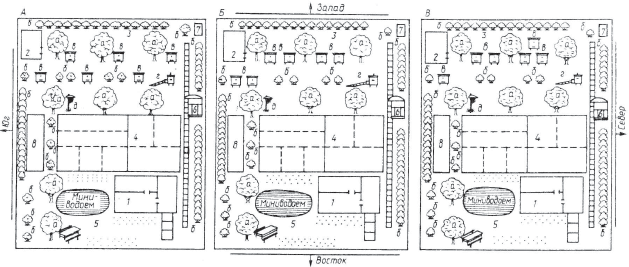Устройство пасеки на садово-огородном участке (схема размещения ульев с пчелами в трех вариантах: А – одиночное; Б – парное; В – смешанное): – садовый домик; 2 – сарай для хранения пчеловодного инвентаря и оборудования; пасека в саду (а – фруктовые деревья; б – ягодные кустарники; в – ульи с пчелами; г – поилка для пчел; д – привой роя пчел); 4 – грядки под овощи и клубнику; 5 – газон для отдыха с клумбами цветов и миниводоемом; 6 – беседка пчеловода; 7 – туалет; 8 – резервная площадка для размещения ульев с пчелами
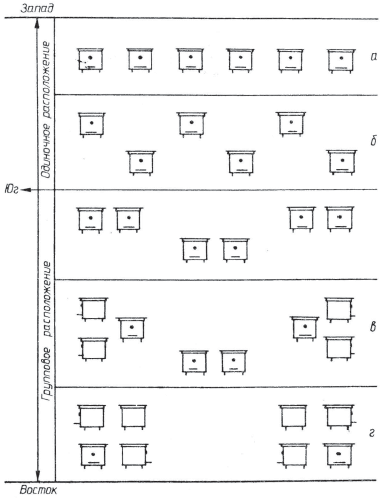Варианты расположения ульев на пасеке
МЕДОНОСЫ
Медоносные деревья и кустарники
Лещина обыкновенная
Широко распространенный на всей территории орехоплодный кустарник. Особенно хорошо растет и плодоносит на солнечных или слегка затененных лесных полянах, опушках, в разреженных лиственных и смешанных лесах, в кустарниках.
Цветет в апреле на протяжении 8—10 дней, когда в лесу еще лежит снег. Выделяет много богатой белком, углеводами, жирами и витаминами цветочной пыльцы, которую охотно собирают пчелы, пополняя в своих восковых гнездах недостающие белковые запасы.
Ива
В России насчитывается более десятка различных древесных и кустарниковых видов ивы. Растут по берегам рек, озер, каналов, на заливных лугах, болотах, у обочин дорог, в лесах и населенных пунктах.
Зацветает в апреле, выделяет много нектара и цветочной пыльцы, богатой протеином, жирами, витаминами, микроэлементами и ферментами. Взяток с ивы – незаменимый корм для пчел ранней весной, благодаря которому они быстро усиливаются после зимовки.
Черника
Многолетнее полукустарниковое растение из семейства брусничных. Распространена повсеместно в хвойных и смешанных лесах, где образует сплошные заросли. Цветет в конце мая – начале июня. В погожие теплые дни хорошо посещается пчелами и шмелями, собирающими нектар и пыльцу.
В благоприятные по климатическим условиям годы на хорошо подготовленных к медосбору пасеках может давать товарный мед. Нектаропродуктивность 1 га зарослей черники достигает 80 кг. Мед, полученный с черники, светлый с красноватым оттенком, приятный на вкус.
Черемухо
Многолетнее декоративное и медоносное растение семейства розоцветных. Распространена повсеместно, особенно на увлажненных и хорошо освещенных солнцем местах. Цветет в конце мая начале июня. В погожие дни дает пчелам хороший взяток нектара и пыльцы.
Колино
Многолетний кустарник семейства жимолостных. Распространена среди кустарников в широколиственных и еловых лесах по опушкам, вырубкам, полянам, берегам речек и озер. Цветет в конце мая начале июня, дает пчелам нектар и пыльцу. Нектаропродуктивность 1 га калины в переводе на сплошной массив составляет 18—20 кг.
Рябино
Невысокое медоносное дерево из семейства розоцветных. Широко распространена на всей территории России. Цветет в мае-июне, хорошо выделяет нектар и пыльцу в теплые солнечные дни.
Охотно посещается пчелами, другими видами насекомых для сбора нектара и пыльцы. Нектаропродуктивность 1 га насаждений составляет 30—40 кг. Мед имеет красноватый оттенок, крупнозернистый, ароматный.
Крушино ломкоя
Многолетний кустарник из семейства крушиновых. Растет на затененных, разреженных, сырых участках леса по заболоченным местам, среди кустарников вблизи речек и озер, образуя заросли. Хорошо посещается пчелами на протяжении всего светового дня.
Невзрачные беловато-зеленые цветки крушины, на которых виден нектар, обеспечивает пчелам во многих районах основной взяток. Медопродуктивность 1 га зарослей крушины составляет 30—35 кг.
Малина лесная
Многолетний кустарник семейства розоцветных – одно из ценнейших ягодных и медоносных растений. Распространена на лесных вырубках и гарях, встречается также по берегам речек и озер. Цветет в июне в течение 18—20 дней. Охотно посещается пчелами на протяжении всего светового дня и даже в моросящий дождь. С малины пчелы собирают одновременно нектар и пыльцу. По нектаропродуктивности малина уступает только гречихе и липе.
Мед с малины, как и сама ягода, исключительно полезен для здоровья человека, он душистый и приятный на вкус.
Иван-чай
Многолетнее растение из семейства кипрейных. Растет по опушкам лесов, на вырубках и гарях, среди кустарников, на пустырях, насыпях, выработанных карьерах, у обочин дорог, в канавах, местами образуя сплошные заросли. В высоту растение достигает полутора метров, листья очередные ланцетовидные. Крупные лилово-пурпуровые цветки собраны в длинные кисти, плод – коробочка.
Цветет в июне-августе. Хорошо посещается пчелами в теплую влажную погоду. Нектаропродуктивность 1 га сплошного травостоя иван-чая достигает 1200 кг и более, а в среднем составляет 350—600 кг. Мед, собранный пчелами с иван-чая, как и кипрейный, водянисто-прозрачный с зеленоватым оттенком, слабо выраженным ароматом, нежного вкуса, быстро кристаллизирующийся в салообразную массу.
Липа
Широко распространена на всей территории России. В лесах значительные запасы этой весьма ценной древесной и медоносной культуры сосредоточены там где местные пчеловоды в благоприятные для медосборов годы на взятке с липы получают высокие сборы первоклассного целебного меда.
Зацветает липа в первой декаде июля, иногда в конце июня. Цветение продолжается около двух недель. Обильно выделяет нектар в душную безветренную погоду. Пчелы охотно собирают с нее нектар и пыльцу.
Лучший медонос – липа мелколистная. Одно большое дерево при благоприятных климатических условиях может выделить столько нектара для пчел, сколько они могут собрать с 1 га гречихи.
Липовый мед светло-янтарного цвета, обладает тонким ароматом цветков, с которых он собран, приятен на вкус, ценится значительно выше других сортов.
Чобрец
Многолетний полукустарник семейства губоцветных. У него стелющийся по земле прутовидный, с многочисленными цветоносными веточками стебель.
Листья мелкие, овальные, цветки также мелкие, бледно-розовые, собраны на концах стеблей в прерывистую головку. Растение очень ароматное, лекарственное и как прекрасный медонос известно людям с давних времен.
Цветет чабрец во второй половине лета, постоянно привлекая к себе не только пчел, но и других насекомых. Широко распространен на открытой песчаной местности, в сухих сосновых лесах, на пустырях.
Вереск
Растение семейства вересковых. Распространен в хвойных лесах, на моховых болотах, где образует сплошные заросли. Цветет в августе-сентябре, хорошо посещается пчелами, выделяет до 200 кг нектара на 1 га массива. Вересковый мед темно-желтого цвета с красноватым оттенком, густой, тягучий и горьковатый на вкус. Отличается хорошими питательными свойствами.
Из-за чрезмерной плотности и повышенного процента содержания солей вересковый мед непригоден для зимовки пчел.
Медоносные травы
Медуница лекарственная
Многолетнее растение семейства бурачниковых. Растет в лиственных, смешанных и еловых лесах, на опушках, вырубках, нередко образуя заросли.
Цветет в апреле-мае. В букетике одного соцветия медуницы лекарственной можно увидеть различной окраски цветки: красные, фиолетовые, синие, которые хорошо посещаются медоносными пчелами, и особенно шмелями, даже в моросящий дождь. Ценится как ранний медонос. Медопродуктивность 1 га медуницы лекарственной в пересчете на сплошной травостой составляет от 30 до 80 кг и более
Перелеска благородная (пралеска)
Многолетнее травянистое растение из семейства лютиковых. Распространено преимущественно в лиственных и елово-лиственных лесах по лесным опушкам, просекам, полянам, среди кустарников и деревьев, образуя красочно расшитый лилово-синими, фиолетовыми, розовыми и белыми цветками ковер.
Перелеска ранний медонос. Зацветает в апреле, вскоре после цветения лещины. Выделяет для насекомых-сборщиц пыльцу и нектар.
Мать-и-мачеха
Растение семейства сложноцветных. С наступлением весны, когда в лесах и на полях еще лежит снег, на прогреваемых солнцем южных склонах оврагов, обочин дорог, берегов речек и на пустырях появляются золотисто-желтые цветки мать-и-мачехи. Цветение продолжается до появления на стеблях листьев. С 1 га медоноса в переводе на сплошное покрытие пчелы могут собрать до 30 кг нектара. Мать-и-мачеха ценна не только как ранний медонос и пыльценос, но и как лекарственное растение.
Одувончик лекорственный
Одно из самых распространенных на земле растений семейства сложноцветных. Его можно встретить на лугах, выгонах и пастбищах, у обочин дорог, на пустырях, по берегам речек и озер, в городских парках и скверах. Цветет с ранней весны и до глубокой осени, красочно раскрывая навстречу восходящему солнцу свои корзиночки с ярко-желтыми цветками в погожие дни и закрывая их пополудни в сырую и пасмурную погоду, защищая таким образом нектар и пыльцу от росы и дождя. Массовое цветение одуванчика приходится на конец мая – начало июня. В этот период растение особенно хорошо посещается насекомыми, собирающими легко доступный для них нектар и богатую белком сочную пыльцу. Одуванчик обеспечивает семьи пчел продолжительным поддерживающим взятком.
Черноголовко обыкновенноя
Растение семейства яснотковых. Обильно растет черноголовка на территории республики по кустарникам, берегам речек и озер, вдоль дорог, в лесах и на лугах. Цветет с июня по сентябрь. В этот период хорошо посещается пчелами-сборщицами нектара даже в засушливую погоду. Нектаропродуктивность 1 га сплошного покрова достигает 120 кг и более.
Восилек луговой
Синеглазый цветок семейства сложноцветных. Растет по лесным опушкам и полянам, на лугах и полях, вдоль дорог. Цветет с июля по сентябрь. Отличный медонос и пыльценос. Весьма охотно посещается пчелами. Нектаропродуктивность 1 га василька лугового достигает 200 кг. Васильковый мед приятного вкуса, густой, быстро кристаллизующийся.
Белый клевер (конюшина)
Многолетнее, ползучее по земле растение семейства бобовых. Хорошо произрастает на увлажненной почве – лугах, выгонах, пастбищах, вдоль дорог и возле дворов. Медопродуктивность сильно колеблется, но при благоприятных климатических условиях может достигать 100 кг нектара на 1 га. Мед с белого клевера прозрачный, почти бесцветный, ароматный и приятный на вкус.
Растение может жить на одном месте 8—10 лет.
Лядвенец рогатый
Распространен повсеместно на лугах, пастбищах, лесных полянах, по обочинам дорог, в оврагах, чаще в смеси с другими травами, заполняя их нижний ярус. Растение способно быстро отрастать после стравливания скотом или скашивания, хорошо переносит засуху. Цветет долго – с середины мая по сентябрь и обеспечивает сборщиц продолжительным поддерживающим взятком. Цветки у него золотисто-желтые, собраны в зонтиковидные соцветия, охотно посещаются пчелами, собирающими нектар и пыльцу.
Норичник шишковидный
Многолетнее растение из семейства норичниковых. Растет на сырых лугах, по берегам речек и искусственных водоемов, в лесах по тенистым местам, среди кустарников. Стебель у норичника голый, прямой, высокий. Листья заостренные, зубчатые, супротивные. Цветки красно-бурые, собраны в продолговатую метелку, выделяют много нектара. Цветет норичник с июня по сентябрь. Хорошо посещается пчелами на протяжении всего периода цветения. Нектаропродуктивность 1 га норичника в пересчете на сплошное покрытие при благоприятных климатических условиях может достигать 1200—1300 кг и более.
Гравилат речной. Многолетнее медоносное растение семейства розоцветных. Стебель невысокий – 30—60 см, покрыт мягкими волосками. Листья очередные лировидно-перистые, цветки бледно-желтые, колокольчатой формы, расположены по 2—3 на конце стебля.
Растет по сырым лесам, кустарникам, лугам, берегам рек и озер. Цветет в мае-июне. Медопродуктивность высокая – до 255 кг на 1 га сплошного травостоя. Хорошо посещается пчелами.
Мято
Многолетнее приятно пахнущее медоносное растение из семейства яснотковых. Растет мята на заливных лугах, закустаренных болотах, по сырым тенистым местам в лесах, по берегам речек и ручьев. Цветет в июне– сентябре. Цветки у мяты бледно-лиловые, сконцентрированы на верхушках стеблей. Хорошо посещаются пчелами и другими видами насекомых, собирающими нектар и пыльцу. Нектаропродуктивность 1 га мяты сплошного произрастания составляет 200 кг и более. Мед янтарный, ароматный и приятный на вкус.
Очиток едкий
Многолетнее ядовитое растение семейства толстянковых. Растет на сухих песчаных почвах по открытым склонам холмов, берегам речек и каналов, суходольным лугам. Листья у очитка едкого мелкие, мясистые, сидячие. Цветки золотисто-желтые в виде пятиконечных звездочек собраны в кисти на концах лежащих стеблей.
Цветет очиток с конца мая по август. Пчелы охотно посещают цветки этого растения, собирая нектар и пыльцу даже в жаркую сухую погоду.
Кульбобо осенняя
Многолетнее травянистое растение семейства сложноцветных. Широко распространена по лугам и пастбищам, среди кустарников, в садах, по берегам речек и озер. Цветет она с июля по сентябрь.
На протяжении всего периода цветения хорошо посещается медоносными пчелами и другими видами насекомых, которые собирают нектар и пыльцу. Медопродуктивность кульбабы осенней достигает 80—95 кг с 1 га сплошного травостоя. Мед, полученный с кульбабы, желтого цвета, густой и приятный на вкус.
Сельскохозяйственные медоносные культуры
Гречиха
Ценнейшая крупяная и медоносная сельскохозяйственная культура. Во многих хозяйствах эффективно возделывается вблизи лесных массивов на хорошо удобренных супесчаных почвах. Зацветает гречиха через 30—45 дней после посева. В период массового цветения, которое продолжается в течение месяца, наиболее обильное выделение нектара наблюдается в теплую, влажную и безветренную погоду. В дневную жару, во время ночных похолоданий и утренних туманов выделение нектара у гречихи прекращается. Нектаропродуктивность 1 га гречихи в среднем составляет 60—100 кг. Высокоурожайные сорта «Богатырь», «Тереховская», «Юбилейная», при благоприятных климатических условиях могут выделять до 300 кг нектара с 1 га.
Клевер красный
Многолетняя энтомофильная сельскохозяйственная культура семейства бобовых. Возделывается на значительных площадях в хозяйствах, специализированных на семеноводстве многолетних кормовых трав. Нектаропродуктивность красного клевера достигает 250 кг на 1 га, но в связи с тем, что головки красного клевера имеют длинные трубочки цветков, в которых накапливается нектар, доступного для пчел взятка бывает мало – до 10 кг с 1 га в первом укосе и 20—30 кг во втором. Привлечь пчел-сборщиц на клеверное поле с целью увеличения его урожайности можно с помощью дрессировки. Для этого по утрам семьи пчел подкармливают небольшими дозами (200—250 г на улей) сладкого настоя соцветий красного клевера, активность вылета пчел-сборщиц на поиски нектара и пыльцы с этой культуры резко возрастает. Для большей результативности пасеку размещают поблизости от цветущего массива из расчета 3—4 улья на 1 га. Семьи пчел подбирают сильные, с большим количеством рабочих особей, разновозрастного расплода и молодыми плодными матками.
Клевер гибридный (розовый)
Весьма ценная кормовая и медоносная сельскохозяйственная культура. От других клеверов отличается не только розовой окраской цветущих головок, но и самой высокой их нектаропродуктивностью – 100—120 кг с 1 га, большей продолжительностью цветения. Благодаря укороченным трубочкам венчиков цветков, в которых обильно накапливается нектар, легко доступный насекомым, клевер гибридный хорошо посещается пчелами.
Ропс
Масличное растение семейства крестоцветных. На полях разводится преимущественно как высокоурожайная кормовая сельскохозяйственная культура. Озимый рапс начинает цветение в мае и является во многих районах одним из основных источников взятка для сборщиц нектара и пыльцы, на котором очень хорошо идет развитие пчелиных семей. Яровой рапс зацветает в августе. Цветение продолжается 25—35 дней – до конца сентября. При благоприятных климатических условиях рапс хорошо посещается медоносными пчелами, а также многими другими видами насекомых, энергично собирающими нектар и пыльцу. Для пасек наличие такого осеннего рапсового взятка, а он иногда может достигать 3—4 кг на семью в день, имеет огромное значение. Пчелиные семьи наращивают к зимовке большое количество молодых пчел, пополняют в ульях кормовые запасы. При этом пчеловоду, однако, не следует забывать, что мед с рапса, как и с других растений семейства крестоцветных, при длительном хранении, в том числе и в сотах, легко кристаллизуется, закисает, поэтому в качестве зимнего корма для пчел он непригоден. Его нужно отбирать из пчелиного гнезда.
Горчица белая
Однолетняя масличная культура семейства крестоцветных. Возделывается для получения семян и на зеленый корм скоту.
Стебель у растения высокий, бороздчатый, ветвистый. Листья черешковые, лировидно-перисто-рассеченные, как и стебель, покрыты жесткими защитными волосками. Цветки желтые, с темно-зелеными нектарниками при основании. Цветет горчица в июне—июле на протяжении 20—25 дней, хорошо посещается пчелами в утренние часы. Нектаропродуктивность культуры при сплошном посеве достигает 80 кг и более с 1 га. Растение неприхотливо к почвенным и климатическим условиям, поэтому на территории Белоруссии может возделываться повсеместно.
Для нужд пчеловодства посевы горчицы вблизи пасек могут производиться в различные сроки, что позволяет удлинять цветение медоноса и обеспечивать пчел продолжительным взятком. Мед имеет бледно-желтый цвет, пикантный вкус и прекрасный аромат. Легко кристаллизуется, поэтому непригоден в качестве зимнего корма для пчел.
Сераделла
Однолетняя кормовая и медоносная сельскохозяйственная культура семейства бобовых. Цветет с июня по сентябрь. Дает пчелам хороший продолжительный взяток (до 40 кг с 1 га). В хозяйствах успешно возделывается на супесчаных и песчаных почвах. Особый интерес для пчеловодства сераделла представляет при семенных посевах.
Сопутствующие сельскохозяйственным культурам медоносные травы
Восилек полевой
Однолетнее травянистое растение семейства сложноцветных. На территории России распространен повсеместно. Встречается на полях среди посевов зерновых и зернобобовых сельскохозяйственных культур, чаще среди озимой ржи и люпина, а также на паровых полях, реже – среди пропашных культур. Соцветие василька полевого – изящная корзиночка ярко-голубой окраски. Цветет этот медонос в июле—августе и хорошо посещается сборщицами нектара и пыльцы даже в засушливую погоду. Выделяет в среднем 40—60 кг нектара с 1 га в переводе на сплошное покрытие. Васильковый мед имеет зеленоватый оттенок, густой, душистый, признан одним из лучших среди медов, полученных в полевых условиях.
Сурепицо обыкновенноя
Двулетнее травянистое сорное растение семейства крестоцветных. Превосходный медонос. Растет на полях в посевах и на парах, в лесопосадках, по берегам водоемов, обочинам дорог, выработанным песчаным карьерам, в оврагах и на пустырях. Цветки у сурепицы золотисто-желтые, собраны в сжатые кисти. Выделяют много нектара и пыльцы. Цветет в мае—июне. На пожнивных посевах в августе – сентябре. Медопродуктивность 1 га сплошного травостоя достигает 150—180 кг. Мед с сурепицы легко кристаллизируется при хранении и непригоден для зимнего запаса пчел.
Редько дикоя
Однолетнее медоносное растение семейства крестоцветных. Редька дикая нетребовательна к почвенно-климатическим условиям и распространена на территории республики повсеместно. Цветки у нее желтые, крупные, а созревшие из них стручки содержат красноватые семена, подобные семенам обыкновенной редьки. Отличается от сурепицы жестковолосыми листьями. Цветет на протяжении всего лета. Лучше посещается пчелами в утренние часы и в пасмурную погоду. Нектаропродуктивность 1 га дикой редьки в переводе на сплошной травостой составляет 90 кг. Мед легко закристаллизовывается в сотах, поэтому в качестве зимнего кормового запаса для пчел не пригоден.
Осот полевой
Многолетнее медоносное растение семейства сложноцветных.
Стебель высокий – 50—100 см, листья с комочками на зазубринах, цветки в виде ярко-желтых корзинок собраны на верхушке стебля в ветвистый щиток. Цветет с июля до заморозков. Растет на паровой пашне, разработанных под лесокультуры участках, на сорных местах, у обочин проселочных дорог, в канавах. Охотно посещается пчелами на протяжении всего периода цветения. Нектаропродуктивность высокая – до 400 кг с 1 га.
Бодяк
Широко распространенное на всей территории России сорное растение из семейства сложноцветных. Чаще встречается на пустырях, пастбищах, у дорог, по сорным местам, на вырубленных лесных полянах, реже в посевах сельскохозяйственных культур.
Период цветения – июнь—август. Бодяк – отличный медонос, на красивых соцветиях которого почти всегда можно увидеть старательно копошащихся сборщиц-пчел. Нектаропродуктивность 1 га в переводе на сплошной травостой достигает 180 кг.
Пустырник
Многолетнее травянистое растение семейства губоцветных. Встречается на обочинах дорог, возле жилья, у канав, на пустошах, образуя сплошные заросли. Стебель у пустырника четырехгранный, полый, бледно-фиолетовые цветки собраны в гроздья. Цветет в июне– сентябре, обеспечивая пчел устойчивым взятком.
Имеет приятный душистый запах, активно посещается пчелами и шмелями утром и вечером. Один цветок пустырника может выделить до 1 мг нектара. С 1 га растений в переводе на сплошное покрытие пчелы могут собрать при благоприятных условиях до 300 кг нектара.
Мед светлый, ароматный, приятный на вкус и, конечно же, лечебный.
Медоносные растения, выращиваемые на садово-огородных участках
На садово-огородных участках растет много различных сортов яблонь, груш, слив, вишен, крыжовника, смородины, садовой малины, клубники, а также овощных культур, с которых пчелы и другие полезные насекомые собирают нектар и пыльцу.
Яблоня
Широко распространена на всей территории России. Цветет в мае – начале июня. Хорошо посещается пчелами и шмелями. Медопродуктивность яблоневого сада в переводе на сплошное покрытие в среднем около 20 кг с 1 га.
Грушо
Цветет в мае. Дает пчелам нектар и пыльцу. Медопродуктивность невысокая – 8—10 кг с 1 га сплошного покрытия.
Сливо
Цветет в мае на протяжении 8—10 дней. В погожие дни дает пчелам хороший взяток нектара и пыльцы. Медопродуктивность сливы 30—40 кг и более с 1 га.
Вишня
На территории России распространена повсеместно. Цветет в первой половине мая. Хорошо посещается пчелами. Медопродуктивность вишни, в зависимости от погодных условий, от 7 до 30 кг с 1 га.
Малина садовая
Цветет в июне на протяжении 20—30 дней. Очень активно посещается домашними пчелами и другими насекомыми. Медопродуктивность 1 га садовой малины в переводе на сплошное покрытие достигает 200 кг.
Смородина черная
Зацветает в первой декаде мая. Продолжительность цветения 10—15 дней.
Хорошо посещается пчелами. Медопродуктивность
1 га – 40—50 кг.
Огурцы посевные
Одна из самых широко распространенных насе-комоопыляемых огородных культур. Цветки у огурца ярко-желтые, однополые. Материнские одиночные расположены преимущественно на ответвлениях, дают плоды.
Отцовские, наоборот, собраны пучками в пазухах листьев, производят пыльцу, необходимую для оплодотворения женских цветков.
Медопродуктивность культуры на открытом грунте – около 30 кг с 1 га; в теплице – в два раза меньше – 13—15 кг. Цветение огурцов продолжается на протяжении всего лета. Тыква, семенники моркови, лука, а также различного рода пряности, выращиваемые в огородах и на садовых участках, цветение которых также приходится на летний период, дают пчелам в основном поддерживающий взяток нектара и пыльцы, который они используют главным образом для развития своих семей.
Специальные медоносные растения, высеваемые на припасенных делянках
Огуречноя трово
Однолетнее растение семейства бурачниковых. Цветет с июня до самой осени, обильно выделяя нектар, особенно в теплую и влажную погоду. Нектаропродуктивность 1 га огуречника на хорошо удобренной плодородной почве может достигать 750—800 кг и более. Нектар у огуречной травы густой, прозрачный, без запаха, тогда как все растение, наоборот, обладает острым и приятным запахом свежих огурцов, благодаря которому и получило такое не совсем обычное для него название.
Мордовник
Неприхотливое многолетнее растение семейства сложноцветных. Достигает в высоту полутора метров. Цветки мелкие, голубовато-белой окраски, собраны в шарообразные соцветия. Цветет в июне—августе, обильно выделяя бесцветный с приятным запахом нектар. Мордовник замечательный засухоустойчивый медонос, хорошо посещаемый пчелами. Во время цветения растения на его шаровидных красивых головках даже поздно вечером нетрудно увидеть по нескольку пчел-сборщиц. Нектаропродуктивность 1 га мордовника при сплошном травостое достигает 800—1000 кг.
Фацелия
Самое популярное среди медоносов растение семейства водолистниковых. Королевой медоносов называют это растение знающие ему цену пчеловоды. Фацелия на хорошо удобренных почвах выделяет до 400 кг нектара с 1 га. Высевают фацелию в весенне-летний период, благодаря этому и создается для сборщиц нектара непрерывный источник взятка на протяжении всего сезона. Работникам сельского хозяйства и пчеловодам следует учесть, что фацелия не только замечательная медоносная, но и отличная кормовая культура. Зацветает фацелия через 35—40 дней после посева. Мед, полученный с фацелии, светло-зеленого цвета, приятный на вкус.
Мелисса (лимонная мята)
Многолетняя медоносная культура семейства губоцветных. Стебель у мелиссы ветвистый, высокий. Листья черешковые, зубчатые, супротивные. Цветки мелкие, белые, расположены в пазухах листьев, выделяют много нектара – до 200 кг с 1 га растений в пересчете на сплошное покрытие.
Цветет мелисса в июле—августе, хорошо посещается пчелами. Все растение обладает сильным лимонным запахом, привлекающим пчел. Используя это замечательное свойство растения, пчеловоды натирают его листьями и стеблями новые ульи, маточные клеточки, прежде чем поселить в них пчел, а также роевни и специально устроенные привои для привлечения роевых пчел, чтобы можно было удобно снять рой и затем переселить его в улей.
Полезно натереть мелиссой и чисто вымытые руки перед осмотром пчелиных семей, особенно начинающему пчеловоду, чтобы пчелы меньше жалились. Сеют мелиссу ранней весной на хорошо удобренных рыхлых почвах вблизи пасек и возле ульев. Мелиссовый мед не только ароматный, вкусный, но и целебный.
Котовник
Многолетнее медоносное растение семейства губоцветных. Стебель высокий – 50—100 см, прямостоячий, у основания разветвленный, покрыт мягкими волосками.
Листья треугольно-сердцевидные на длинных черешках, внизу покрыты серым войлоком. Цветки светло-розовые, с пурпурными точечками, мелкие, собраны в густые колосообразные соцветия. Цветет в июне-сентябре. Охотно посещается пчелами даже в засуху. Мед, полученный с котовника, янтарного цвета, ароматный, приятный на вкус.
Синяк (румянка)
Двулетнее засухоустойчивое медоносное растение семейства бурачниковых. Растет по сухим склонам, у дорог, на пустырях, на паровых полях, возле посевов. Стебель у синяка разветвленный – 30—80 см высотой, листья линейно-ланцетовидные, покрыты жесткими щетинистыми волосками.
Цветки ярко-синие, в бутонах розовые, расположены завитками, образуя крупные метельчатые соцветия. Цветет синяк в июле-августе, хорошо посещается пчелами даже в жару. Нектаропродуктивность высокая – 300—500 кг с 1 га. Как отличное медоносное растение синяк рекомендуют высевать для пчел в смеси с многолетними кормовыми травами, после скашивания вторых он вновь отрастает и зацветает, обеспечивая пчел взятком.
Лонник белый
Двулетнее травянистое растение семейства бобовых. Распространен на территории России повсеместно, преимущественно по сорным местам, пустырям, вблизи полей и дорог, на холмах и в оврагах, во дворах, на бесплодных некислых песчаных, суглинистых и каменистых почвах. Стебель у белого донника гладкий, ветвистый, достигающий в высоту полуметра и более. Листья сложные, состоящие из трех продолговатых листочков. Цветки белые, мелкие, как у клевера, собраны в длинные колосовидные кисти, издающие приятный запах ванили. Цветет с июля до заморозков, обильно выделяя нектар для насекомых, особенно при частых и теплых дождях. Хорошо посещается пчелами на протяжении всего светового дня. Нектаропродуктивность высокая – до 500 кг с 1 га. Мед, собранный с белого донника, почти бесцветный, ароматный, приятный на вкус.
ДЕЛАЕМ УЛЕЙ САМИ
Итак, вы решили обзавестись пчелами. С какого улья начать? Для опытного пчеловода конструкция улья не имеет большого значения, важно чтобы он был прочен, легок, просторен и удобен в работе. Начинающему пчеловоду, на мой взгляд, лучше всего начать с улья-лежака (см. на рисунке) на 20—24 рамки. Он прост в устройстве, имеет большой объем, позволяющий при необходимости разделить корпус на две части глухой фанерной перегородкой и содержать в нем не одну, а две спаренные семьи пчел основную и вспомогательную, сформировать к зимовке отводок с запасной маткой, ограничить деятельность матки на период основного медосбора, подготовить пчелиную семью к перевозке, не применяя кочевой сетки, изолировать в нем пчел в период обработки растений химическими препаратами или же объединить две семьи в одну, вынув из улья разделяющую их глухую перегородку, предварительно отобрав ненужную матку.
Для ухода за пчелами достаточно открыть крышку улья, убрать с пчелиного гнезда утепляющую подушку и приступить к осмотру семьи, отодвигая в сторону рамки, вынимая или подставляя в улей новые соты. Единственный недостаток улья-лежака – его громоздкость и тяжесть в кочевке, когда приходится погружать и перевозить ульи с пчелами на медосбор. Однако и здесь есть выход. Современная технология позволяет пчеловодам изготавливать ульи из легкого синтетического материала, безвредного для пчел и не уступающего по прочности дереву. Достаточно прочные и нетяжелые ульи получаются также из листовой фанеры, для их утепления применяют полистирол. И все же лучшим материалом для изготовления ульев является дерево, особенно ситовое (усохшее на корню) – липа, пихта, ель, сосна. Улей должен надежно защищать пчел от холода, сырости и ветров в зимнее время года, от жары летом, иметь достаточный объем для складывания нектара и размножения, быть удобным в работе при обслуживании пчелиных семей, прочным при перевозках пчел в кочевку на медосбор Несложные в устройстве, достаточно просторные и к тому же теплоемкие ульи-лежаки позволяют в относительно короткое весенне-летнее время наращивать к медосбору. сильные семьи пчел и получать от них большое количество товарного меда.
Улей-лежак состоит из корпуса на 20—24 стандартные гнездовые рамки, магазинной надставки на 18—20 полурамок, несъемного дна и плоской крыши. Корпус (внутренние размеры 20-рамочного улья-лежака 810 х 450 х 400 мм) изготавливается из досок толщиной 40 мм, по горизонтали соединяющихся в шпунт, а по углам – в четверть. Дно улья собирается из четырех досок толщиной 40 мм, соединенных на рейках и скрепленных снизу планками. Потолок разборный, состоит из 7 досок толщиной 15 мм, которые укладываются впритеску. Прилетная часть улья состоит из опорного бруса, двух задвижек, направляющей планки и прилетной доски. Летки устраиваются в виде двух узких щелей длиной 200 мм и 120 мм, высотой 10 мм. В крыше дополнительно к леткам устраиваются два вентиляционных отверстия, которые закрываются сеткой с ячейками размером 3 х 3 мм.
Двушорпусный улей (см. на рисунке) состоит из двух одинаковых (внутренний размер 450 х 450 х 310 мм) корпусов. Крыша плоская, дно съемное. Каждый корпус вмещает 12 стандартных гнездовых рамок. Изготовляется из досок толщиной 40 мм. В передней части каждого корпуса устраиваются летки – нижний широкий и верхний круглый диаметром 25 мм, крыша изготавливается из досок толщиной 15 мм, в передней и задней стенках крыши оборудуются вентиляционные отверстия, затянутые металлической сеткой.
Содержание пчелиных семей в таких ульях позволяет не только предупреждать роение, создавать сильные семьи пчел к основному медосбору, но и успешно бороться с варроатозом с помощью разделяющих корпуса перегородок. Технология двухкорпусного содержания пчелиных семей несложна. В мае, когда семья достигнет хорошего развития и будет занимать полностью один корпус, к ней подносят заранее подготовленный второй такой же корпус, в который из пчелиного гнезда переставляют одну рамку открытого и две рамки печатного расплода вместе с находящимися на них пчелами-кормилицами.
Гнездо для пчел формируют с южной стороны корпуса. Вначале ставят к стенке сот с пергой и медом, взятый из запаса, затем рамку с искусственной вощиной, рядом с ней сот с открытым расплодом, затем два сота печатного расплода и снова кроющую рамку с кормом. Сформированное таким образом гнездо для пчел в верхнем корпусе ограничивают диафрагмой и накрывают холстиком. В первом основном корпусе все оставшиеся сотовые рамки сдвигают к южной стороне, само гнездо ограничивают диафрагмой, после чего на семью сверху ставят второй корпус. Все свободное пространство, оставшееся с боков в нижнем и верхнем корпусах после формирования пчелиного гнезда, укрывают утеплительными матами или подушками, а улей закрывают крышкой. Следующий осмотр пчелиной семьи производится через 8-10 дней, и если гнездо к этому времени будет полностью занято пчелами, его снова расширяют. Для этого из верхнего корпуса в нижний переставляют три рамки открытого расплода, после чего он будет полностью укомплектован, вместо них в верхний корпус дают три рамки искусственной вощины.
По мере роста пчелиной семьи верхний корпус также доводят до полного комплекта. В зависимости от обстоятельств второй корпус можно поставить на пчелиную семью и без пере носа в него расплода пчел. В таком случае его укомплектовывают маломедными сотами, чередуя их с рамками искусственной вощины. Таким образом создаются благоприятные условия для скорейшего перехода в верхнюю часть гнезда пчел-кормилиц и яйцекладущей матки. При двухкорпусном содержании пчелиные семьи к концу мая должны занимать полностью корпус и иметь 8—10 рамок расплода. Задержка с постановкой вторых корпусов на такие семьи пчел может привести их в роевое состояние. Когда же верхний корпус будет полностью занят печатным расплодом и пчелами, а главный медосбор к этому времени еще не наступил, необходимо поменять корпуса местами. Перед началом основного взятка все рамки с открытым расплодом должны находиться в нижнем корпусе, а с печатным – в верхнем, тогда пчелы по мере освобождения от расплода верхнего корпуса будут всячески стремиться заполнить его медом.
Двухкорпусное содержание пчелиных семей дает хорошие результаты особенно в тех местностях, где отмечается продолжительный поддерживающий взяток для них, позволяющий нарастить к основному медосбору как минимум два полных корпуса пчел. Чтобы рабочие пчелы могли принять участие в главном медосборе хотя бы неделю, необходимо, чтобы матка отложила яйца, из которых они выведутся за 50—56 дней до начала такого медосбора и за 29 дней до его окончания. Следует иметь в виду, что при слабом взятке, когда основная масса рабочих пчел бездействует, в сильных семьях возникает роевое настроение. В таком случае пчеловоду целесообразно изолировать матку со зрелым расплодом и молодыми пчелами в верхнем корпусе, подложив под него фанерное дно или целлофановую пленку. В нижнем корпусе семье оставляют один маточник. После выхода и оплодотворения молодой матки пчел снова объединяют в одну семью, оставив ей молодую матку. В целях наращивания пчел к главному медосбору, а также удержания их в нероевом состоянии вторые корпуса можно использовать и для формирования в них новых семей с матками весеннего вывода. Такие семьи пчел (отводки) полезно формировать за 45—50 дней до начала цветения основных медоносных растений главного взятка – гречихи, липы или семенников клевера. Двухкорпусное содержание пчелиных семей трудоемко, поскольку пчеловоду приходится периодически переставлять тяжелые корпуса, чтобы расширить или осмотреть пчелиную семью.
Многокорпусный улей. Состоит из нескольких одинаковых по размеру взаимозаменяемых корпусов, вмещающих по 10 стандартных рамок каждый. Он очень схож с жилищем пчел, обитающих в естественных условиях в дуплах деревьев, в которых пчелы лучше развиваются. Главное преимущество многокорпусного улья в том, что при его обслуживании пчеловод манипулирует не отдельными рамками, а корпусами.
Изготавливают ульи из сухих досок хвойных (кроме лиственницы) и мягких пород.
Внутренние размеры одного корпуса улья, вмещающего 10 гнездовых рамок размером 435 х 230 мм, 375 х 450 х 240 мм. Толщина стенок 30—35 мм, они соединяются в четверть. В передней и задней стенках (с внутренней стороны у верхних кромок) выбираются фальцы для плечиков рамок шириной 11 мм и глубиной 17 мм. Зазор, образующийся над брусками рамок, позволяет легко надвигать на улей каждый новый корпус, не раздавливая пчел.
В передних стенках корпусов посередине просверливается леток диаметром 25 мм с наклоном вверх, чтобы в дождь вода не затекала в него. Нижний леток устраивается на всю длину передней стенки улья. Его размер регулируется специальной летковой задвижкой или вкладышем.
Дно съемное, оборачивающееся, что позволяет изменять подрамочное пространство от 10 до 20 мм соответственно на летний или зимний период содержания пчелиных семей. Потолок у улья сплошной, сбивается из досок толщиной 15 мм. Крыша плоская, покрыта железом, надевается на улей в нахлобучку. Чтобы корпуса улья во время кочевки не разъединились, применяют специальные скрепы из металлических лент или замки.
В комплект многокорпусного улья, кроме рамок, входит кочевая сетка, кормушка, две диафрагмы, прилетные дощечки, подставка под улей.
Подготовив заблаговременно корпуса, пчеловод может в любое время приступить к расширению пчелиных гнезд. Причем все это делается в один прием.
Постановка вторых корпусов, как и при двухкорпусном содержании семей пчел, производится не раньше, чем пчелиные семьи смогут полностью освоить первый корпус. Позднее, когда верхний ярус рамок во втором корпусе также будет полностью занят расплодом и пчелами, необходимо поменять корпуса местами. Занятый расплодом верхний корпус поставить вниз, нижний – вверх. Таким образом, в верхней части пчелиного гнезда снова окажется большое количество свободных ячеек, в которые матка будет продолжать откладывать яйца. Третий корпус, укомплектованный недостроенными сотами в прошлом сезоне, а также маломедными рамками или искусственной вощиной (варианты могут быть различными и зависят от сезона и условий взятка для пчел), ставят на семью после того, как пчелы освоят полностью два корпуса – верхний и нижний. При этом верхний корпус, занятый расплодом, перемещают вниз, на него ставят подготовленный третий по счету, корпус и сверху бывший нижний с печатным расплодом. Примерно через две недели корпуса меняют так, чтобы сверху снова оказался корпус, занятый печатным расплодом.
При хорошем взятке на третий медовый корпус можно ставить и четвертый, укомплектованный готовыми сотами, что, естественно, помешает матке перейти работать в самую верхнюю часть гнезда (рис. 6). Для этих целей можно отделить матку в нижнем корпусе с помощью разделительной ганемановской решетки. Через 10—15 дней после такой перегруппировки верхний корпус будет также заполнен медом. Мед главного взятка при отборе его из одного корпуса не выкачивают, а оставляют пчелам в качестве кормового запаса.
При сборке пчелиных гнезд в зимовку этот медовый корпус ставят сверху на семью, а нижний свободный убирают на склад. При необходимости верхний корпус можно укомплектовать и маломедными рамками для подкормки пчелиной семьи сахарным сиропом. Для зимовки пчел весь верхний корпус должен быть заполнен полномедными и запечатанными рамками. В рамках нижнего корпуса на зиму оставляют по 0,5—1,0 кг корма в каждом соте. Здесь же в пустых ячейках воскового гнезда будет сформирован зимний клуб пчел. Для обеспечения хорошей зимовки пчелиных семей и их нормального развития весной следующего года, независимо от состояния погоды, необходимо оставлять по 22—25 кг доброкачественных запасов корма (мед, перга) на каждую основную семью.
Содержание семей пчел в многокорпусных ульях будет эффективным при условии наращивания 4—5 корпусов рабочих пчел к главному медосбору.
В многокорпусных ульях пчелы меньше роятся, так как больше заняты выращиванием расплода, отстройкой сотов и сбором меда. Взаимозаменяемость корпусов и наличие одинакового размера рамок позволяет пчеловодам применять разнообразные приемы пчеловождения, упрощает работы на пасеке.
16-рамочный улей. Наиболее популярен среди пчеловодов 16-рамочный двухстенный улей, отмеченный на Международном конгрессе по пчеловодству в Москве бронзовой медалью. Удобный в кочевке, достаточно объемный, теплоемкий, и лучше других приспособлен к местным климатическим условиям для медосбора, обеспечивает зимовку пчел на открытом воздухе без дополнительного утепления снаружи. Именно такие ульи используются на промышленных пасеках республики. Применительно к этому улью выработаны и приемы ухода, позволяющие пчеловодам успешно проводить зимовку и в относительно короткий срок после нее наращивать сильные семьи пчел к использованию промежуточного или основного взятка. Двухстенный 16-рамочный улей изготавливается из досок толщиной 25 мм – срединная гнездовая часть и толщиной 15 мм – наружная. Пространство между двойными стенками корпуса улья заполняется сухим утеплительным материалом (мох, костра, пакля). Дно собирается из 5 фрезерованных досок толщиной 40 мм, соединенных снизу опорами толщиной 20 мм, и крепится к корпусу гвоздями. В передней стенке корпуса устраиваются летки: нижний, большой, размером 10 х 130 мм, и верхний меньший размером 10 х 70 мм. Потолок разборный, состоит из досок толщиной 15 мм, уложенных впритеску. Крыша плоская, выполняется из досок толщиной 25 мм, рама из досок толщиной 19 мм, верх собирается на раме на гладкую фугу общей шириной 750 мм, обивается жестью или толем. В крыше, дополнительно клетками, устраивают два вентиляционных отверстия диаметром 25 мм, изнутри закрывающиеся металлической сеткой с ячейками 3 х 3 мм.
В комплект улья кроме стандартных рамок 435 х 300 мм входят: магазинная надставка с комплектом полурамок, кочевая сетка, сетчатый поддон, кормушка и одна диафрагма.
В зависимости от назначения существует много других конструкций рамочных ульев – от самых маленьких, легко вмещающихся в саквояж, до многоместных, в которых живут и размножаются пчелы. Познав некоторые тонкости биологии пчелиной семьи, вы сами сможете изготовить улей собственной конструкции.
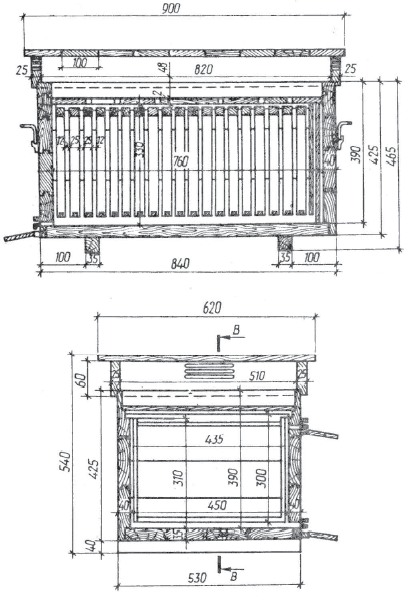Устройство улья-лежака на 20 рамок: а – продольньш разрез; б – поперечньш разрез
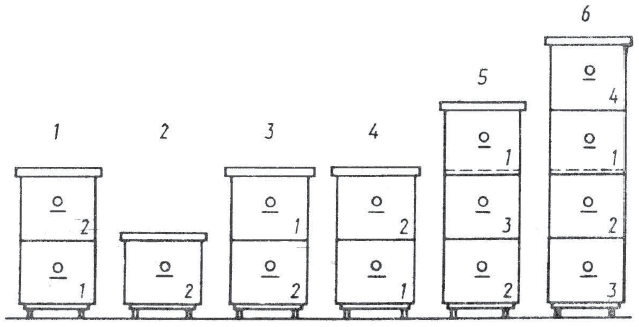Примерная схема перемещения корпусов при многокорпусном содержании пчел: 1– в конце осени и зимой; 2 – после зимовки в марте и апреле; 3 – в середине мая; 4 – в первой половине июня; 5 – во второй половине июня – начале июля; 6 – в период основного медосбора
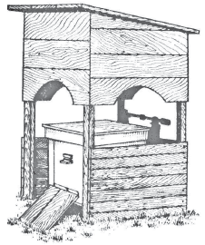Контрольный улей под навесом
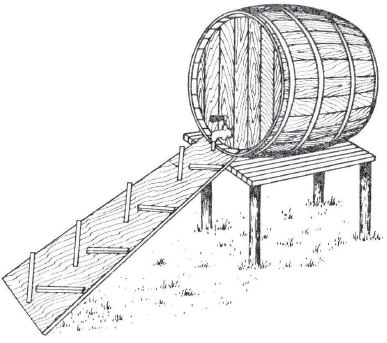Поилка для пчел (общая)
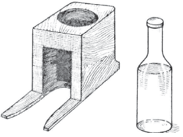Поилка для пчел (индивидуальная)

Солнечная воскотопка

Универсальная паровая воскотопка на 20 сотов

Медогонка

Тележка пасечная

Лицевая сетка

Дымарь

Стамеска пасечная

Переносной ящик с крышкой

Роевня

Заградитель летковый

Нож для подрезания сотов в сапетках

Нож для распечатывания сотов

Каток
комбинированный со шпорой

Маточная клеточка

Маточный колпачок

Часть разделительной решетки
РАЗМЕЩЕНИЕ УЛЬЕВ И УХОД ЗА ПЧЕЛАМИ
Следующий вопрос, который необходимо решить владельцу пчел, – это размещение ульев с пчелами на территории своего земельного участка: в палисаднике, в саду, на огороде или во дворе, на чердаке сарая или дома, в специальном павильоне. Чтобы пчелы по возможности не причиняли беспокойства соседям, следует так разместить ульи, чтобы воздушные пути, по которым пчелы отправляются за взятком и возвращаются в свой улей, не пролегали там, где чаще всего находятся люди или животные. Для этого пасеку обсаживают декоративными кустарниками и фруктовыми деревьями. Если же их нет, сад еще молод, участок можно обнести искусственной изгородью двухметровой высоты, сделать плетеный или дощатый забор, натянуть густую капроновую или металлическую сетку, принудив пчел летать на заданной высоте. Пчелы быстро приспосабливаются к сложившейся обстановке.
Устанавливают ульи на подставки или колышки высотой 25—30 см от поверхности земли в сухих местах, а на увлажненной почве – выше 50—60 см с небольшим (2—3°) наклоном в сторону летков. Это облегчает насекомым уборку в своем жилище, предотвращает затекание в улей воды через леток во время дождя. Недопустимо перекашивание ульев, так как это приводит к неправильной отстройке сотов в пчелиных гнездах. Рамки в улье должны висеть строго вертикально. Чтобы по утрам сборщицы нектара раньше включались в работу, домики располагают летками на восток (приоритетное направление). Если такой возможности нет, расположить их можно и в любом другом направлении (см. рис.). Пчелы хорошо запоминают местоположение летков и быстро находят наиболее удобные пути к своему жилищу.
Площадка, на которой расположен улей, предварительно должна быть расчищена от травы и посыпана слоем (2—3 см) чистого песка. По ней пчеловод, не открывая улей, может предварительно судить о благополучии пчелиной семьи, ее санитарном состоянии. Чтобы пчелы меньше блуждали по чужим семьям, а такое часто случается среди молоди, впервые вылетевшей на облет, фасад пчелиных домиков окрашивают белой, желтой, синей или голубой краской. Можно обозначить расположение ульев и другими ориентирами: в одном месте улей поставить у куста сирени или смородины, в другом – под кроной яблони, два спаренных улья разместить у изгороди и т. д.
Пасеку можно разместить также на чердаке садового домика Ульи ставят на полу чердака. Для вылета пчел в стенах на уровне летков из фанеры вырезают коридорчики сечением 25x300 мм, к которым летками вплотную должны примыкать ульи. Снаружи к стенке чердачного помещения под коридорчиками прикрепляют прилетные доски. Для лучшей ориентировки пчел над летками можно установить различные искусственные ориентиры. Важно также, чтобы чердак хорошо вентилировался. Для этого на летний период вместо стекол в окна вставляют жалюзи. Такое размещение ульев удобно тем, что пчелы летают на высоте 2—3 м от земли и никого не беспокоят. Кроме того, отпадает необходимость в охране пасеки.
Медоносные пчелы нуждаются в уходе. Однако это вовсе не означает, что за ними нужно круглосуточно следить, заглядывать в улей, чтобы навести в нем чистоту и порядок, давать корм или воду. В отличие от домашних животных пчелиные семьи сами добывают себе пищу и воду, обеспечивают необходимый комфорт в своих многонаселенных общежитиях, охраняют летки. Другое дело – разумно и своевременно помочь насекомым в том, с чем они сами по той или иной причине не могут справиться. Любое вмешательство в жизнь обитательниц улья вызывает у них беспокойство, резко нарушает микроклимат воскового гнезда, отвлекает насекомых от внутриульевых и полевых работ, способствует замедлению роста пчелиной семьи. В потревоженном улье пчелы сбегают с сотов, прекращают кормление и обогревание расплода, уход за яйцекладущей маткой, строительство воскового гнезда, резко снижается вылет сборщиц нектара за взятком. Поэтому пчеловод должен как можно реже беспокоить пчел разборкой гнезда, а при необходимости проводить это так, чтобы в один прием при минимальных затратах времени (не более 10 минут на обслуживание одной пчелиной семьи) был выполнен весь комплекс мероприятий по уходу, обеспечивающий нормальную жизнедеятельность пчелиной общины на возможно больший промежуток времени (15—20 дней).
Чтобы избежать повторного вмешательства в жизнь пчелиной семьи, необходимо заблаговременно просмотреть записи в дневнике, подготовить инвентарь, соты, рамки с вощиной, инструменты, зажечь дымарь, вымыть с мылом лицо и руки, надеть халат и лицевую сетку и приступить к осмотру пчелиных семей. Непременное условие работы с пчелами – чистота и аккуратность. Разборка пчелиного гнезда в непогоду, продолжительные осмотры, привлекающие внимание пчел-воровок, внезапное прекращение взятка, злоупотребление дымом при подкуривании, неосторожные удары об ульи, запах алкоголя, пота, бензина, суета над открытым гнездом и возле летков – все это раздражает обитательниц ульев. Пчелиное воровство чаще всего возникает по вине самого неопытного пчеловода. Больше всего этому способствует неосторожное обращение с сотами, когда их вынимают из улья и оставляют открытыми для доступа чужих пчел, случайно вымазанный медом улей, когда к нему приставляют рамки, вынутые из гнезда во время осмотра семьи, разлитый сироп, несоблюдение времени кормления пчел, а также содержание слабых семей на несоответствующих их силе гнездах и чрезмерно расширенных летках. Чтобы избежать пчелиного воровства на пасеке, не следует беспокоить семьи осмотрами в безвзяточные дни, своевременно обеспечивать их необходимым запасом кормов (не менее 8—10 кг меда на пчелиную семью), производить подкормку только вечером после прекращения лета пчел и не разливать сироп возле ульев, не оставлять неубранными запасные соты и восковое сырье.
Обнаружив пчелиное воровство, безотлагательно принимают меры по выявлению и устранению его причины. У подвергнувшейся нападу воровок пчелиной семьи сокращают леток до прохода 1—2 пчел, на прилетную доску кладут мокрые стебли травы, чтобы пчелы-воровки боялись открыто проникнуть в чужой улей через леток, затем периодически смачивают холодной водой веник и отпугивают им нападающих пчел от улья. Одновременно выявляют семью-воровку, обращая внимание на повышенную активность отдельных семей. В семье, подвергшейся нападу, закрывают на несколько минут леток, потом его снова открывают и скопившихся на выходе вылетающих пчел обсыпают мукой. Меченых пчел-воровок не трудно будет заметить на прилетной доске своего улья, в который они возвратятся с награбленной ношей.
Чтобы пресечь грабеж, семью-воровку сначала сильно подкуривают дымом, а затем сокращают леток улья. Если этого окажется недостаточно, улей поворачивают летком в противоположную сторону. Последней мерой, к которой должен прибегнуть пчеловод в случае непрекращающегося напада, – накрыть улей брезентом или отнести его в прохладный погреб. Однако лучше предупредить пчелиное воровство на пасеке, которое может легко перерасти в массовое нападение одних семей на другие, чем потом бороться с ним. Разграблению подвергаются в первую очередь слабые семьи пчел, затем стоящие рядом средние и даже сильные. Раздраженные насекомые нападают на людей и животных, жалятся и погибают.
У каждого пчеловода есть свои секреты, особые способы ухода за семьями пчел, применительно к конкретным климатическим и природно-экономическим условиям их содержания. Поэтому невозможно рекомендовать всем без исключения пчеловодам, с какой стороны подходить к улью, какую систему улья выбрать, выводить маток только искусственным способом, проводить зимовку пчел в помещении, а не на воле и т. п. Выбор в каждом конкретном случае должен сделать он сам. Пчелы, когда их содержат в неволе, нуждаются в такой системе ухода и содержания, при которой не нарушались бы их биологические потребности в развитии и размножении, накоплении в гнездах достаточного количества медоперговых запасов.
Весной после очистительного облета пчел обычно бегло осматривают гнезда и заменяют непригодные соты, пополняют недостающие запасы корма, убеждаются в наличии расплода, сокращают и утепляют гнезда, сужают летки. Позднее, когда установится теплая погода, на пасеке проводят санитарные мероприятия: удаляют из ульев погибших насекомых, заменяют в гнездах отсыревшие утеплительные маты или подушки, прочищают летки. По наличию расплода пчеловод убеждается в целостности матки в семье пчел и определяет ее качество. Недостающие корма пополняют медоперговыми сотами из запаса или же подкармливают пчел густым, теплым сахарным сиропом (2 кг сахара на 1 л кипятка), дают побудительную белковую подкормку. Для профилактики нозематоза в сироп добавляют фумагилин. Ослабленные в зимовке пчелиные семьи, имеющие неплохих прошлогодних маток, усиливают рамками печатного расплода и молодыми пчелами, которых берут от здоровых, хорошо перезимовавших семей. Очень слабые и безматочные семьи пчел объединяют или присоединяют к запасным маткам. Первое весеннее расширение пчелиных гнезд, совпадающее с зацветанием плодовых деревьев, производится маломедными сотами; второе – не полностью отстроенными в прошлом сезоне сотовыми рамками, а с наступлением значительного взятка для пчел с лугового и лесного разнотравья – искусственной вощиной. Необходимость каждого последующего расширения пчелиных гнезд определяется по наличию печатного расплода в сотах. Так, если второй от диафрагмы, ограничивающей гнездо, сот занят расплодом, значит, семье необходимо дать для расширения две или три рамки искусственной вощины, которая ставится от центра гнезда между кормовыми и расплодными незапечатанными сотами. Сильным семьям пчел можно ставить искусственную вощину для их расширения и в середину гнезда.
Строительство сотов отвлекает пчел от подготовки к роению, способствует лучшему использованию медосбора. Одновременно на пасеке проводят профилактические и лечебные мероприятия против заболеваний пчел, формируют ранние отводки, при необходимости подкармливают пчел сиропом, так как прекращение взятка в природе нарушает стабильное развитие пчелиных семей и строительство сотов.
В июне продолжают расширять гнезда пчелиных семей, преимущественно рамками с искусственной вощиной, ставят на основные корпуса ульев магазинные надставки и вторые корпуса, формируют новые семьи пчел, выводят маток, вывозят пасеки в кочевку на предосновной медосбор с крушины и малины. В июле используют основной медосбор с липы, кипрея и высеваемых на полях хозяйств и форм – гречихи, семенников клевера, рапса, донника, других опыляемых пчелами, медоносных культур, после чего производят откачку меда.
В августе предварительно составляют гнезда пчелиных семей к зимовке, производят проверку меда на падь и обработку пчел против варроатоза; скармливают сироп для пополнения недостающих в гнездах запасов корма или его частичной замены на сахарный сироп. Одновременно принимают меры по наращиванию молодых пчел к зимовке. В отдельных районах вывозят пасеки в лес к цветущим массивам вереска.
В сентябре откачивают вересковый мед, не допуская его запечатывания в сотах, после чего окончательно составляют гнезда пчелиных семей с таким расчетом, чтобы в каждом соте было не менее 2—2,5 кг меда. В случае нехватки кормов в отдельных семьях пчел снова подкармливают сиропом или подставляют в гнезда готовые рамки с медом, оставляя столько сотов, сколько их могут плотно обсиживать пчелы. С наступлением холодов ульи хорошо утепляют и на летки ставят заградители от мышей.
ЗИМОВКА ПЧЕЛ
Полезные насекомые в большинстве своем на зимовку впадают в глубокий анабиоз. Чтобы надежно защититься от холода и голода, они еще с лета обильно запасаются медом и цветочной пыльцой (пергой), складывая заготовленный корм в соты. Это позволяет пчелиной семье после непродолжительного перерыва еще с зимы переходить в активное состояние по выращиванию нового поколения молодых сборщиц нектара. Сильные семьи, которые с осени занимают по 8—9 и более рамок воскового гнезда с молодой маткой и достаточно кормообеспеченные, значительно легче противостоят неблагоприятным внешним условиям, в частности холоду, меньше (в расчете на 1 кг массы пчел) расходуют энергии и корма для поддержания внутри своего клуба оптимальной температуры, весной быстро развиваются, накапливают к главному медосбору большое количество рабочей пчелы и дают много товарной продукции. Недостаток кормов в ульях сдерживает весеннее развитие пчелиных семей, ставит их в зависимость от погодных условий и взятка. Такие семьи к основному медосбору чаще оказываются неподготовленными и слабо его используют.
В зиму каждой пчелиной семье необходимо оставлять 22—25 кг меда и 2—3 сота с пергой. Этот запас создается для них из главного взятка – в июне-июле. Часть кормового меда для зимовки следует заменять концентрированным сахарным сиропом. При этом в расчет берется не только качество заготовленного пчелами меда (возможность закристаллизоваться, закиснуть или наличие в нем примесей пади), но и экономическая сторона. Замена одной трети кормового запаса меда на сахар удешевляет содержание пчелиных семей в зимний период и увеличивает товарную продуктивность пасеки. Не отражается такая замена и на самих пчелах. Наукой и практикой установлено, что первую половину зимовки пчелы лучше проводят на сахарном корме. В кишечнике у них накапливается меньше экскрементов, в результате чего к весне пчелиная семья лучше сохраняет свои физиологические свойства. В феврале пчелы должны перейти на медовую диету, богатую белком, витаминами, микроэлементами и ферментами. Полноценное питание в этот период крайне необходимо, так как скоро им предстоит выращивать личинок и кормить молочком яйцекладущую матку. Нельзя запасать пчелам на зиму мед с крестоцветных растений (горчицы, рапса, сурепки), а также вереска, подсолнечника и некоторых других медоносов. В ячейках сотов такой мед быстро кристаллизируется, и пчелы не могут его потреблять, начинают волноваться, у них возникает жажда, а затем понос.
И еще один не менее важный момент в обеспечении правильного зимнего содержания пчелиных семей: приближение их к естественным условиям жизни – зимовке на воле. Если пчелиная семья обеспечена полным запасом доброкачественного корма (не менее 2—2,5 кг на улочку пчел) и содержится в добротном улье, нет нужды вмешиваться в ее жизнь ни зимой, ни ранней весной. В этот период ей нужен полный покой. Многие пчеловоды заносят ульи с пчелами на зимовку в подвалы или в сараи под сено, закапывают в глубокие траншеи, а делать этого не надо.
Практика показывает, что ослабление и гибель в зимовке пчелиных семей происходит в основном из-за неполной кормообеспеченности, когда для зимнего пропитания им оставляют в ульях не по 20—25 кг доброкачественного меда, а только по 10—12. В первой половине зимовки (ноябрь-январь) гибели пчелиных семей на таких скудных кормах от голода обычно не наблюдается. Находясь в плотном клубке, пчелы в этот период потребляют мало меда (до 100 г на семью в сутки). В конце февраля – начале марта потребление меда и перги пчелами резко увеличивается. В этот период семье требуется значительно больше тепла для того, чтобы обеспечить оптимальные условия для выращивания появившегося в ячейках сотов расплода. Поэтому, затрачивая больше корма на обогрев воскового гнезда и выкармливание личинок, пчелы-кормилицы должны получать полноценное питание. Недостаток запасов корма в ульях намного удлиняет период смены зимовалых пчел на молодых в апреле, в результате чего резко снижается рост и развитие пчелиных семей, а также сопротивляемость у них к различного рода заболеваниям. В практике пчеловодов немало примеров, когда в период зимовки на пасеке гибнут даже сильные семьи пчел. Это случается либо от недостатка или недоброкачественного корма, либо от неправильного его размещения в сотах. Известное правило – оставлять на улочку идущих в зимовку пчел не менее 2,5 кг меда – пчеловодами нередко грубо нарушается. При этом в расчет потребности для них в зимних кормовых запасах берется и то количество меда и перги, которое пчелиная семья может расходовать осенью в безвзяточное время до формирования ею зимнего клуба. На корм должен использоваться цветочный мед, заготовленный в период основного медосбора, но ни в коем случае не падевый. Если же применяется сироп, то для его приготовления нельзя использовать сметки, плодовые соки, испорченное варенье, патоку. На падевом меде или на сметках пчелы в зимовке страдают поносом и к весне погибают. Чаще всего падь выделяется на листьях березы, дуба, ивы, клена, сосны, тополя. Во избежание падевого токсикоза пчел необходимо часть кормового запаса меда в ульях (примерно 6—8 кг на семью) заменять на доброкачественный мед, оставленный в сотах про запас от основного медосбора при его откачке. Если такого запаса нет, скармливают сахарный сироп. Небольшим семьям пчел, которые сформированы в зимовку на 4—5 улочках гнезда, недостачу кормового запаса желательно пополнять за счет более сильных семей.
Чтобы не сомневаться в качестве оставляемого семьям пчел на зиму кормового запаса меда, его необходимо проверять на падь. Один из способов такой проверки – известковая реакция. Для этого двухлитровую стеклянную банку наполняют до половины негашеной известью, доверху наливают дистиллированную воду и тщательно размешивают. После отстоя прозрачную жидкость (известковая вода) без осадка сливают в другой чистый стеклянный сосуд. Затем в пробирку кладут немного меда, добавляют к нему столько же дистиллированной воды, смесь хорошо взбалтывают. К полученному таким образом сладкому раствору исследуемого на падь меда добавляют равный объем известковой воды, и смесь снова тщательно взбалтывают. После этого содержимое пробирки нагревают на открытом огне до кипения. При наличии в меде пади в пробирке образуется хлопьевидный осадок. Чем больше пади в пробе исследуемого меда, тем больше будет осадок и наоборот. Наличие пади в меде можно определить также с помощью спиртовой реакции. При этом на одну часть меда берется одна часть дистиллированной воды, смесь тщательно взбалтывают в пробирке, после чего добавляют к ней 8—10 частей винного (96 %) спирта. При наличии пади в пробе исследуемого меда в пробирке образуется муть, которая затем оседает на дно пробирки. Хороший цветочный мед такого осадка не имеет.
При недостатке в ульях запасов перги, ее можно заменить следующим составом: на 3 части обезжиренной соевой муки берут 1 часть сухого снятого молока и 1 часть сухих пекарских или пивных дрожжей, все компоненты тщательно размельчают и делают густое тесто на сахарном сиропе концентрации 1:1. Из него делают лепешки весом 0,5 кг и толщиной 1—2 см, заворачивают их в один слой марли и кладут над гнездом пчел на рамки. Чтобы тесто не высыхало, сверху его покрывают пленкой. Приготовленная таким образом кормовая смесь содержит необходимые вещества для выращивания расплода.
Пагубные последствия для зимовки пчел имеет также запоздалая подкормка (октябрь—ноябрь), когда сложенный в ячейки сотов сироп ими не полностью переработан и не запечатан восковыми крышечками. Такой открытый корм вреден своей повышенной гигроскопичностью, поскольку способен впитывать продукты обмена жизнедеятельности пчелиных семей (воду и углекислоту), разжижаться и закисать.
Практика показывает, что от правильно и своевременно проведенных мероприятий по уходу за пчелами осенью зависит не только благоприятный исход зимовки, но и быстрое развитие пчелиных семей весной, а следовательно, и их продуктивность в предстоящем сезоне.
Заготовку запасов корма на зиму начинают в июле-августе после откачки меда. Главная задача пчеловодов в этот период состоит в том, чтобы сохранить к зиме возможно большей силы семьи пчел с преобладанием в них молодых рабочих особей, еще не принимавших участие в медосборе и выращивании расплода, а также обеспечить их богатыми запасами качественного корма. Хорошим стимулятором, побуждающим пчел к выращиванию расплода после основного медосбора, является наличие в природе поддерживающего позднего взятка с цветущих вблизи пасеки фацелии, донника, рапса, сераделлы, вереска, подсолнечника, некоторых других медоносов. При отсутствии такого поддерживающего взятка необходимо применять стимулирующие подкормки по 200—500 г сахарного сиропа на каждую пчелиную семью в день. Хороший результат дает также постановка в ульи за диафрагму от гнезда распечатанных маломедных рамок. Заканчивают подкормку не позднее 10 сентября, так как при осеннем похолодании у пчел резко снижается активность выделения фермента инвертазы, и они не успевают полностью переработать сахарный сироп.
Перед скармливанием сахарного сиропа пчелиное гнездо необходимо сократить так, чтобы все оставшиеся соты в нем полностью покрывались пчелами. На зимовку лучше использовать светло-коричневые медовые рамки, в которых уже выводилось несколько поколений расплода пчел. Такие соты более теплые, и весной матка в них охотно откладывает яйца. Соты с медом, в ячейках которых пчелы еще не выводились, удаляют из гнезда и оставляют в запас до весны или откачивают. При этом важно проверить наличие перги в гнездах пчелиных семей, так как при отсутствии белкового корма матки вынужденно прекращают откладку яиц. Для приготовления сиропа на 1 л крутого кипятка берут 1,5 кг сахара, воду доводят до кипения и, помешивая, постепенно всыпают в нее сахарный песок. Приготовленный сироп остужают до температуры парного молока и раздают пчелам в кормушки. Эта работа выполняется вечером, когда лет пчел за взятком в основном прекратится, чтобы не вызвать пчелиного воровства на пасеке.
Подкормку пчелиных семей производят большими дозами – по 3,5—4,0 л на семью за один прием. Количество скармливаемого пчелам сахара не должно превышать 30 % общего количества необходимого для зимовки корма. Для профилактики нозематоза в сироп добавляют фумагилин (20 мг на 1 л корма), а также по 0,3 г уксусной эссенции, чтобы он не кристаллизовался. В кормушки надо положить плотики, изготовленные из нетолстой фанеры или деревянных реечек, чтобы пчелы не тонули в сиропе. Для этих целей можно применять хорошо промытую горячей водой и нарезанную по длине кормушки ржаную солому. После скармливания основного количества сиропа подкормку необходимо продолжить еще в течение двух-трех дней небольшими порциями (по 200—300 г в день) для того, чтобы пчелы полностью переработали его в зимний корм и запечатали в сотах восковыми крышечками, так как восковые железы у них функционируют только при поступлении корма в улей. Подкармливая пчел осенью, нужно быть особенно осторожными, не допускать, чтобы сироп проливался на стенки улья или на землю возле него – на пасеке может возникнуть пчелиное воровство. Пролитый сироп нужно тотчас тщательно смыть водой или хорошо засыпать землей.
При окончательной сборке пчелиных гнезд в зимовку, а это делается в конце сентября – начале октября, из ульев необходимо изъять все подлежащие выбраковке и маломедные соты, а также удалить из гнезда весь незапечатанный незрелый мед.
В пчелином жилище, где поддерживается относительное постоянство жизненных процессов, наличие необходимого запаса корма имеет первостепенное значение. В середине гнезда напротив основного летка, где пчелиной семье надлежит устроить зимний клуб, ставят рамки, наполовину заполненные запечатанным медом. Все полномедные соты составляют по краям гнезда, затем ставят рамки с пергой. Однако можно сформировать пчелиное гнездо в зимовку и иначе. При односторонней его сборке, например, к южной стороне улья ставят вначале наиболее полномедную сотовую рамку весом 3,5—4 кг, затем последовательно к летку размещают рамки с меньшим количеством меда – 3; 2,5; 2 кг, включая и те, на которых еще имеется расплод.
При сборке пчелиного гнезда клином или «бородой» в середину против летка ставят сот, больше всего залитый медом, а по бокам от него – соты со все уменьшающимся количеством кормов, поскольку клуб пчел формируется обычно на средних рамках против летка. В зиму пчелиное гнездо лучше всего размещать в середине улья. С боков его ограничивают вставными досками (диафрагмами), пустоты заполняют утеплительным материалом – моховыми подушками или соломенными матами. Поверх гнезда на холстик или на дощечки-потолочины кладут также легкую моховую подушку или соломенный мат. За зимовку для обогрева клуба пчелиная семья расходует 6—8 кг меда и выделяет примерно такое же количество влаги в виде водяного пара, а также большое количество углекислоты. Эти продукты обмена надо постоянно удалять из пчелиного жилища, чтобы в нем не образовывалась сырость – главная причина порчи меда и перги, появления на сотах плесени, а также возникновения нозематоза и других заболеваний пчел. Сырость в улье образуется от соприкосновения насыщенного влагой теплого воздуха, исходящего от пчелиного клуба, с холодными стенками улья, другими необсиживаемыми пчелами предметами, на которых в основном и оседает излишняя влага. Поэтому утепление улья изнутри должно быть таким, чтобы оно свободно пропускало воздух, впитывало влагу и отдавало ее окружающей среде.
Особой подготовки к зимовке требуют пчелиные семьи при варроатозе. В период медосбора необходимо периодически удалять из гнезд и уничтожать трутневый расплод, на котором поселяется основная масса самок паразита. Осенью при теплой погоде у них отбирают остатки расплода и производят обработку фольбексом, тимолом, муравьиной или щавелевой кислотой. Следует помнить, что с наступлением похолоданий эффективность обработки пчелиных семей химическими препаратами резко снижается, так как клещи на зимовку залезают пчелам под брюшные кольца (стерниты), где воздействие на них препаратов становится малоэффективным.
Одной из мер, направленных на рациональное использование пчелами зимних кормовых запасов и сохранение пчелосемей в зимовке, является своевременное сокращение летков, а также защита ульев от ветров, которые увеличивают потери тепла в пчелиных гнездах и способствуют быстрейшей кристаллизации меда. Чтобы защитить ульи от продувания холодным ветром, пасеку размещают под изгородью, деревьями или кустарниками с расположением летков на юг и небольшим наклоном вперед. В защищенном от ветров месте воздух быстрее прогревается на солнце и медленнее охлаждается. Это дает возможность пчелам осенью сделать поздний очистительный облет в октябре и ранний – в марте, что особенно важно для благополучного исхода их зимовки. Чтобы пчелам было теплее, можно расставить ульи группами и для каждой из них сделать общее утепление наподобие кожуха, после чего засыпать снег ом. Температура воздуха в таком укрытии постоянна, что намного облегчает зимовку пчел. Семьи пчел, перезимовавшие на воле и особенно под снегом, меньше поражаются нозематозом, раньше делают весенний облет, выращивают больше расплода, хорошо развиваются и более активно используют взяток. В зимнее время пчел нельзя тревожить, им нужен полный покой. Однако, если в улей забралась мышь, к леткам наведываются синицы, пчелы страдают от жажды или шумят по какой-либо другой причине, то им нужно срочно помочь. Обнаружив, что в улье недостает меда или он испортился (закристаллизовался, закис), пчел необходимо подкормить, иначе они погибнут от голода. Кормовые запасы пополняют медовыми сотами, предварительно обогретыми в помещении, а если их нет, приготавливают сахарное тесто (канди), помадку или густой сироп. Чтобы не разбирать гнездо и не причинять пчелам излишнего беспокойства, рамки с медом проще всего положить плашмя над клубом пчел. Здесь же кладут и канди, завернутое в один слой марли, или помадку.
Для приготовления канди берут 4 части сахарной пудры и 1 часть меда, предварительно распущенного на водяной бане Мед постепенно вливают в пудру и перемешивают до получения однородного теста. Затем из него делают лепешки весом 0,5—0,8 кг и кладут в ульи. Сахарная помадка готовится в чистой эмалированной посуде. На 1 л воды берут 2 кг сахара. Воду подогревают, затем всыпают в нее сахар и при постоянном помешивании доводят до кипения. Сироп кипятят не более 20 мин, в это время его не мешают, а лишь осторожно снимают сверху пену. При кипячении все дно посуды должно охватываться огнем, так как от этого зависит качество полученного сиропа. Чтобы узнать готов ли сироп, в него опускают ложку, а потом на секунду погружают ее в холодную воду. Готовый сироп должен загустеть на ложке так, чтобы его можно было снять и скатать в тестообразный мягкий шарик. Если сироп твердый и хрупкий, значит он переварился. В него надо добавить немного воды и варить снова. К готовому сиропу добавляют 600 г жидкого меда и смесь кипятят не более 3 мин. После кипячения смесь нужно остудить, чтобы ее можно было брать руками, и замесить густое тесто-помадку. Затем из него делают лепешки толщиной 20—25 мм, весом 0,5—0,8 кг, заворачивают в марлю и кладут сверху на рамки над клубом пчел. Одной такой порции корма пчелиной семье хватает на месяц. Сахарный сироп для зимней подкормки голодающих семей пчел делают густым (на 2 части сахара берут 1 часть крутого кипятка). Приготовленный сироп охлаждают до 25—30°, наливают в литровые стеклянные банки, обвязывают двумя-тремя слоями марли и перевернутыми вверх дном ставят над клубом пчел. Можно подкормить пчел и сахаром-рафинадом, слегка смоченным в воде.
Во время зимовки у пчел может возникнуть понос от падевого или закисшего меда. В этом случае пчелиной семье дают слегка подогретую воду или жидкий сироп. Из гнезда удаляют непригодный корм и вместо него подставляют медовые соты с доброкачественным медом или дают густой сироп.
Конец февраля и март – период активизации находящихся на зимнем содержании медоносных пчел. В их гнездах появляется расплод, повышается температура, возрастает потребность в меде, перге, воде. Отсутствие кормовых запасов в этот период хотя бы на непродолжительное время (2—3 дня) может стать причиной гибели даже хорошо перенесших зимовку сильных пчелиных семей. Поэтому пчеловод должен особенно внимательно следить за состоянием пасеки в конце зимовки и быть готовым своевременно оказать необходимую помощь голодающим и плохо зимующим пчелиным семьям. Для этого пчел периодически прослушивают (не менее одного раза в декаду), под особый контроль берут те семьи, которые проявляют беспокойство: шумят, выползают из летков, пачкают стенки ульев. Помощь таким пчелам может быть оказана в дни первых оттепелей, которые на юге бывают в конце февраля – начале марта. В экстренном случае для оказания помощи пчелиную семью можно занести в обогретое помещение.
При зимовке спаренных семей, если одна из них оказалась без матки и очень волнуется, их можно объединить. Для этого из гнезда семьи, потерявшей матку, удаляют пустые соты, снимают под верхним утеплением две смежные потолочины или заворачивают холстики и подкладывают под утепления поперек рамок обеих семей брусочки, создав небольшое пространство для прохода пчел.
Ранней весной после беглого осмотра пчел все ульи должны быть хорошо утеплены, а летки – сокращены. Не следует без надобности раскрывать ульи, чтобы не нарушить установившегося теплого режима в гнездах, не застудить расплод и не вызвать у пчел воровства. И только с наступлением устойчивого потепления, когда воздух прогреется до 12—14°, необходимо заменить в гнездах все заплесневевшие рамки, отсыревшие утеплительные подушки и удалить подмор пчел.
В солнечные дни пчелы дружно вылетают из ульев и устремляются в лес, на луга и болота в поисках взятка, старательно несут к своим жилищам нектар, пыльцу и воду. Это способствует оздоровлению пчелиных семей после длительной зимовки, ускоряет их весеннее развитие. Больные и ослабленные семьи пчел в такое время вяло посещают распустившиеся цветки ранних медоносов и пыльценосов, плохо развиваются. Такие семьи нужно исправлять.
Свои надежды пчеловоды обычно связывают с наступающим новым сезоном. Случается, однако, что уже в первые дни после весенней выставки пчелы доставляют серьезные огорчения. Некоторые семьи погибли, многие чрезмерно ослаблены, в отдельных не оказалось маток. Опытный пчеловод, чтобы не допустить нежелательных потерь, непременно оставит в зимовку дополнительно к основным семьям еще 10—15 % запасных маток и не пожалеет для этого 8—10 кг меда. Затраты с лихвой компенсируются. Запасная матка, оставленная на зиму, – это новая пчелиная семья в будущем сезоне, а при благоприятных условиях еще и дополнительный сбор товарного меда на пасеке. Использование запасных маток в качестве помощниц в основных семьях пчел повышает сбор меда и воска в 1,5—2 раза. При наличии маток-помощниц основные пчелиные семьи идут в зиму сильными, с большим количеством молодых пчел и кормовых запасов, хорошо переносят зимовку, а весной при наличии двух маток быстро развиваются и способны продуктивно использовать ранний взяток. Сокращение размеров пасек, низкая продуктивность пчелиных семей, как показывает анализ, в большинстве случаев происходит у тех пчеловодов, которые считают невыгодным оставлять в зиму запасных маток.
Нуклеус с запасной маткой в зиму формируют на трех-четырех гнездовых рамках и размещают в одном улье с основной семьей в так называемом «кармане», отделенном глухой фанерной перегородкой и снабженном отдельным летком. Такое объединение нуклеусов с основными семьями позволяет значительно уменьшить затраты корма и физической энергии у пчел небольшой семьи и обеспечить им лучшую сохранность. Удобнее всего формировать в зимовку спаренные семьи пчел в ульях-лежаках. Чтобы пчел не тревожили синицы, которые постукиванием о леток выманивают их из улья и склеивают, необходимо к прилетным доскам прикреплять еловые ветки или ставить на них небольшие щитки из жести или фанеры, которые одновременно препятствуют и попаданию в ульи прямых солнечных лучей в ясные морозные дни. Защищенный таким образом верхний леток полезен еще и тем, что у пчел сокращается безоблетный период, тогда как с открытым одним только нижним летком он, наоборот, удлиняется. Это происходит потому, что нижний леток впоследствии промерзает и засоряется подмором пчел, в результате чего в улье создается своеобразная зона холода, что препятствует нормальной вентиляции гнезда и выходу его обитательниц на ранний облет.
Зимнее содержание пчел – наиболее ответственный период для пчеловода. От того, в каком состоянии окажется пасека после зимовки, будет зависеть ее продуктивность и рентабельность в новом сезоне. Умело подготовленная к зимовке пасека не требует какого-либо особого ухода. Но если пчелиные семьи не обеспечены достаточными кормовыми запасами или занесены в сырые, непроветриваемые помещения, за ними необходим хороший уход, чтобы уберечь от гибели.

Клеточка-нуклеус
ПРОДУКТЫ ПЧЕЛОВОДСТВА
Основные продукты медоносной пчелы – мед и воск. Раньше сладкий мед употреблялся в пищу, воск шел на изготовление свечей, теперь же ассортимент продуктов пчеловодства значительно расширился. Кроме меда и воска от пчел стали получать маточное молочко, прополис, яд, цветочную пыльцу и пергу – продукты, широко применяемые в медицине, парфюмерии, косметике и ветеринарии.
Мед
Его вырабатывают пчелы из нектара цветков энтомофильных растений. Вкусный и ароматный, пчелиный мед – высокопитательный и легкоусвояемый организмом человека продукт. Особенно полезен он детям. Натуральный цветочный мед содержит не более 22 % воды, около 75 % глюкозы и фруктозы, 5 % других веществ – органических кислот, растительных белков, минеральных солей, витаминов и ферментов – эффективных лечебно-профилактических средств, необходимых человеческому организму.
Медики применяют мед для лечения долго не заживающих кожных ран, язв желудка, печени, дыхательных путей, нервной системы. В пищевой и кондитерской промышленности мед широко используется для приготовления конфет, пряников, печенья, тортов, желе, варенья, вин. В натуральном виде употребляется он с кашами, чаем, соками, молоком, творогом, хлебным квасом, свежими яблоками, помидорами и даже с редькой и солеными огурцами.
По происхождению мед бывает: цветочный (вырабатываемый пчелами из нектара цветков или собранный с внецветковых нектарников энтомофильных растений), падевый (получаемый в результате переработки пчелами пади или медвяной росы, которую они собирают на листьях и стеблях растений), сахарный (получаемый при переработке пчелами сахарного сиропа, который на пасеках скармливают пчелам для пополнения в ульях кормовых запасов, стимулирования развития семей в безвзяточное время сезона и в виде лечебных подкормок).
В продаже сахарный мед считается фальсификатом, хотя в процессе переработки пчелы обогащают его ферментами, пыльцой и некоторыми другими полезными веществами, после чего он становится промежуточным продуктом между натуральным цветочным медом и сахаром.
Менее ценным считается падевый мед. По сравнению с цветочным он содержит больше минеральных солей и декстринов, а Сахаров меньше. По цвету, запаху и вкусу падевый мед бывает неодинаков. Собранный с лиственных деревьев, он имеет темно-бурую окраску, с хвойных светлую. Очень много пади в жаркие дни выделяется на листьях и стеблях гороха. Мед, выработанный пчелами из такой пади, мутный и вязкий, с неприятным запахом, солоноватого, сладко-приторного вкуса. На сбор пади пчелы переключаются в жаркую погоду, когда на цветках прекращается нектаровыделение.
Натуральные меды бывают монофлерные, то есть собранные пчелами с цветков какого-либо одного вида растений (ивовый, малиновый, липовый, гречишный, вересковый), и полифлерные – из нескольких видов растений (плодовых деревьев и ягодников, лугового или полевого разнотравья, крушины и малины). Такие виды меда относятся к наиболее ценным.
В зависимости от способа получения мед бывает: центробежный (откачанный на медогонке, отжатый из сотов) и сотовый (полученный в магазинах, секционных или гнездовых сотовых рамках). По консистенции различаются жидкий и закристаллизовавшийся (засахарившийся). Совсем неверно, когда недоверчивые покупатели засахарившийся мед считают сахарным.
По цвету мед бывает: прозрачный, белый, янтарный, желтый, коричневый, светло-коричневый, темно-коричневый и т. д., в зависимости от цвета растений, с которых он собран.
Вьжачанный из сотов мед со временем закристаллизовывается, частично теряет первоначальный вкус и аромат. Поэтому пчеловоды нередко заготавливают для продажи мед в сотах.
Воск
Это тоже ценный продукт. Он вырабатывается у пчел восковыми железами-зеркальцами на нижней части брюшка и используется для постройки сотов и маточников, для запечатывания меда и скрепления сотов гнезда. На поверхности зеркалец он выступает через мельчайшие поры и, соприкасаясь с воздухом, быстро застывает в прозрачные тонкие пластинки.
Восковыделение у пчелиной семьи тем выше, чем обильнее и продолжительнее медосбор. Из восковых пластинок пчелы отстраивают новые соты, собираясь на рамках гроздьями.
Вновь отстроенные соты светло-желтого цвета, содержат около 100 % чистого воска. Со временем соты темнеют (стареют). После двухлетнего использования гнездовые соты становятся коричневыми, а затем, если их в ульях не заменять, то и черными, тяжелыми. Увеличение веса сотов до 250—300 г происходит в основном за счет невосковых веществ – остатков в ячейках коконов, которые пчелы не могут полностью удалить при очистке. Поэтому содержание воска в коричневом соте по отношению к его весу уменьшается до 60—70 %, а в темном, непросвечивающемся – до 40—50 %.
В зависимости от способов получения пчелиный воск делится на пасечный топленый (сортовой) и некондиционный; пробойный, получаемый на заводах из пасечной мервы на гидравлических прессах; экстракционный, получаемый путем экстрагирования заводской мервы парами бензина.
Кусок хорошего пчелиного воска от удара острым концом молотка разбивается на отдельные куски. На сломе имеет мелкозернистую структуру. Поверхность слитка гладкая, однородная, блестящая. Воск исключительно устойчив. Ни время, ни свет, ни сырость не меняют его качества. Зафиксирован случай, когда пчелиный воск пролежал около 3000 лет в земле и не потерял своих натуральных свойств. В жидком виде воск имеет большую вязкость, которая уменьшается при повышении температуры. Поэтому перерабатывать восковое сырье следует предварительно разваренным и выжимать из него воск при температуре, близкой к 100°С.
Наибольший выход качественного воска получают при раздельной переработке рассортированной суши на светлую, коричневую и темную. Забрус, счистки с брусков рамок и потолочин, различные надстройки сотов, в которых не выводился расплод, перерабатывают вместе со светлой сушью. В летнее время первосортную сушь можно перетапливать на солнечной воскотопке. Все коричневые и темные соты перед переработкой необходимо измельчать. Затем сырье промывают в чистой, слегка подогретой воде. После промывки массу отжимают от остатков воды, а затем приступают к развариванию на огне в эмалированной или луженой посуде.
Для разваривания воскового сырья вода берется мягкая – дистиллированная, дождевая или снеговая. В простой металлической или оцинкованной посуде восковое сырье перерабатывать не рекомендуется, так как жирные кислоты расплавленного воска вступают в реакцию с железом, отчего воск эмульсирует с водой, становится бурым или серым, намного снижается его выход и качество.
На небольшой любительской пасеке можно отцедить воск в обычных домашних условиях, для этого сушь кладут в эмалированное ведро и покрывают сверху металлической сеткой. Затем в ведро наливают воду и ставят на плиту. Под действием температуры воск начинает плавиться и всплывает на поверхность воды, его сливают или собирают большой ложкой в другую посуду. В оставшееся сырье снова добавляют горячую воду, перемешивают, разваривают и извлекают воск. После этого оставшуюся массу отжимают через марлю. Хороший выход воска (70—80 % от веса сырья) получают паровыми воскотопками, которые продаются в специализированных пчеловодческих магазинах.
Маточное молочко
Это насыщенный жирами, углеводами, аминокислотами, минеральными солями, витаминами и гормонами белковый корм (секрет), вырабатываемый молодыми пчелами-кормилицами для выкармливания вылупляющихся из яиц личинок, особенно маточных, и кормления самой матки в период кладки яиц.
Свежее маточное молочко белого, слегка кремового цвета, имеет острый кисловатый вкус и легкий специфический запах, внешне напоминает сметану. Оно содержит до 18 % белковых веществ, от 10 до 17 % сахара, до 5,5 % жира, более 1 % минеральных солей. В состав белков маточного молочка входит около 20 аминокислот, оно богато витаминами группы В.
Насколько полезен для пчел этот высококонцентрированный белковый корм, говорят следующие факты. Обильно питаясь молочком, маточная личинка за 5—6 дней жизни увеличивает свой вес в три тысячи раз. Пчелы-кормилицы непрерывно снабжают молочком матку, что позволяет ей за одни сутки отложить в восковые ячейки более 2,5 тысячи яиц и прожить дольше рабочей пчелы в сорок раз.
Эти факты из жизни пчел зафиксированы учеными и взяты на вооружение медициной. Маточное молочко широко применяется при лечении заболеваний сердечно-сосудистой системы, желудочно-кишечного тракта, легких, повышает умственную работоспособность.
Прополис
Его называют еще пчелиным бальзамом. Это смолистое, с приятным запахом эфирных масел вещество, полезное не только для пчел, но и для человека. Прополис используется для залечивания ожоговых ран, выведения мозолей, лечения зубов, дыхательных путей и желудка.
Пчелы покрывают прополисом внутренние стены жилища, чтобы они были прочными и не разрушались, заделывают щели, полируют ячейки сотов, сокращают летки к зимовке. В результате в улье создается здоровый микроклимат, предохраняющий его от гнилостных микробов.
Если в улей заберется мышь или ящерица, непрошеного гостя пчелы зажаливают. А так как жертву выбросить из улья они не могут, то замуровывают труп прополисом – бальзамируют его, избавляя тем самым пчелиную семью от многих неприятностей.
Прополис состоит из смолы и бальзама – 50 %, воска – 30 %, эфирных масел – 10%, пыльцы, некоторых других включений – 10 %. Богат он витаминами, микроэлементами, обладает бактерицидным действием. Различают два вида прополиса. Первый выделяется пчелами в виде бальзамического вещества при переваривании пыльцевых зерен цветков, второй пчелы приносят в улей с почек и трещин деревьев: тополя, сосны, березы, подсолнечника и некоторых трав.
В России много хвойных деревьев, березы, фруктовых садов. Поэтому недостатка в прополисе для пчел не бывает. Наоборот, отобранная из улья часть прополиса вскоре снова восполняется пчелами.
На протяжении всего лета его соскабливают с ульевых рамок и потолочин, с пазов улья, с холстиков. Заготовленный прополис скатывают в комочки, заворачивают в целлофан или пергамент и помещают в плотно закрывающиеся банки из коричневого стекла или в фанерные ящики.
Цветочная пыльца
Это сложный продукт жизнедеятельности растений, незаменимый для пчел белковый корм. Пыльцевые зерна представляют собой мужские половые клетки растений, в которых заключен клад биологически активных веществ, полезных не только для пчел, самих растений, но и для человека. В пыльце содержатся белки и жиры, органические кислоты и минеральные соли, микроэлементы и витамины, биогенные стимуляторы и ферменты – более 100 питательных и лечебных веществ, в том числе полный набор незаменимых аминокислот. Сильная пчелиная семья собирает и потребляет за сезон 20—25 кг пыльцы. При недостатке ее семья плохо развивается, прекращает отстройку сотов и не дает товарного меда.
Посещая цветки энтомофильных растений, пчелы теребят пыльники тычинок, обсыпаются пыльцой, которую затем счищают с тела, сбивают в комочки и складывают в корзиночки задних ножек, формируя таким образом обножку, удобную для транспортировки в улей. Чтобы наполнить обе корзиночки, пчеле-сборщице нередко приходится посещать сотни цветков, затрачивать огромную энергию на ее доставку в улей и переработку. Собранная пчелами цветочная пыльца широко применяется в медицине, пищевой промышленности, а в некоторых странах и в животноводстве при выращивании племенного скота и птицы. Пыльца оказывает хороший лечебный эффект при малокровии у человека, особенно у детей.
Систематическое употребление пыльцы в пищу улучшает состояние здоровья, предохраняет организм от преждевременного изнашивания, повышает аппетит и работоспособность.
Включиться в сбор цветочной пыльцы пчеловоду нетрудно. Для этого нужны специальные приборы-пыльцеуловители. Подвешивают прибор на леток улья вначале без рабочей решетки, которая препятствует свободному проходу пчел в улей, сбрасывает с корзиночек обножку. Спустя два-три дня, когда пчелы привыкнут к несвойственной для них обстановке у входа в улей, рабочую решетку вставляют в прибор и начинается отбор у пчел пыльцы (обножки).
За один день в хорошую погоду от одной семьи можно получить пыльцеуловителем 100—150 г ценного продукта, за месяц – 3—4 кг. Наибольшее количество цветочной пыльцы пчелы приносят в первую половину сезона, когда семья интенсивно наращивает расплод к основному медосбору. Перед главным взятком пыльцеуловитель с улья снимают, чтобы дать возможность пчелам полностью переключиться на сбор меда.
Лучшее время для отбора пыльцы у сборщиц – 10– 11 часов дня (до начала массового вылета трутней на спаривание с матками). В момент вылета они скапливаются у зарешеченного летка и мешают летной работе пчел. В утренние часы пчелы приносят в ульи больше пыльцы. Во второй половине дня они преимущественно собирают нектар.
Собранную пыльцу необходимо просушить на легком ветру в тени до тех пор, пока крупинки не отвердеют и не будут слипаться. В таком виде пыльца расфасовывается в целлофановые мешочки или стеклянные банки.
Перга
Это законсервированная пчелами цветочная пыльца. Она необходима пчелам для выращивания расплода, выделения воска и маточного молочка. Принесенную в улей цветочную пыльцу пчелы складывают в свободные ячейки сотов, утрамбовывают головой, заливают сверху свежим медом и запечатывают восковыми крышечками.
Под действием дрожжевых грибков, ферментов слюны пчел и меда цветочная пыльца, утрамбованная в восковых ячейках, подвергается молочнокислому брожению, после чего становится еще более питательной для пчел и в таком виде может долго сохраняться.
Химический состав перги близок к химическому составу пыльцы. В перге содержится больше Сахаров, в основном за счет добавленного пчелами меда, и молочной кислоты (3—4 %), образуемой в результате брожения массы. Эти компоненты обеспечивают ее консервирование и длительную сохранность. Из-за высокого содержания белков и витаминов перга используется в косметике, медицине и пищевой промышленности.
Как продукт пчеловодства перга не должна быть заплесневевшей, иметь более 3 % примесей (воска, прополиса, кусочков древесины, оболочек куколок), выше 15 % влажности. Перга должна сохранять структуру гранул, иметь сладковато-кислый медовый вкус с приятным запахом сотов и хлеба, быть по цвету коричневой с зеленоватым или желтоватым оттенком.
Пчелиный яд
Это секрет ядовитых желез, который вместе с жалом пчела использует против своих врагов и вредителей. Ужалив животное или человека, пчела вскоре погибает. Как продукт пчеловодства, пчелиный яд применяется в медицине при лечении радикулитов, ревматизма, периферической нервной системы, бронхиальной астмы, сосудистых заболеваний. Яд пчелы оказывает благотворное влияние на общее состояние организма, улучшает сон и аппетит больного. Но встречаются люди, которые пчелиного яда не переносят. Даже единичные ужаления пчел для них опасны, а запах яда, как и раздавленной пчелы, вызывает чувство отвращения и тошноту. Пчелиный яд – бесцветная, быстро высыхающая на воздухе, горькая и очень жгучая жидкость. Реакция яда кислая, удельный вес – 1,131, содержание сухого вещества – 41 %. В состав пчелиного яда входят органические соединения, свободные аминокислоты, летучие масла, ферменты, микроэлементы, целый ряд других химических веществ. Многие исследователи полагают, что состав пчелиного яда сложен и полностью пока не изучен.
ПОЛЕЗНЫЕ СОВЕТЫ ПЧЕЛОВОДАМ
1. Улей – жилище для пчелиной семьи, которое защищает ее от влияния неблагоприятной внешней среды – жары, холода, дождя, нападения врагов. Пчеловод должен знать, что добротный, теплый, непромокаемый от дождя и чистый улей – основа здоровья и высокой продуктивности пчелиной семьи.
2. Чтобы улей лучше сохранялся, его можно окрасить масляной краской в белый, желтый, голубой или синий цвета, которые пчелы лучше различают. Светлые тона красок, кроме того, предохраняют ульи от перегрева на солнце летом.
3. Для быстрейшего увеличения размера пасеки необходимо выделить сильные и здоровые семьи пчел, разделить их на несколько отводков и подсадить в каждый из них плодную матку или подставить зрелый маточник. В дальнейшем отводки подсиливают печатным расплодом, взятым от других семей.
4. Чтобы быстрее отыскать матку в улье среди пчел, начинающему пчеловоду следует иметь в виду, что матка чаще всего бывает на сотах, в ячейках которых имеются отложенные яйца, преимущественно в центре пчелиного гнезда против летка.
5. Чтобы проще было заметить матку среди пчел, ее можно пометить. Для мечения используют целлулоидный клей, в котором разводят яркого цвета (белую, желтую, зеленую, красную, синюю) анилиновую краску или порошок алюминия, и затем наносят мягкой кисточкой на грудку матки. Эту трудоемкую работу надо выполнять в теплый солнечный полдень, когда основная масса пчел занята медосбором и в улье остаются лишь пчелы-кормилицы.
6. Неплодных маток, как и зрелые маточники, хорошо принимают молодые пчелы в сформированных отводках, не имеющих яиц и молодых личинок. В такие отводки, однако, недопустимо подставлять незрелые маточники, так как при отсутствии расплода пчелы не будут поддерживать в гнезде температуру на уровне 34—35° С.
7. Выведенные матки в основных пчелиных семьях могут нормально пройти стадию полового созревания и оплодотворения в небольших семейках-нуклеусах без ущерба для здоровья и последующей плодовитости.
8. Чтобы мирно разрешить спор, кому из владельцев двух соседних пасек принадлежит пчелиный рой, поблизости привившийся на дереве или другом каком-либо месте, необходимо взять в стакан 3—4 десятка пчел, насыпать к ним горсть муки и потрясти, затем пчел выпустить и определить, в чей улей они возвратятся.
9. На месте привоя рой пчел может разделиться на несколько отдельных дочерних гроздей. Это признак, что в нем находится не одна, а несколько маток. Отделив такую гроздь от основной массы свившегося роя пчел, ее можно использовать для формирования отводка на неплодную роевую матку. А происходит так потому, что в семье, отпускающей рой, охрана маточников пчелами нарушается. Матки, успевшие выйти из маточников, присоединяются к покидающему улей рою, вокруг которого группируется определенная часть роевых пчел.
10. Чтобы усилить слабую семью роем, необходимо отобрать матку из ее гнезда, и как только пчелы забеспокоятся, семье дают рой, высыпав его перед летком на сходни или сверху гнезда на соты.
11 Во время кочевки на медосбор нельзя размещать ульи на перелете пчел другой пасеки, со стороны которых они могут быть подвергнуты нападу в случае внезапного обрыва взятка. Лучше располагать точок вдоль массива медоносной культуры на расстоянии от другого точка не ближе 1—1,5 км при сильном медоносе и 3—4 км при слабом.
12. Зимовка пчел на воле проходит лучше, если гнездо пчелиной семьи будет сформировано на теплый занос улья, т. е. когда соты в нем расположены параллельно по отношению к летку, при котором вентиляция пчелиного гнезда замедляется. В летний период для пчел лучше, когда гнездо сформировано на холодный занос, что улучшает его вентиляцию.
13. Готовясь к зимовке, пчелы прополисуют стенки и потолок улья, заделывают все щели в нем, сужают леток, чтобы уменьшить приток в улей холодного воздуха. Весной пчелиная семья использует запасы прополиса для полировки ячеек, в которых выращивает расплод, поэтому удалять прополис из гнезда пчелиной семьи при подготовке к зимовке не следует.
14. Побудительная подкормка пчелиных семей, стимулирующая наращивание большого количества рабочих пчел производится: в начале сезона – до наступления массового зацветания весенних медоносных растений, летом – до наступления медосбора с крушины и малины. В конце сезона семьи подкармливают с целью наращивания в них молодых пчел к зимовке.